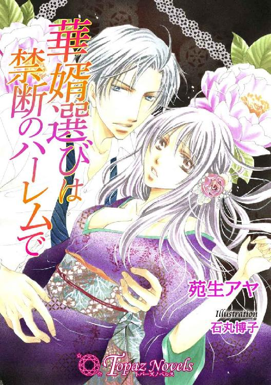

| 華婿選びは禁断のハーレムで【書下ろし】 (トパーズノベルス) | |
| 苑生アヤ | |
トパーズノベルス
華婿選びは禁断のハーレムで
著作 苑生アヤ
Illustration 石丸博子
この物語はフィクションであり、実在の人物・団体・事件とは一切関係ありません。
プロローグ いけないこと
お腹の奥底に熱くて硬いものが触れている。なぜこんなことになったのか考えると、背徳の悦びで全身が震え、赤い唇からは甘く潤んだ嬌声がぽろぽろと零れ落ちてきた。
広い浴室の美しいタイルの上に組み敷かれながら、鹿目沙弥子は温かな湯気でくもった天井をぼんやりと見上げる。両手をネクタイで縛られているため、底なしの快楽から逃れることができないのだ。逞しい男の腕に抱かれ、はぁはぁと忙しなく息を吐き、ゆらゆらと揺れるばかりの自分の脚から目を背けた。
「......み、貴臣っ、も、いや......いやぁっ......」
沙弥子はほっそりとした首や肩に張りつく髪を振り乱し、わずかに残る理性の下で必死に訴える。なのに、また──。
「......っ、出す、ぞ」
「あっ、ぁ、ぬい......て、抜いて......ダメ、なかは、だっ......め......！」
思いっきり子宮口を穿たれて一瞬意識が飛びそうになった。
蜜まみれの膣壁がヒクン、ヒクンとうねり、苦しさと快感とが入り混じった悲鳴を上げる。その瞬間、熱い飛沫が迸り腹の中をねっとりと濡らしていった。
「ひぅっ、う、あ、はぁ......！」
もう何度目だろう。彼が吐精するたび、すべて中に注がれている。それが恋人のものでも、夫になるべき人のものでもないなんて、あまりの罪深さに眩暈がした。
「こんなの......ダメなのに、ビュクって、でて、る......あふれちゃ、あっ、ぅ、いやぁ......っ」
どんなに嫌がっても、彼、弦木貴臣はヌルヌルとぬめる膣を埋め尽くし、うっすらとほころぶ子宮口を執拗に突き上げてくる。吐精しながら律動されると感じすぎて辛いのに、沙弥子がいくら涙を零してしゃくり上げても容赦がなかった。
「泣くな......大丈夫だ、沙弥子。もしできても兄貴の、惣介の子だと偽ればいい。俺とは半分血が繋がっているんだ、すぐにはどちらの子かなんてわからない。よかったな、あいつにも抱いてもらえて。おまえの望み通りじゃないか」
貴臣は沙弥子の脚を持ち上げ、体重をかけて繋がりを深くする。自由を奪われた上に結合部があらわになり、沙弥子は苦しさと恥ずかしさで呻き、イヤイヤと首を振った。
「貴臣、信じて。わたし......してない。お兄さまに抱かれてなんて......ない、わ。だから、ああ......ふぁ、な、なかはダメ、なかに出したままぁ、うごか......ない、でぇ」
「なら、さっきまでおまえが垂れ零していた精液は景吾のものか？」
「ちがっ......わたしは、あなただけ......、ぁっ......いや、いやっ、も、やあぁ......っ」
沙弥子は貴臣の横暴を泣きながら詰る。けれど、彼はまともに聞く耳を持たないようだ。言葉を交わすかわりに、またグチュグチュと音を立てて狭い膣内を擦り上げられた。
「ひゃっ......ン、ふ、深いっ、やめ、あ、あぁっ」
乱暴な腰使いは、一月前の初体験を思い起こさせる。
まるで犯すように純潔を奪われた日のことを、沙弥子は一日たりとも忘れたことがない。
それからずっと、貴臣しか知らない身体だ。ひどくされても沙弥子の膣肉は彼のものを従順に受け入れ、甘く締めつけた。
激しい律動に合わせて背中がタイルにぶつかり、痛みを感じる。しかし、それ以上に繋がった場所が疼いて苦しい。今夜また初めてを──初めての中出しを貴臣に許してしまい、子宮がじぃんと重く痺れ、ゾクゾクするのを止められなかった。
沙弥子の美しい顔は汗と涙とよだれで汚れて、下肢は二人の体液で濡れ光っている。
ずぷぅっ、ずぷぅっと淫らなストロークで膣内を掻き回されるたびに、ツンと上を向いたピンク色の乳首が触って欲しそうに震えた。そうして性感を高め、膣の奥で最も敏感なスポットを擦られると我慢なんてできるはずがない。
「いっ、あ、そこっ、ダメ、そこは......あっ、はぁ、い、いのっ......」
沙弥子はついに本音を洩らしてしまい、慌てて唇を噛みしめる。婚約者候補のいる身で快楽に流され、思うままに乱れるなど、ほんとうはあってはならないことなのだ。
しかし、決して結ばれない男に貫かれ、熱い精液をドロリと流し込まれる瞬間がたまらなく気持ちいい。罪悪感で胸が張り裂けそうになるのに、その痛みが甘い陶酔を連れてきた。
（ごめんなさ......い、お兄さま......景吾さん......）
ここにいない二人には申し訳ないが、沙弥子はもう処女ではない。それどころかたっぷりと子宮口を突かれ、彼らのどちらかの子を孕むべき場所まで別の男の体液で汚されていた。
「お、お願い......。もう一回......もう一回して......」
いけないことだとわかっているのに繰り返し求められ、沙弥子は欲に濡れた目で貴臣を見つめ返す。かろうじて残っていた理性が跡形もなく溶けていくのを感じながら、後はただただ快楽に溺れた。
第一章 旧家の娘
艶やかな黒髪が背中で揺れている。透き通るような白い肌と長い睫毛、形のいい鼻、熟れた苺のように赤い唇が彼女の人形じみた美しさを際立たせ、どうしようもなく人目を引いた。
しかし、見られることに慣れた少女は控え目に追ってくる視線を気にした様子もなく、美しい庭を駆けていく。静かに佇む木々も色鮮やかな草花も彼女の足を止めることはなかった。
東北地方──南部。その西側の、南北に広がる大盆地。
雪深い山脈から北へ流れる川が、広大な大地を潤している。ここは全国有数の穀倉地帯としても知られ、古くから有力武将の城下町として栄えてきた土地だ。
今も歴史ある武家屋敷と桜並木が美しい景観を作り出し、山あいの小京都と呼ぶのに相応しい品格と風情を漂わせている。かつての城を西に望む山の頂からは、緑豊かな市街地を見下ろすことができ、この地を約四百年に渡って治めた一族の廟所や彼らとゆかりの深い寺院、ひっそりと佇む藩士の墓に塔などが史跡として各所に残っていた。
そんな絶好のロケーションにありながら、とても観光地とは思えない静寂な趣を持つのが、鹿目家の大邸宅だ。約五千坪もの敷地にある屋敷は二の郭跡に建てられ、近くには七つの分家と旧家臣の家々が散居しており、しだれ桜やケヤキの木が続く大通りから路地へ入ると、黒塗りの壁と白い土蔵のコントラストがレトロモダンな雰囲気を高めていた。
世が世なら大名の姫君である沙弥子は、この平成の世にあってなお、「姫さま」と呼ばれる立場にいる。一族の当主である父の征司に子供は沙弥子ただ一人で、彼は身体の弱かった妻を早くに亡くしてからは娘を溺愛して育ててきた。
やがて家を継ぐために仕込まれた礼儀作法や習い事は、より良い条件の男性を射止めるための下準備でもある。鹿目家は県内有数の資産家だが、当主の代替わりには制約がつき、それが何よりも重要視されているのだ。事業に関しては、優秀でさえあれば分家の者が采配をふるってもかまわないのだが、彼らの上に立つ者は本家の直系でなければならない──。
そのため、後継ぎには早い結婚と正しい血統を残すことが求められていた。
（結婚なんて、したくない......）
沙弥子は庭の奥にある洋館を目指しながら、心の中で愚痴を零す。もう周囲に人はいないが、うかつに声に出すことは憚られた。
でも確実に近づいてきている未来を思うと、声を上げて泣きたくなる。蝶よ花よと育てられた自分に、何かを変える力などないのだ。
これから美しい洋館で、三人の男性と暮らすことすら拒めないのだから。
◆◆◆
その知らせは突然だった。
夏休みの学校で生徒会の仕事を手伝っていると、父が倒れたという連絡が入った。急いで正門前のロータリーへ駆けつけると、そこにはいつもの運転手に加えて世話係の貴臣が待っていた。
「お父さまの容態はどうなの？ どうして、こんな急に......」
「説明するから乗れ。病院へ向かう」
困惑も露わに尋ねると、腕を掴まれて後部シートへ引きずり込まれる。貴臣が合図すると黒塗りの車が走り出し、沙弥子は不安そうに眉を顰めた。
子煩悩な父はまだ三十代後半という若さだ。持病もなく今朝も元気そうだったから、八月の厳しい暑さのせいで一時的に体調を崩したのかもしれない。そう考えていると、傍らに座った貴臣の口から、思いもよらないことを聞かされた。
「視察に同行していた父の話では、会議が終わって移動しようとした際に、気分が悪いと言って意識を失ったらしい。すぐに病院へ運ばれたが、医師によると急性心筋梗塞だそうだ」
「よくわからない。重い病気なの？」
「軽くはないな。沙弥子、今日はこのまま病室に泊まれ。夕方から緊急の親族会議があって俺は側に付いていることはできないが、最上階の個室を押さえた。今は宮田が征司さまに付き添っているから、不自由はしないはずだ」
一瞬、何を言われたのか理解できない。目を瞠った沙弥子は、こんなときも冷静な自分の世話係を頼もしく思う一方で、なぜ側にいてくれないのかと声を荒らげそうになった。
感情のまま詰らなかったのは、力強い腕が伸びてきて抱きすくめられたからだ。こんなふうに触れ合うことなど、今までなかった。
「たか、おみ......？」
「落ち着け。大丈夫だ。征司さまはおまえを残して死んだりしない」
少し低めだがやさしい声が耳を撫でていく。沙弥子より頭ひとつ分ほど背の高い男は、ギュッと抱きしめて「大丈夫だ」と何度も何度も繰り返した。
次第に緊張が解けていき、今度は二人の距離や彼の匂いを意識して恥ずかしくなる。さり気なく肩を押し返そうとしたが、綺麗に筋肉のついた身体は沙弥子が押したくらいではビクともしない。困り果てて視線を向けると、思っていたよりずっと近くに整った顔があって驚いた。
艶やかな黒髪をラフに流した男の鼻梁は高く、精悍な顎から首筋にかけてのラインが艶めかしい。わずかに外国の血が混じっている証拠に光りの加減で藍色にも見える黒い瞳や、切れ長の目もと、そして少し厚みのある唇が官能的で、彼を見慣れているはずの沙弥子ですら見惚れてしまいそうになった。
「いい子で待っていられるか？」
「......あなたが迎えに来てくれる？」
胸の奥がざわめいて、ほんのり頬を赤らめながら訊くと貴臣の表情が緩む。緊急事態だからと、兄とも慕う人に甘えてもよかったが、やはり一番身近な貴臣に不安を払拭して欲しかった。
「少し早いが朝九時には迎えに行く。寂しくなったら電話をかけてこい」
「一晩くらい平気よ。......お父さま、すぐに良くなるわよね？」
「ああ」
そっと背中を撫でてあやされ、小さく息をつく。二人を乗せた車は十五分ほど市街地を走って停まり、外から運転手が声をかけてきたところでようやく身体を離した。
「ロビーで宮田が待っているはずだ。家のことは心配しなくていいと伝言を」
「わかったわ。あの、いろいろありがとう」
沙弥子は一度だけ名残惜しげに振り返り、父のもとへと急ぐ。小奇麗な院内で待ち構えていた執事と合流すると、あとは彼と病院長の間で交わされる話で頭がいっぱいになってしまった。
──そこで受けた説明を噛み砕くと、こうだ。
父は運び込まれたときにはやはり意識がなく、現状を考えると全快は難しいかもしれない。しかし、中には数ヶ月もの昏睡状態から目覚めてほとんど後遺症の残らない者もいる。
意識の回復にせよ状態の悪化にせよ、まずはこの先の数日間で患者の容態が上向きになるかどうかが重要な鍵だという。
ならば、と沙弥子は期待を抱いて数日を過ごした。
だが、結局いくら待っても父の意識は戻らずに、昏々と眠り続けることになった。
そして。例年になく重苦しい雰囲気のお盆休みを挟み、一週間が経った。
沙弥子は今日も生徒会の仕事を手伝うために学校へ行っていた。病院に寄ってから帰宅すると、貴臣の姿は見当たらず、分家の者に奥の座敷へと呼ばれた。
父が倒れて以来、入れ替わり立ち替わりやってきては遅くまで話し合いをしていた親族たちの間で、何かしら結論が出たらしい。
沙弥子は玄関先で使用人に鞄を預けると、その足で彼らのもとへ向かった。
由緒ある鹿目家はとても広い。長い廊下から大きな一枚ガラスを隔てて見えるのは、日本庭園と錦鯉の泳ぐ池だ。お盆明けとはいえ、残暑の厳しい毎日なので、涼しげな景色にほっとする。水際では八重咲きのひまわりが満開を迎え、萩の花や秋の七草も咲き始めていた。
色鮮やかで美しい庭に後ろ髪を引かれる思いで本格的な数寄屋造りの屋敷を進んでいく。
華美を嫌った武家の気質を反映してか、装飾性を抑えながらも屋久杉や会津桐、赤松、楠、ツガ、楡などの高級木材がそこかしこに使われ、天井の彫り物や欄間に格子戸の組子建具の細工まで素晴らしい出来栄えだ。そのほか障子の桟やふすまの引き手、釘隠に至るまで、控え目ながらも凝った意匠で、みちのく文化の粋と言えるような雅趣のある内装になっていた。
そんな屋敷の中心部には、かつて謁見の間として使用されていた大座敷が存在する。
極彩色の孔雀と唐松と牡丹が透かし彫りされた欄間を境に上段と下段に分かれており、合わせると三十畳ほどの広さがある。格式ある格天井と折り上げ格天井が見事な空間だ。壁には純金箔を用いた金砂子が貼られ、障子の腰板やふすまには花鳥風月の風流な絵が描かれていた。
そこで年に一度行われる親族会議は、お盆とお正月の宴席同様、各家の当主が一堂に会する重要なもの。今回は本家の当主が倒れたことによる臨時の会合となるが、沙弥子が到着したときにはもう、年配の男たちが十人ほど座って待っていた。
七つある分家の当主と、旧家臣の家柄の代表者たちだ。部屋の片隅には、執事の宮田と何人かの使用人。それからなぜか、上座から近い位置に二人の青年の姿があった。
沙弥子は貴臣の異母兄である惣介を一瞥し、促されるまま上座に座る。
「姫さま、おかえり早々に申し訳ございません」
代表して一礼したのは、弦木家の現当主だ。惣介と貴臣の父親で、いかにも仕事ができそうな風貌をしている。年は沙弥子の父より上だが、普段は仲の良い友人といった感じで笑っていることが多いため、取っ付きにくい印象はない。むしろ親族の中でも親子共に親交の深い人物だった。
もう幼い子供ではないのだから、いい加減に姫さま呼びは止めて欲しいと言っても、こういう場では必ずかしこまった態度を取られる。父のことは「殿」と呼ばないのに理不尽だ。それでも女の子だから余計に可愛がられてきた自覚はあるため、何も言わずにシャンと背筋を伸ばした。
幼稚舎から籍を置く東雲学園は淑女教育が徹底しているので、普段から身につけるものもそれに相応しく上質だ。ただの制服もプライムグレーのプリーツスカートに清楚な白い半袖ブラウスを合わせ、グリーンベースで金茶と水色のストライプが華やかなリボンを結ぶ。足もとは紺のハイソックスだ。暑い中、巷の女子高生のように衣服を着崩さずにいる沙弥子を見て満足そうに目を細める大人たちは、まるで娘や孫の健やかな成長を喜んでいるかのようだった。
「お父さまなら、まだお目覚めにならないわよ」
いっそ十二単でも着て扇を打ち鳴らせばもっと満足するかしら、などと思っていると、彼らは打って変わって沈痛の面持ちで頷き合った。
「確かに征司さまのご容体は芳しくありません。姫さまには、万が一という場合も考えていただかなければならないのです」
「......何が言いたいの？」
不吉な物言いを不快に思って眉を顰めると、分家の者たちの視線が惣介ともう一人の男性に向いていることに気づく。沙弥子はつられるように彼らを凝視した。
惣介の実家である弦木家というのは、鹿目家に連なる七つの分家のうちの筆頭で明治初期からこの地で酒造業を営み、現在は全国的にも有名な酒蔵として名を馳せている。現当主は実業家として活躍する傍ら、地域の経営者向けの講義などもこなすやり手で、当然親族会議における発言力は強い。そんな彼の正妻が産んだ息子・惣介は、東京の大学を卒業すると経営者となるべく地元へ戻ってきており、昔から沙弥子の良き遊び相手だった。
年は今年で二十八だが、いつも優しげな笑みを浮かべているため実年齢より若く見える。貴臣ほどではないが背も高く、和装の似合うしなやかな身体つきで、決して女性的ではないのに右目の下の泣きぼくろのせいか、妙な色気があった。
彼は普段よりも少しカッチリとしたスーツ姿だ。ともすれば印象が重くなりがちな黒色にサックスブルーのシャツを合わせて涼しげに着こなし、沙弥子が去年の誕生祝いに贈ったイタリアブランドのエンジのネクタイを締めている。そして、その隣に座る男性は──。
「久しぶりだな、沙弥子」
「もしかして......景吾さん？ イギリスにいるのではなかったの？」
「ああ。つい先日、こっちに呼び戻された」
「どうして......」
沙弥子は思わず尋ね返して、ハッとした。
彼の名は、安齋景吾。七年前に大学進学を機に渡英して以来、ろくに帰国せずに、そのまま向こうで働いていると噂で聞いていた。
安齋家と近しい友人は、彼の姿を見なくなったことを子供ながらに嘆いていたものだ。沙弥子は特別親しくないが、父に付いてあいさつ回りをするうちに何度か話をしたことがあった。
景吾の実家は鹿目家とはまた別系統の名家で、代々政治家を輩出している。昭和初期からしばらくは国政の中心にあり、後に大臣として大成した者もいた。
確か今の市長も安齋家の出身だ。彼の兄弟たちも政治の道を志し、長男は数年前に結婚して地盤を固め、次男も近々婚約を発表するという。景吾は三男のため比較的自由の身であり、語学の才能を生かして翻訳の仕事をしていたはずだ。沙弥子の知る限り、彼はとても明るく社交的な性格で、たまにパーティーで見かけるといつも大勢の友人に囲まれていた。
身長は貴臣と同じくらいで百八十センチを超えていたが、威圧感がないのは明るい髪と焦げ茶色の目のせいで少し軽そうに見えるからだろう。もっとも立ち居振る舞いに育ちの良さが滲み出ていて下品さはなく、笑顔が魅力的で女性受けしそうな雰囲気を持っている。キートンのハイセンスなスーツも華やかに着こなしており、ネクタイの柄は遊び心のある水玉模様だった。
「姫さま、我らは今こそ団結してこの苦境を乗り越えなければなりません」
弦木家当主の発言に異を唱える者はいないらしい。なるほど、最近貴臣とろくに顔を合わせることがなかった理由はこれか、と沙弥子はそっと柳眉を寄せる。
貴臣は沙弥子の世話係を務め、誰よりも嗜好や考えに詳しい。愛人の子とはいえ、能力的にはすこぶる優秀なので、親族会議に出席する権利だって持っている。しかし、この場にいないのは自ら遠慮したか、各家の当主たちに閉め出しをくらったかのどちらかだ。
おそらく前者だ、と沙弥子は思う。彼は何人かで行った事前の話し合いにのみ参加して、あとは上の者たちの決定に従うという姿勢を示したに違いなかった。
（そう......よね。家のことを考えたら、貴臣が反対なんてしてくれるわけないわ）
「急で申し訳ありませんが、姫さまには鹿目家の次期当主として、代々の慣例に従い将来の伴侶をお選びいただきます。本日より征司さまの意識が三ヶ月経っても戻られない場合には、その婚約者との婚姻を以って、正式に我らのご当主として認めることを誓約いたします」
「それが、あなたたちの決定なの？」
「はい」
答えは簡潔だ。全員が、神妙な面持ちで頷いている。
「我々はここにいる弦木惣介、それから安齋景吾を姫さまの婚約者候補として推薦いたします。彼らのいずれにしろ、家柄、血統、財力、能力、人柄と不足はありません」
「沙弥子、僕はこの話を承諾してここにいる。よく考えて選んで欲しい」
「オレもだ。その気がなければ、この場にいない」
沙弥子は一呼吸おいて微笑む。他に選択肢などないことはわかっていた。
父が倒れた今、家のことで揉めるわけにはいかない。沙弥子には親族を、会社を、そこで働く人々を路頭に迷わせないだけの力はないから、古くからの慣習を素直に受け入れる。
「わかったわ。未来の旦那さまを三ヶ月後までに選べばいいのね」
「ありがとうございます。納得していただけて、ひとまず肩の荷がおりました」
大人たちが安堵の表情を浮かべるのを見て、沙弥子は二人の婚約者候補に向き直った。
「お兄さま、景吾さん、よろしくお願いします」
「こちらこそ。ああ、それとね。さっそくで悪いんだけど、当日まであまり時間がないし、沙弥子には明日から僕たちと一緒に暮らしてもらうよ」
「期間は短いが、仲良くやろうぜ」
惣介がさらりと無茶を言い、景吾もウィンクを寄越す。驚いたのは沙弥子だけのようだ。
「待って。ここに住むの？」
鹿目本家の敷地は約五千坪、母屋の建坪も五百三十坪という壮大さだ。当然部屋数は多く、使用人の個室ですら二十部屋もある。だから好きなだけ滞在してくれてかまわないのだが、どちらと結婚するかも決まっていないのに同居というのは、気が早すぎないだろうか。
困惑していると、弦木家の当主が訳知り顔で口を挟んできた。
「ご心配には及びません。愛を乞う立場にありながら不埒な真似などすればどうなるか、彼らとて弁えているはずです。決して姫さまの意に沿わぬことはしないでしょう」
「それは......信じているけど、でも」
「最近は征司さまのことで心を痛めているご様子でしたから、気分転換だと思ってください。母屋のほうは今しばらくドタバタしますが、離れならゆったりとお過ごしになれますよ。もちろん不自由がないように何人か使用人をやりますし、貴臣も一緒ならば不安は少ないはずです」
「......洋館へ移るの？ それに貴臣って......、彼はわたしの婚約者候補ではないの？」
ついわかりきったことを尋ねると、この場にいる者たちが揃って渋い顔をする。
「彼では姫さまの夫として釣り合いません」
「その通り。兄の惣介くんがいれば貴臣くんの出る幕ではないでしょう」
「貴臣くんはあくまでも姫さまのお世話をする立場ですから」
誰かが発言すると次々に賛同の声が上がる。そこには貴臣の父の同意も含まれていた。
別に貴臣が嫌われているわけではない。単なる事実として、ここでは彼の身分が劣るのだ。
貴臣は九年前に実母が亡くなり、鎌倉からこの地へやってきた。当時すでに弦木家の当主は妻と離婚し、彼が正式に次男として家に入っても悪し様に言う者はいなかったが、それでも環境の変化や新しい生活に慣れるのは大変だったと思う。
ただ古い家には愛人とその子供の存在などよくある話で、異母兄である惣介はすんなりと弟を受け入れたし、貴臣も一つ上の兄を認めて友好的な関係を築いてきた。
それに分家筋では個人の能力次第で出世できるため、悪いことばかりではなかったはずだ。
当主への顔見せから程なく沙弥子の世話係を任じられてからは、徐々に一目置かれるようにもなっていた。今の彼が望めば、大抵のことは何でも叶う。
しかし、各家の当主たちが唯一絶対の主と誓う本家当主の娘たる沙弥子の婿となれば話は別だ。
大概の家なら弦木家とは家格が釣り合い、たとえ貴臣の出自が劣っていても歓迎される。けれど、「正しい血統」を残すことを優先する者たちは、沙弥子が相手の場合のみ、身分違いの結婚と判断するだろう。まして、四分の一、外国の血の混じった貴臣を認めることはない。
その上でどうしても沙弥子を得たいのなら、強い覚悟を示して自らが求婚者として相応しいことを認めさせる必要があったが、とても自分にそこまでの価値があるとは思えなかった。
そもそも貴臣とは恋人同士ですらないのだ。彼が地道に獲得してきた信用を捨ててまで、リスクだらけの望みを抱くわけがない。
「姫さま、惣介ではお気に召しませんか？」
「いいえ。お兄さまはとても素敵な方よ」
苦い気持ちが顔に出ていたらしい。まるで惣介に不満があるかのように受け取られ、沙弥子は慌てて否定する。幼いころから惣介にはよくかまってもらい、沙弥子は彼に懐いていた。
人柄を知っているからよけいに粗雑な扱いはできない。景吾にしても、自分を溺愛する人々が様々な観点から選んだのならば、重い期待に応えられるだけの人物であることは間違いなかった。
「では、この話はここまでにしましょう。必要な荷物はすでに離れへ運ばせました。あとは貴臣にお聞きください。惣介、景吾くん、姫さまを頼むぞ」
「はい」
「必ず口説き落としてみせますよ」
二人から親しみのこもった笑みを向けられ、沙弥子も同じように笑い返す。
話し合いの場が和やかな雰囲気になると使用人がお茶とお菓子を運んできた。沙弥子は歓談の輪に加わりながら、今すぐ貴臣に会いたい気持ちをどうにか押さえ込む。
彼を問い詰めたところで、今さら重要な決定が覆るわけではないのだ。
無理を承知で反対して欲しかったと思うのは、沙弥子のわがままに過ぎなかった。
◆◆◆
父親から連絡が行っていたのか、薔薇の茂みを抜けると玄関ポーチで貴臣が待っていた。
「おかえり。この暑い中、母屋から走ってきたのか」
「半分はあなたのせいよ。お兄さまたちのこと、よくも黙っていたわね」
「涼しい部屋で飯でも食いながら話そう」
「ええ、いいわ。そのほうが落ち着いて話ができそうだもの」
ここに来るまでグダグダと悩んで心の中で愚痴を吐いていたことを知られたくない。沙弥子はハンカチで首筋の汗を押さえると、何でもないような顔をして彼の横をすり抜けた。
扉を開けて一歩中に入れば、そこは吹き抜けのホールになっている。正面の大階段の中央部にはロイヤルブルーのカーペットが敷かれ、傍らの大きなアンティーク鏡と大理石の暖炉、そして壁や柱に施された細やかな装飾が独特の雰囲気を作り出していた。
昼間は天窓から自然光を取り入れて、日が落ちると透かし彫りが見事な三灯式のシャンデリアや乳白色のシェードランプから淡い灯りが降り注ぐ。中に上がって右へ折れると、それぞれ立派な応接室とリビングがあり、左手の食堂の奥にはサンルームまで併設されていた。
この離れは、もともと代々の当主が愛人を囲ってきた館のため、やたらと凝った造りで趣がある。大正時代に一度増改築され、地上二階・地下一階の構造となっているが、当時としては高級な黒柿の銘木などがふんだんに使われていて、調度品も一点ものばかりでとても豪華だ。
最後に人が住んでいたのは曽祖父の代だと聞くが、沙弥子はレトロな建物を気に入っている。嫌なことがあったり、貴臣に叱られたりしたときは、しょっちゅうここでふて寝をしていた。
そのせいか一階のリビングを中心に定期的に清掃され、あまり手を加えることなくこちらへ移れたらしい。まっすぐに食堂へ向かおうか迷っていると、階段の前へ背中を押された。
「二階の東側の一番奥をおまえの部屋にした。俺は一つ空けて隣だ。兄貴と景吾は西側の二部屋を使う。男ばかりで戸惑うこともあるだろうが、これで少しは安心できるだろ。ほら、まずは着替えてこいよ」
「......ありがとう」
制服姿も何なので、素直に従って階段を上がっていく。金色のノブをひねって部屋を覗くと、十二畳ほどの室内はきちんと整えられ、真新しい家具が運び込まれていた。
アイボリーとくすんだ緑の色調が上品で美しい寝室だ。可愛らしい小窓には、薄ピンクと白いレースのカーテンが引かれている。ベッドの周りには毛足の長い絨毯が敷かれ、アンティークの本棚や白い鏡台、ガラスのテーブル、ふかふかのクッションにソファと、必要なものは一通り揃っているようだ。備えつけのクローゼットにも新品の洋服が入っていた。
「段取りが良すぎて腹が立つわね」
むっとしながら制服を脱ぎ、クローゼットの中を漁っていく。沙弥子はお世辞の飛び交う社交の場で、年若いながらも百花の王たる牡丹や深紅の薔薇に例えられることが多く、着物やドレスは赤や黒のようにハッキリとした色のものを選ぶようにしていたが、普段着は好きなものを好きなように着ると決めている。貴臣は優しい色の服も似合うと褒めてくれるので、夏らしく涼しげな水色のワンピースを身につけると、一階の食堂へ下りて行った。
そこは窓側が全面ガラス張りのモダンな構えで、華麗な庭を眺めることができる。奥の有色ガラスの戸を引くと、建物から突き出たサンルームへと繋がっていて、外の景色を間近でゆったりと眺めながら食事を楽しむことができた。
貴臣はそのサンルームにある席に座り、若いメイドと何やら打ち合わせを──いや、雑談をしている。はしゃいだ様子のメイドの姿に、沙弥子は内心苛立ちを覚えた。
おそらく彼女は、貴臣狙いで離れでの仕事に立候補したのだろう。使用人にとっては彼も仕えるべき側の人間なのに、随分と砕けた態度だ。鹿目家には惣介も頻繁に出入りしていたが、貴臣ならば手が届くと思っての振る舞いなら、こんなに不愉快なことはない。
「ねぇ、お腹がすいたわ」
「あっ、お嬢さま......！ 失礼いたしました。ごゆっくりお召し上がりください」
わざと足音を立てて近づくと、メイドは慌てた様子で下がっていく。さすがに沙弥子を放ってまで話を続けるつもりはないようだ。
沙弥子は貴臣が引いてくれた椅子に座って、白いクロスがかかったテーブルを見た。
二人きりでじっくり話をするために、今夜は一度にすべての皿を運ばせたらしい。
「......わたしの好きなものばかりね」
メニューはフレンチとシノワーズをミックスさせたコースだった。
前菜はスティック野菜のアンチョビソースにフカヒレのゼリー寄せ、それから鶏と海藻のテリーヌ。温菜はトウモロコシのブルーテで、魚料理として伊勢海老とホタテとスズキの三種焼きが並んでいる。口直しのレモンのグラニテもさっぱりとして美味しそうだ。
メインの肉料理は献上牛でもあった会津塩川牛のステーキだろうか。あの上品な味わいと、香草風味のソースはよく合う。スパイスの効いた香りが食欲をそそった。
それにふわふわのパンが二種類あって、バスケットからは焼き立ての香りが漂ってくる。
〆のデザートは白桃のゼリーにガトーショコラ、クリームチーズのアイシングをかけたキャロットケーキという組み合わせだ。すぐ横のクリスタルグラスには、色鮮やかなミントを添えた冷たい紅茶がたっぷりと注がれていて、大きめに砕かれた氷がきらきらと光っていた。
「もしかして、今夜はわたしのご機嫌取りでこのメニューなの？」
「どちらかと言うと、おまえの好物を確認しただけだ。明日からの食事では、特に景吾にそういうものを教える必要がある。残された時間は少しでも有効に使ったほうがいい」
手にしたフォークが滑り、皿にぶつかってガチャンと音を立てる。世話係としてマナーに厳しい貴臣だが、珍しく不作法をたしなめることなくソースが跳ねた沙弥子の手を取った。
汚れを拭くならナプキンを使えばいいのに、いきなりベロリと舐め取られ、驚きのあまり目を瞠る。すると、貴臣はすぐに手を離して何事もなかったかのように食事をし始めた。
沙弥子は一口も食べないうちから料理なんてどうでもよくなってしまい、色鮮やかな野菜をぼんやりとつつく。ため息が聞こえてきて顔を上げると、皿の上がグチャグチャになっていた。
「あ......こ、これは......あなたが悪いのよ。さっきの、びっくりしたわ。もうしないで」
「あいつらの前ではしない」
「......いい加減に教えてくれる？ 貴臣は前から知っていたの？ お兄さまと景吾さんが......、あの二人のどちらかが、わたしの夫になるかもしれないって」
「ああ。少し年は離れているが、おまえには年上のほうが合ってるしな。征司さまや俺にでろっでろに甘やかされて育ったから、同世代のガキ共じゃ興味すら持てないはずだ」
「口が悪いわよ。それにわたし、あなたには飴と同じくらい鞭ももらったわ」
「そうか？」
「貴臣スパルタだもの。成績を落とすと何時間でも勉強させるし、マナーにミスがあれば反復学習で身体に叩き込むし。お陰でわたし、外では淑女の見本のように思われているのよ？」
「俺の仕事はおまえを完璧な女に仕立て上げることだ。仕事に手は抜かない」
お互いに成果が出て良かったじゃないか、と言ってワイングラスを傾ける貴臣のマナーは完璧だ。初めは沙弥子が一般家庭の出である彼を珍しがってあれこれとお稽古事に連れ回していたのに、わずか五年足らずで追い抜かれてしまった。
そこに血の滲むような努力があったことは知っている。成長した貴臣を見ていると、父の命令がなければ、後継を作ることしか求められていない沙弥子の世話係なんてやり甲斐のない仕事は、引き受けていなかっただろう。ほんとうなら、傘下企業のいずれかで、本来の実力に見合った地位にだって就けたはずだ。
（わたしが結婚したら、貴臣はきっとすぐにでも離れて行ってしまう......）
沙弥子は寂しさをこらえ、心にもない強がりを言った。
「わたし、もう貴臣がいなくても平気よ。困ったことがあれば自分の旦那さまを頼るから」
「次のお気に入りが見つかれば俺は用済みってことか」
「え......？ 違うわ。そんなつもりで言ったんじゃないの。......ごめんなさい。怒らないで」
なぜか不機嫌そうに返され、沙弥子は悲しげに目を伏せる。九年前とは違い、彼の手を煩わせる機会は少しずつ減っていたが、「用済み」だなんて。
そんなふうに考えたことは一度もなかった。
誤解されて落ち込んでいると、グラスを置いた貴臣にぽんぽんっと頭を撫でられる。
「悪かった。最近忙しくて、今のは八つ当たりだ」
「貴臣が......八つ当たり？」
いつも冷静で、何でもさらっとこなしてしまうのに。
唖然として彼を見れば、確かに端整な顔にはうっすらと疲労の色が滲んでいる。
沙弥子はとっさに立ち上がり、手を伸ばして彼の目もとに触れた。
貴臣はじっとしたまま動かない。そのうち、二人の距離が徐々に縮まっていき──、ブーブーと彼のスマートフォンがバイブ音を立てた。
「......悪い。仕事の電話だ」
「出ていいわ。庭を見ながらご飯を食べているから」
貴臣は画面を見るなり中座する。わざわざサンルームから食堂へ戻って話をし始めたので、これは長くかかるかもしれない。市内の国立大学へ通っていたときも学業と沙弥子の世話の両立は大変そうだったが、社会人になってからはさらに多忙な日々を送っているのだ。
明日からの新生活は、また彼の負担になるだろう。貴臣のことを思うなら、沙弥子は一刻も早く結婚相手を選ぶべきなのだ。一応三ヶ月もの猶予は与えられていたが、迷う時間が長引くほど裏方の彼は予定の調整や対応で面倒な仕事が増えるに違いない。
「......でも、無理よ......。一生のことだもの......よく考えないと」
沙弥子はぽつりと呟き、メインの肉料理にナイフを入れる。あとはスパイスのきいたソースを絡めて咀嚼しながら、ライトアップされた庭ではなく貴臣の後ろ姿をじっと見つめていた。
第二章 婚約者候補と三人目の男
朝の散歩は沙弥子の日課だ。それは同居生活が始まって半月経った今も変わらない。
東北地方は九月に入ると朝晩の気温がぐっと低くなり、一日の温度差も大きくなるのだが、少しひんやりとした空気を全身で感じながら、一周約三十分の庭を穏やかなペースで歩いていく。耳を澄ませば、小鳥のさえずりや清らかな水の音が聞こえてきて気持ちがよかった。
梅に桜、ツツジにかきつばた、紫陽花、百日紅、紅葉にイチョウ、そして椿と、一年中いつも庭園を彩る草花は鹿目家の自慢だ。東屋へ続く小路や水辺の茂みなども専属の庭師たちの手できちんと整備されていて、どこを見ても美しい。夜は夜で石灯篭の灯りが幻想的に揺らめき、爽やかな朝日を浴びて輝く庭とはまた別の魅力を見せてくれていた。
やがて分岐点に差しかかる。沙弥子はまっすぐに母屋のほうへ進み、途中で進路を変えると「幽翠池」と名づけられた池の橋を渡って対岸へ辿り着いた。
いくつかの木陰には休憩用のベンチが置かれ、座って池を鑑賞できるようになっている。数代前までは、県内の有力者を招いて風流な舟遊びをしていたというだけあって、十分な幅と深さを持っている池だ。敷地の南側にある母屋から北寄りの茶室近くまで、緑の茂みを幾重にも挟んでずっと続き、どこから眺めても澄んだ水をなみなみとたたえていた。
ぴちゃんと音がして目をやると、肥えた錦鯉が何匹も泳いでいる。水面に張り出す桜や紅葉の木の下を通って散歩コースの半周を過ぎ、その先で静かに佇む東屋と粋を凝らした茶室の横を抜けると、緩いカーブを描く小路に出た。
離れへ繋がる、最後の一本道だ。周囲の景色が、ちょうど洋館を取り囲む英国庭園に切り替わった辺りで、五日前から顔を見せるようになった景吾がベンチから立ち上がった。
「おはよう、沙弥子」
「おはようございます、景吾さん。今日も早いのね」
「お姫さまを独り占めできる時間が、今のところこの時間だけだからな」
グレーのタンクトップに黒いスウェットというラフな格好の景吾が肩をすくめる。彼はあっさりとここでの暮らしに馴染み、生来のコミュニケーション能力の高さを示すように、七年ぶりに再会した沙弥子ともすっかり打ち解けて明るく接してくれていた。
なにより景吾は、話題が豊富なうえに話術も巧みでおもしろいのだ。特に海外での体験談は興味深くて、洋館までもう五分とかからない距離なのについついお喋りをしてしまう。
この日もとりとめのない話をしながら、二人並んでゆっくりと歩いていった。
そのうち何となく流れで国内外でのガーデンパーティーが話題になり、小さな沢沿いを通りかかったところで、沙弥子は初夏の思い出を振り返る。
「我が家では毎年七月上旬にホタルの観賞会をするの。ちょうどその辺の茂みなんかを好むみたいで、一晩中チカチカと光っていてとても綺麗なのよ」
「そりゃいい。これだけ立派な庭なら、随分と見応えがありそうだ」
「ええ。家族や友人だけのホームパーティーだから気が楽だし、集まった人たちもとてものんびりとした雰囲気で、邪魔をされずにゆっくり見ていられるから、わたしは好き。他にも観桜会や七夕祭り、花火やお月見、紅葉狩りなんかをするの。あと、冬には趣向を変えてカマクラでお餅を焼いたり甘酒を飲んだり......。温まったらみんなで雪だるまや雪うさぎを作るんだけど、すごく盛り上がるわ。よかったら、景吾さんもぜひいらして」
「ああ。そのときは」
景吾は悪戯っぽく笑って言った。
「でも、冬はともかく来年の今ごろは、オレも君と一緒に誰かを招くほうになっているかもな」
「え？」
「結婚して、早けりゃここに子供もいる」
「こども......？」
彼の視線をたどり、驚いて下腹を押さえる。今日の格子柄の浴衣はさらりとした着心地で沙弥子のお気に入りだったが、そんなふうにじっと見つめられると、ラベンダー色の帯が華奢な腰周りを強調しているかのようで、何だか落ち着かない気分になった。
「......、想像できないわ」
景吾の言葉もまるで他人事のように思えてしまい、沙弥子は頼りなく首を振る。客観的に見て彼はとびっきり魅力的な男だったが、婚約者選びからわずか半月でそんなことまで考えられない。沙弥子にとっての景吾は、まだ恋愛対象として意識するような存在ではなかった。
「沙弥子、手を貸して」
少し考え込んでいると横から右手の甲を撫でられる。とっさに引っ込めようとして、やや強引に恋人繋ぎにされた。
「オレのほうが惣介さんより圧倒的に不利なんだ、このくらいはいいだろ？」
「不利だなんて......」
人好きのする笑顔とはうらはらに、一気に距離を縮められ、困惑する。
「一応訊くけど、恋愛の経験は？」
「......ないわ。わたしには旦那さまになる人だけでいいの」
「いいな、それ。可愛い」
「可愛い？」
「嘘つきで可愛い」
ドキリとして、景吾を見上げる。
「好きでもない男をそんなふうに見つめたら駄目だと、教わらなかったのか？」
背をかがめ、耳もとで囁かれる。思わず後ずさったが、しっかりと繋いだ手を引いて腰を抱き寄せられた。
パーティーでダンスを踊るとき、リード役の男性とはこのくらいの距離になる。でも、まるで違う感覚に、沙弥子は本能的に怯えて硬い胸を押した。
しかし、「ダメ」も「やめて」も威力がないらしく、こめかみや首筋にキスされて頬が赤らむ。そのうち長い髪を梳きながらベロリと喉を舐められ、思わず高い声が出そうになった。
「忘れるなよ。君の夫になるのはオレか惣介さんだ。これ以上のことが、できるのも」
涙目になっていると、まるで聞き分けのない子供を諭すように囁かれる。景吾はただ立ち尽くすばかりの沙弥子の首筋を愉しそうに甘噛みして、最後にきつく吸い上げた。
「いっ......や、何を......したの......？」
「宣戦布告みたいなものだ」
彼は困惑する沙弥子に笑いかけると、手を繋いだまま離れに向かって歩き出す。とりあえずここまでということなのだろう。
恥ずかしい気持ちで玄関をくぐると、中に入ってすぐのところに貴臣が立っていた。
「遅い。もう八時を過ぎたぞ。親睦を深めるのはけっこうだが、時間を考えろ」
彼は散歩に出たっきり戻らない二人をずっと待っていたらしい。隣でそっと笑う景吾の手に力がこもり、沙弥子は今度こそ慌てて身を引いた。
「違うの」
「言い訳はしなくていい。景吾はおまえの婚約者候補だからな。仲違いしているよりましだ。だが、平日の朝の忙しいときにのんびりと語り合っていたら学校に遅れるだろう」
「......ごめんなさい」
「貴臣さん、オレが沙弥子を引き止めたんだ。小言はその辺にしてやってくれないか。沙弥子、オレは先に食堂へ行くよ。また後でな」
景吾は沙弥子の頭にぽんっと手を置くと、頑張れ、などと適当に励まして行ってしまう。爽やかな朝日が降り注ぐ玄関ホールに、不機嫌そうな貴臣と二人で残され、沙弥子は途方に暮れた。
「やけに遅いと思ったら、さっそく痕までつけられやがって」
貴臣はズカズカと近づいて沙弥子の手を掴み、引きずるようにして階段を上がる。彼らしくない強引さに目を瞬かせる間に自室へと押し込まれた。
「た、貴臣、出てって。ダメよ。散らかっているから」
「消毒が先だ」
「わたし、どこも怪我なんてしてない」
「内出血してるだろう、首のとこ。こんな痕を見せびらかして学校へ行くつもりか？」
つん、と首筋を指でつつかれ、沙弥子はわなわなと唇を震わせる。鏡台に飛びついて首を仰け反らせると、貴臣の指摘通り、うっすらと赤い痕が残っていた。
ギリギリ、ブラウスの襟で隠れる場所だ。ほっとして、そこを撫でる。
「たぶん隠せると思うわ」
「そういう問題じゃない」
いつの間にか、すぐ後ろに来ていた貴臣も鏡に映っている。背後から覆い被さるようにして剥き出しの首筋を撫でられ、ゾクリとした。
後頭部が彼の胸に触れる。耳の横にはシャツから覗く腕があり、つむじの辺りに、下を向いた彼の吐息がかかる。突然のことに動揺して、身体が強ばるのは仕方がないことだ。
「沙弥子、前を向いて鏡を見てみろ。おまえ、朝っぱらからエロい顔してる」
「な、ひゃっ！」
「そんなふうに所構わず誘うような顔をしたら、勘違いした男が寄ってくるぞ」
「しらな、い。知らないっ」
「だったら一度、その目で確かめておけ。自分が他人に触れられるとどうなるのか」
髪をさらさらと梳いて、露わになった首を舐められる。赤い痕にぬろりと唾液を塗りつけ、きつく吸われ、より鮮やかな印を刻まれると、そこに嫌というほど熱が集まった。
鏡の中の自分は、まるで別人だ。この行為自体、窓から入り込む陽光とは不似合いな、夜の、秘密めいた匂いがする。とても見ていられなくて顔を背けると、浴衣の襟を引かれて鎖骨どころか胸の膨らみまで見えてしまい、沙弥子はイヤイヤと身をよじった。
「貴臣！」
身体ごと彼のほうを振り向いた瞬間、無防備な胸もとに顔を押しつけられる。小さな痛みに呻くと、貴臣はまた沙弥子を鏡台の前に立たせて赤い痕を撫でてきた。
「興味があるんだろう？ ほら、このくらいきつく吸えば、三日は消えない」
「あ......」
「いざというとき、理想と現実が違うと泣き出したら、あいつらもおまえの扱いに困る。子供のお守じゃなく、自分の女にするためにおまえを口説こうとしているんだからな」
胸の奥の柔らかな部分を、見えない刃で抉られたみたいだ。貴臣がなぜこんな真似をしたのか知って、自分は彼にまったく意識されていないのだと悲しくなった。
「わたしが教えて欲しいと言えば......もっといろいろ教えてくれるの？」
思わずそんなことを尋ねると、貴臣の眉間に皺が寄り、機嫌を損ねてしまったことに気づく。
「高嶺の花扱いされてるお姫さまにも、人並みに性欲があるのか」
「馬鹿にしないで」
「高嶺の花もお姫さまも事実だろう。世話係じゃなかったら、俺だっておまえに触れない」
意地悪を言う彼の指先がゆっくりと身体のラインをなぞり、胸の膨らみを掴もうとした。
しかし、コンコンと扉を叩く音に反応して逸れていく。貴臣は今にもへたり込みそうな沙弥子のもとを離れると、何事もなかったような顔をして呼び出しに応じた。
扉を開けると銀のワゴンを押した若いメイドが立っている。貴臣を慕う、二十代前半の可愛らしい顔立ちの女性だ。使用人用の和服に白いエプロンをかけていて清楚な魅力がある。
彼女の視線を背中に感じて、沙弥子はのろのろとソファへ移動した。
「何だ？」
「あ、あの、安齋さまからお嬢さまのお部屋に朝食をお運びするように、と」
「......そうか。給仕は俺がする。ワゴンを置いて下がれ。それから、あの二人に沙弥子は熱があるから今日は学校を休ませる、外食に誘うのも禁止だと言っておけ」
貴臣はソファの縁に突っ伏した沙弥子を一瞥すると素知らぬ顔で嘘をつく。そして、メイドを下がらせると、ワゴンを押して戻ってきた。
部屋の中にふわんと美味しそうな香りが広がる。ガラスのテーブルに二人分の朝食を並べる音がして、ぽんぽんと腕を叩いて声をかけられた。
「景吾が気を利かせたらしい。朝食にしよう。おまえはそれ以上痩せたら抱き心地が悪くなる」
「......女性の体型をあれこれ言うのは失礼よ」
普通に話しかけられ、安堵するのと同時に気落ちする。さっきの空気は何だったのだろうと思いながら、沙弥子は言われるままにフォークを握り、スクランブルエッグをつついた。
一匙すくって口に入れると、トロリとしてクリーミーな舌触りが癖になる。新鮮な卵と濃厚なバターに生クリームの甘くて優しい味わいが、食べ盛りの少女の食欲を刺激した。
大きめの皿にはハーブのきいたソーセージとカリカリベーコン、焼きトマトにブロッコリー、マッシュポテト、ふわふわのリコッタパンケーキが美しく盛りつけられている。二人の間に大した会話はなかったが、お腹が満たされてくると気分も落ち着いてきて、沙弥子は甘酸っぱいオレンジジュースを飲んでほっと息をついた。
「ご馳走様でした」
貴臣と一対一の食事はいつもより時間がかかってしまい、チラリと壁時計を見ればもうすぐ一時間目が始まる時間になっている。今から急いで準備をすれば、二時間目には間に合うはずだ。沙弥子は空になったグラスを置いて、控え目に言った。
「ねぇ、学校へ行きたいわ。ほんとうにズル休みなんてできない」
「一日くらい休んでもいい。ここのところあちこちから干渉されて疲れただろう」
「珍しい......。真面目に授業を受けないと馬鹿になるって、昔から厳しかったのに」
「その首の痕、少しでも身じろぎしたらブラウスの襟からはみ出るぞ。不自然に絆創膏でも貼って、素知らぬ顔で一日を過ごせるなら止めはしないが」
流し目を寄越され、慌てて首筋を押さえる。彼がふっと笑った気がして戸惑うと、席を立ったついでなのか、まるで親猫が子猫にするように口もとを舐められた。
「もう少し男を警戒しろ。おまえは無防備すぎる」
パンケーキにかけたシロップの甘さが脳まで沁み渡っているのかもしれない。彼の舌先は確かに唇を掠めたのに、不意打ち過ぎて悲鳴を上げるタイミングを逃してしまった。
今のは、ファーストキスにカウントしてもいいのだろうか。
「沙弥子？」
「え、ぁ......でも、貴臣だもの......」
「だから、俺も含めての話だ」
茫然としている間に、貴臣は空になった食器をワゴンに乗せると、おとなしく寝ていろと告げて出て行ってしまう。静まり返った部屋で、沙弥子は赤い顔をクッションに押しつけた。
◆◆◆
「......眠れないわ。病気じゃないんだし」
休養日ということで学校を休んだ沙弥子は、午前中、ぼうっと夢心地で横になっていた。
父が倒れてからの一週間。それから婚約者候補たちと同居を始めてからの二週間。確かに一人でゆっくりする時間がなかった。せいぜい朝の散歩くらいだ。
もちろん病院に泊まったときはそれも途絶えていたし、離れへ移ってしばらくすると景吾が合流するようになり、あまり気の抜けた姿を晒すわけにはいかなくなった。
だから、きっかけは何であろうと、貴臣が自分のことを気遣ってくれたのが嬉しい。素直に布団に入っていられたのは、そのせいだ。
でも、そろそろ退屈になってくる。話し相手になるべき貴臣は、弦木家の用事で呼ばれて外出してしまい、惣介と景吾もそれぞれ仕事やあいさつ回りへ出かけたという。
体調不良ということになっている沙弥子は、昼にメイドの持ってきてくれたリゾットを食べてから何となくテレビをつけてワイドショーを見ていたが、凄惨な殺人事件にも芸能人同士の不倫騒動にも秋物のファッションチェックにも興味はなく、いよいよ暇を持て余していた。
まさか運転手付きで外へ遊びに行くわけにもいかず、邸内をうろうろして使用人に見つかっても面倒だ。離れの担当になった者たちは、この時間ならおそらく下で仕事をこなしている。
いっそ開き直って厨房へ行き、お菓子でも作ろうかと思うものの、沙弥子は家庭科の授業以外で包丁を握ったことがない。いつか旦那さまに手料理を......と夢見ることはあっても、その夢を語るたびに父や貴臣に強く止められていた。
とりあえず首や胸もとの痕が見えない服に着替えたが、予定が決まらない。部屋の中を行ったり来たりして、ふと鏡台に目を向けると、いつもの自分が映っていた。
今朝、景吾や貴臣に触れられて赤い顔をしていた少女はどこにもいない。沙弥子は、自分があんなに淫らな表情ができるなんて知らなかった。今さらながらに恥ずかしい。
（......もっといやらしい姿を晒して、赤ちゃん、作らなきゃいけないのよね......）
手料理とは違い、それは絶対に作らなくてはならないものだ。自然とため息が零れた。
いくら箱入りの沙弥子でも、夫婦の営みについては保健体育の授業で習って知っている。
東雲学園はお嬢さま学校と言われる私立の女子校だが、良妻賢母を育てる一環として性教育にも力を入れているのだ。
それに早い者はもう経験している。沙弥子と親しい友人たちはまだみんな清らかなままだが、高校を卒業すればすぐにお嫁にいく子もいて、たまに話題になることがあった。
「......少し勉強しておこうかしら」
今なら誰もいない。そしてこの離れには図書室がある。もともと歴代の当主たちが愛人と愛欲に耽るために建てた館なのだから、何かしら有用な本が残っているだろう。
沙弥子はそっと寝室を抜け出して、二階の外れにある図書室へと向かった。
◆◆◆
瀟洒な洋館の南側に位置する図書室は、個人所有のものとしてはかなりの規模を誇る。
吹き抜けの天井からは自然光が射し込み、円形ホールの壁を埋め尽くすかのように飴色の棚が並んでいた。
本の大パノラマだ。
蔵書は分野ごとに分かれており、ゆっくり見て回るだけでも意外と楽しい。
腰を落ち着けて利用したことはなかったが、使用人の手できちんと管理されていたらしく、埃っぽさもカビ臭さもなかった。
出入り口のすぐ前には、直線とラウンド・ウェーブを組み合わせた棚が置かれ、仕切りの役目を兼ねている。さほど高くない最上段にアリスやオズの魔法使いといった英語の仕掛け絵本と観葉植物がディスプレイされていて、一番下の段には古めかしい割に豪華な装丁の、おそらくは希少本と思われるものが所狭しと収まっていた。
（恋愛小説や解剖図鑑じゃなくて、身体のしくみとか夜の礼儀作法とか、そういうタイトルのものってないのかしら？）
手っ取り早いのは貴臣に頼んで本を買ってきてもらうことだが、それは避けたい。同居中の婚約者候補たちだけでなく、彼自身のことも少しは警戒しろと諭されたばかりなのだ。夜の営みを連想するような本が欲しいなどと言ったら、また叱られそうで気が引けた。
惣介や景吾に相談して力を借りるのも駄目だ。いずれ夫になるかもしれない人たちに、ベッドでの振る舞い方について訊けるほど沙弥子の神経は図太くない。
仕方なく順番に見ていくうちに、隅のほうで床の上に積み上げられた本を見つける。適当に一冊手に取ると、何箇所かに付箋が貼ってあった。
「貴臣の字？」
世界経済だの産業育成だの、やたらと難しそうな本をめくっていると、ガチャとおもむろにドアが開く。誰もこないと思っていたから飛び上がって驚けば、向こうも中に人がいるとは思っていなかったのだろう、珍しく目を丸くした惣介と若いメイドが立っていた。
「沙弥子、どうしてここに？ 具合はもういいのかい？」
「え、ええ。午前中ずっと横になっていたから。暇潰しに何か本でも読もうと思ったの」
「じゃあちょうどいい。こっちにおいで」
惣介の手には小さめの段ボールが乗っている。彼はそれを中央のテーブルに置くと、メイドの持っていた書店名入りの紙袋を受け取り、彼女に出て行くように指示した。
沙弥子は急いで本をもとに戻すと、惣介に駆け寄って横から箱を覗き込む。
「これは？」
「貴臣の注文した本らしいよ。ちょっと本家に用があって戻って来たんだけど、休憩していたら届いてね、さっきの子が運ぶって言うから手伝ってあげたんだ。離れの図書室用なら、君の興味を引くようなものも入ってるんじゃないかな」
惣介は椅子に座り、ガムテープを剥がしていく。封が開けられると、横で見ていた沙弥子は絶句した。中から出てきたのが、まさに今探し求めていた本だったからだ。
「何々、『愛される身体』に『気持ちいい赤ちゃんの作り方』、『初めてのセックス』......あぁ、うん、なるほど。大事なことだしね？」
次々に本を手に取ってタイトルを読み上げていく惣介は、どう思ったのだろう。恥入るばかりの沙弥子に笑みを含んだ顔で尋ねてくる。
「それで、沙弥子はどんな本が読みたいのかな？ 僕でよければ、いろいろと力になるよ」
「誤解しないで。わたし、そんな本を買ってだなんてひとことも言ってないわ！」
「でも、確かにこれは今の君に必要な知識だと思う」
「いらない。もう知っているもの」
「ふうん？ 経験なんてないくせに」
少し意地悪な言い方をされ、沙弥子は唇を尖らせた。
「お兄さまはあるの？」
「......僕、二十八だよ。なかったらびっくりしない？」
「そういうものかしら。じゃあ景吾さんや......貴臣も、あるの？」
彼らが裸の女性と抱き合う姿を想像して、沙弥子は眉を顰める。
「わたしがいるのに他の誰かとベタベタするのは嫌だわ」
乙女らしい傲慢さで素直な気持ちを吐露すると、不意に伸びてきた手にトップスの上から首筋をなぞられ、ドキリとした。
「嫉妬してくれるんだ？ でも、それは誰に対して？ 僕を想って拗ねたのなら嬉しいんだけど、景吾くんだったら少し妬けるね。まさか貴臣なんてことはないだろう？」
探るような目を向けられて、服の下で赤い痕が熱をもったような気がする。
「わかっていると思うけど、貴臣は駄目だよ。君の夫になる資格がない。分家の者たちも認めないはずだ。だからね、沙弥子。君は僕の妻になるといい」
「お兄さま......」
何だかリアルな話をされて気が滅入る。だが鹿目家に相応しい婿を取ることは、一人娘である沙弥子の義務だ。放棄することは許されない。
「自分の役割を忘れてなんかいないわ。もちろん子作りだってするから心配しないで」
「ほんとうに？ 抱きしめられてキスされても耐えられる？ 僕は君の胸を揉んだり、恥ずかしい場所を舐めたり、指で弄ったり、もちろん最後までするよ。ちゃんとできる？」
「えっ」
沙弥子は恥ずかしがるより驚いてしまった。
「どうしてそんなことするの？ 舐めたり指で弄ったり......？」
「あー......うん、やっぱりね。そうだよねぇ」
学校の授業ではそんなことまで教えないか、と惣介は苦笑いして、沙弥子の両脇に手を入れて大きなテーブルの上に座らせてしまう。下から見上げられる恰好になり、困ってしまった。
「勉強は一人より二人のほうがはかどると思わない？」
「ひゃっ!? 何するの!?」
「シーッ、静かに。こういうときは大声で騒いではいけないよ。それがマナーだ」
するり、するり、とスカートの中に手が入ってくる。沙弥子は驚いて脚を閉じようとしたが、間に身を置いた惣介がやんわりと太股を押さえて抵抗を阻んでしまった。
「お兄さま......！」
明るい光が射し込む図書室の中に、沙弥子の慌てた声が響く。
しかし、ここは館の南端で、外は人通りのない廊下だ。大声で叫んだところで誰の耳にも届かない。鍵をかけるまでもなく、二人きりの密室が出来上がっていた。
今までとは違う、どこか秘密めいた空気。そういうものを感じ取り、沙弥子が動揺している隙に、惣介は涼しげな色のスカートを乱して太股の上までたくし上げてしまう。
素足どころか下着まで見られて、沙弥子は真っ赤になった。
惣介はシミひとつない肌にそっと触れながら、丸い膝がしらに口づける。そして、下から上へと手のひらを滑らせた。
「や......だ、そんなふうに触っちゃダメ......！」
「気持ちいいよ。スベスベだね」
大きな手が肌を撫でる感触にゾクッとして身をよじる。惣介の指は細くて繊細だと思っていたのに、女性のものとは違い骨張ってごつごつしていた。
彼は内側から太股を押さえると、そこに綺麗な顔を寄せてくる。
「いやっ。恥ずかしいの。離してっ。う、んっ......」
沙弥子はとっさに腰を引いたが、惣介のほうが上手だった。
「沙弥子、貴臣の善意を無駄にするの？ 彼は君にこういうことをさせたいんだよ。僕や景吾くんとね。これはその知識を得るための本だ」
「......ぁ......」
彼はたったひとことで抵抗を封じると、泣きそうな顔をする沙弥子に微笑みかける。
「乳首はまた別の機会に可愛がってあげる。今日はこっちだけ」
水色の下着の上から、指先で秘処を弄られた。しかもいきなり肉芽を探し当てられ、沙弥子はたまらずにビクッと身体を跳ねさせて戸惑いの声を上げる。
「や、やっ、そこいじらなっ......ぁっ、んっ、ンくッ......！」
「ちょっと触られただけでも気持ちいいよね。興奮してくると、ここはもっと敏感になる。息を吹きかけられただけでゾクゾク震えて蜜を垂らすように仕込んであげたいな」
脚の間から聞こえる声は、いつもに増して優しく魅惑的だ。
沙弥子のきめ細やかな肌はうっすらと汗ばみ始めている。甘い匂いがするねと笑われたが、弱々しく首を振ることしかできなかった。
そのうち惣介の鼻先が下着の底に近づき、ひっと息を呑む。
「いやぁっ」
「嘘は駄目だよ。あぁ、ほら。少し湿ってる。沙弥子、自慰はしたことないの？」
「うぅ......な、ぁ......に......？」
「ないみたいだね。嬉しいな。まっさらなんだね」
脚を手前に引き寄せられて腰が滑る。上半身が後ろに倒れそうになり、沙弥子は慌てて肘をついた。気づけば腰を抱え込まれ、ふんわりとしたスカートが臍の上までめくり返って下半身が露わになる。女の子らしい下着の紐に引っかかった指が、それを引きずり下ろしていくのを、やめて、と止める間もなかった。
薄いショーツを右足から引き抜かれ、ジタバタともがいて何とか左足のふくらはぎに残る。けれど、すでに隠すべきところは丸見えで、外気を感じて悲鳴を上げた。
沙弥子は、はしたなくもスカートの中だけを生まれたままの姿にされてしまったのだ。恥ずかしさのあまり全身が震えた。
「君に似てここも慎ましいね。綺麗なピンク色だ。でもぴったり口を閉じているから、中まで確かめられない。もっとよく見えるようにしようか」
「い......いや。怖いの。お兄さまぁ......」
何とか声を絞り出すと、大丈夫だよ、なんて慰めながら薄い茂みをそっと撫でられる。惣介はまた恥ずかしい場所に顔を近づけてきた。
「怖がらなくていい。君も僕も何も悪いことなんてしてないんだ。そうだろう、沙弥子。君はいずれ僕の子を産むんだから、これは鹿目家の娘としては正しい行いだよ」
「ひあっ、ぁっ......はぁ、ん、んっ、んぅっ......！」
生温かい舌を未熟な割れ目に押しつけられる。沙弥子は混乱して惣介の肩を強く叩いたが、肉の花びらを左右に開かれると快感を見つけて無意識に腰を突き出していた。
「ん、可愛い。思った通り未使用って感じだ。あんまり苛めたら貴臣のやつ怒るだろうなぁ」
「あ......、はぁっ、あ、あぁッ」
恐怖心も羞恥心もあるのに、そこは内側から湿っていく。惣介は優しくくすぐるようにヌルヌルと舌を遊ばせて、少しずつ蜜が垂れてくるたび、うっそりと笑った。
「はぁ、はぁ、はぁっ、んっ......いや......いやぁっ」
「どうして。気持ちいいだろう？ これが舌や指で愛撫されて濡れるってことだよ。もっとグジュグジュにならないと僕のは入らないだろうけど、わかった？」
こくこくと頷くことしかできない沙弥子を見て、惣介はようやく顔を上げる。彼が椅子から立ち上がると、形のいい唇が何かで濡れているのに気づき、沙弥子はかぁっと顔を赤らめた。
あの妙に艶めかしい唇が自分の肌を這い股間を舐めていたのだと思うと、言葉にならない。それ以上に、兄のように慕っていた人の愛撫で感じてしまったことが信じられなかった。
ショックを受けていると、惣介はおもむろに傍らの本をめくり、沙弥子の前にかざしてくる。
「見てごらん。今してあげたのが、これ。性行為の前戯としてのオーラルセックスだ」
沙弥子は目の前の卑猥なイラストを凝視して、ぱくぱくと口を喘がせる。裸の男が女の股ぐらに顔を埋めていた。改めてこうだと教えられると、全身からどっと汗が噴き出してくる。ただただ呆然としている間に、骨張った指が蜜と唾液で濡れた場所を淫らな動きで上下した。
「ひんっ、やっ、何する、の......？」
ピンク色の媚肉に強く指腹を押しつけられる。うっすらほころんだ花びらの間を、ヌル、ヌル、とゆっくり擦られ、腹の中がじんわりと熱を持つ。また内側から潤っていくのがわかった。
「次のページ辺りに載ってない？ 最初は痛むかもしれないけど、我慢して」
「な、あっ、いっ......ああぁッ」
中指にぐっと力がこもったかと思うと、無理やり含まされてしまう。鈍い痛みが走り、沙弥子は嫌がってもがいた。とても本を読む余裕などない。
「いた、い、や......あぁ、やめ、て......っ」
指はきつい締めつけを掻き分けて押し入ってくる。惣介は怯えて逃げようとする沙弥子の身体を押さえつけ、中指を第二間接まで咥え込ませてからゆっくりと反転させた。
「あぅっ！ ん、ふ......っ」
「初めてだもんね。中もまだ浅いし、痛いか。ごめんね、沙弥子。でも可愛い。僕の指で喘ぐの、すごく可愛いよ」
「く......、は......ぬい、て......」
「駄目。ああ、これが処女膜かな。ここを突き破ったら、もう処女じゃなくなっちゃうよ。大好きな貴臣にも顔向けできないね。彼は君をすごく大事にしているから、真昼の図書室で僕とセックスしたって知ったら、離れて行っちゃうかもしれない」
「い、いやあぁっ！」
「泣かないで。大丈夫、少し脅かしただけだ。君が貴臣のことばかり気にするから」
惣介はそう言って涙を舐めると、親指の腹で沙弥子の肉芽を押し潰す。突然泡のように弾けた快感に驚いて膣内を絞り上げてしまい、それに気をよくした惣介が指を出し入れし始めた。
「あ、ぁ、いや、いたい、いや、いたぁい」
まだ拡げられることに慣れない膣壁は、元に戻ろうとしてキュウッと窄まり、異物を拒む。たちまち思考を苦痛で塗り潰され、貴臣、たかおみ、と無意識に助けを求めて泣いていた。
惣介は少し困った顔をして沙弥子に囁きかけてくる。
「指と舌、どっちがいい？ 選ばせてあげるよ」
「し......たぁ、舌で、して......なめて......」
「そんなに痛かったんだ。ごめんね。優しくするから、僕に集中してくれるかな」
ズルリと指が抜けていき、ほっと息を吐く。しかし、再び惣介の綺麗な顔が股ぐらに埋まり、沙弥子は嫌だと言いながらもゾクゾクと背中を震わせていた。
快楽の源泉から滴り落ちてくる蜜を舌で丁寧にすくい取られ、有無を言わさず唾液と一緒に注ぎ込まれる。彼はわざと音を立てて喉を鳴らすこともあれば、ぐぷぐぷと粘った水音を響かせて秘処をぬめらせ、沙弥子の無垢な身体を暴いていった。
「っ、ぁ......う......」
美味しいよ、なんて嘘みたいなことを言われ、若い身体は悦びに呑まれていく。
「お、音っ......たてたらぁ......やあっ！」
少しでも嫌がる素振りを見せると惣介は意地悪をした。
まるで沙弥子に聞かせるようにジュルリと蜜をすすり、たっぷりと時間をかけて弄って唾液を押し込んでくる。その恥ずかしい行為と音の両方に煽られて全身を紅潮させて喘ぐしかない。
狭い膣内を指で突かれることと比べたら、気持ちいいことばかりなのだ。優しく舐めながらヒクヒクと疼く肉芽を転がされると、自然と艶めかしい吐息が溢れてきた。
そればかりか惣介の顔を太股で押さえつけようとして、そのつど左右に押し開かれる。ピンク色の肉粘膜を丹念に舐め上げ、つんっと尖った肉芽を指で扱かれると、何もされていない胸の先端までが疼き出し、下着に擦れるたびに感じてしまった。
「ひぁっ、ぅっ、うっ、んっ！ あはぁ......あ、ぁ」
少しずつ、少しずつ快楽の頂へと引き上げられていく。
「沙弥子の発情した匂い、まずいなぁ。これ貴臣に嗅がせたら無理やりにでも犯されちゃうよ」
勃起した肉芽を軽く唇で啄ばみ、歯を立てられる。愛液と唾液でヌルヌルに潤った膣は、隙を見てぬぐっと侵入した指の感触に怯えたものの、嫌がることなく美味しそうに食い締めた。
「やっ......ぁっ、あぁ......っ！」
二度、三度と中を浅く突き上げられ、沙弥子は一際大きな声を上げる。
目の前が真っ白になったかと思うと、訳がわからないまま汗の浮かんだ下腹が痙攣して、半開きの唇からはとろとろと涎が垂れ落ちていった。
「イッちゃったみたいだね」
「は......ぁ、は......」
顔を上げた惣介は力なく垂れた脚を撫でると、付け根の近くに赤い痕を残す。それからようやく指を引き抜かれ、ぱっくり割れて粘膜を露出した肉穴はすぐにまた慎ましく閉じた。
「あぁ、ほんとうに僕の沙弥子姫は可愛いな。このまま食べちゃいたいくらいだ。最後は一生懸命吸いついてきたのに、もう元に戻るなんて、つれないところもいいね。ここを僕の形に拓いて躾けたら、二度と手放せなくなりそうで怖いよ」
「ん......っ、や、おにっ......さまぁ、やめて......」
惣介は沙弥子の目の前で、手首まで伝う蜜をゆっくりと舐め上げる。たったそれだけで腹の奥が疼き、沙弥子は涙で潤んだ目を瞬かせた。
「セックス、途中までだけどしちゃったね。沙弥子、君の初めての相手は僕だよ。わかった？ 景吾くんじゃない。もちろん、貴臣でも。ここはまだ僕の愛撫しか知らない聖域だ。簡単に他の男に許しちゃ駄目だよ」
ハンカチで汚れを拭い、いつの間にか床に落ちていた下着を拾って穿かされる。彼は沙弥子の乱れた服を直して髪を梳くと、腰が抜けて動けずにいるのを抱き上げて寝室まで運んでくれた。
──どんな顔をすればいいのかわからない。
結局、沙弥子は惣介が出ていくまでずっと口をつぐみ、俯いていた。
鹿目家の娘として「正しいこと」をしたはずなのに、後悔ばかりが込み上げてくる。
初めての経験はとても恥ずかしくて、怖くて、少し痛かったけれど気持ちよくて。嫌なことばかりではなかったのに、駄目だ。
淫らに這い回る舌の感触を思い出してしまい、慌てて太股を擦り合わせる。それでもたっぷりと注ぎ込まれた唾液なのか、自分の愛液なのか、不埒な想像をした途端に何かが奥のほうから垂れてきて、下着の底がべっとりと性器に貼りついた。
沙弥子はベッドの中で丸くなり、スカートの上から股間を押さえる。
（大丈夫......まだ平気。お兄さまとは途中までだもの......。わたし、ぜんぶはしてないわ......）
あのまま処女を奪われなくて、ほんとうによかった。
そう思ってしまう。
初めては好きな人と、だなんて。夢を見るだけ辛くなるのに、どうしても望みを捨てきれず、沙弥子はひっそりと泣いた。
◆◆◆
貴臣が沙弥子の世話係になったのは、もう九年も前のことだ。
十八の春に母親が亡くなり、資産家である父のもとに引き取られてから今までずっと、彼女の成長だけを側で見守ってきた。
本家の当主・征司に、新しい環境に早く馴染むためにも娘の世話係にならないかと打診されたときは、拒むという選択肢がなく、世間知らずなお嬢さまの遊び相手と護衛と雑用係を兼ねた役割かと二つ返事で引き受けたのだが、なかなかどうして沙弥子は磨き甲斐のある素材だった。
黙っていれば人形のように愛らしく、口を開けば高飛車な割に根っこの部分は素直で、自分より九つも年上の男を気にかける優しさを持っていた。
彼女はそれまで自分の周りにいた人間とは少しばかり毛色の違う貴臣のことも見下したりせずに、あちこち連れ回しては「わたしのお気に入り」だと触れ回り、美味い物を食べて半分寄越したり、高価な贈り物をそっくりそのまま与えてみたりと、どこか世間の常識と外れたやり方で親愛を示そうとした。
新参者の少年が意味もなく侮られ傷つけられないように、そして母親を亡くした悲しみが少しでも紛れるようにと、一生懸命考えてくれたのだろう。彼女を溺愛する者が多いのは、由緒正しい血筋以上に彼女自身を愛しく思っているからだ。貴臣を振り回す沙弥子と、苦笑いする自分を見守る連中の顔ときたら、家の子自慢をしたがる親や祖父母のようだった。
貴臣とて例に洩れず、沙弥子がおかしな振る舞いをするたびに諌めつつも悪い気はしなかった。事あるごとに世間一般的な常識というものを教えて矯正しながら、我が身を振り返って赤くなったり青くなったりと忙しい彼女をなだめ、励まし、叱り、褒めて、いつしか「高嶺の花」と囁かれるまでに育て上げた。
沙弥子がすっかり懐いたせいか、彼女を挟んで父親や異母兄とも良好な関係を築けている。分家はどこも実力主義の家風で、弦木の家ではすでに本妻が家を出ていることもあり、特に修羅場を経験することなく居心地のよい場所を手に入れることができた。
もともと生まれや育ちにコンプレックスはないが、数少ない肉親と憎しみ合うより、受け入れられるほうが何倍もいい。一つ違いの兄はとても優秀で、彼に取って代わろうなどと思うこともなく、気づけばただひたすら沙弥子を磨くことを生き甲斐にしていた。
今の貴臣は彼女のお陰で一族内での発言権を得ることができ、当主からも働きに見合うだけの評価を得ている。大概のことは苦もなく叶えられ、満ち足りた生活を送っていた。
どうしても手に入らないものがあるとすれば、一つだけだ。
（......沙弥子）
ここ最近、九年ぶりに二人の関係が変わりかけている。
征司が倒れてからの日々を思い出し、重いため息を吐く。沙弥子がいつか婿を取らなければならないことは知っていたが、いざそのときが近づいてくると想像以上に気分が悪かった。
なぜなら、これまで彼女が大人の階段を上るとき、貴臣が誰よりも側にいた。
十一で初潮を迎え、胸が膨らみ始めたとき。十二で女性らしい下着が欲しいと言い出したとき。十三で恋をしたとき。十四、十五、十六、十七、それから十八の沙弥子まで、彼女のすべてを知っている。沙弥子は何かと貴臣を頼るせいか、必要とあらばスリーサイズから下着の数まで答えることができた。
一方で不愉快な情報も集まってくる。誰それに想いを寄せられているようだとか、どこの誰がいやらしい目で見ていたとか、周りの者は逐一貴臣の耳に入れておかなければと思うのだろう。
、腸の煮えくり返るような思いをしたことも一度や二度ではない。
そして、今夜も。
若いメイドに沙弥子のことで相談があると呼び止められた。
彼女が言うには、洗濯物にショーツだけ出ていないらしい。沙弥子は生理になると自分で洗濯をしたがるのだが、今は違う。少し前に終わったばかりだ。
いくらかの推測をまじえたメイドの話を聞くうちに、貴臣の眉間には深い皺が寄っていた。
自慰を覚えて汚したならいい。だが、少し前から沙弥子の周りには自分を含めて三人の男がいる。しかも親族たちは、いっそ間違えが起こっても構わないという思いで同居を後押ししていた。
それは惣介も景吾も貴臣も、使用人ですら承知していることだ。単純に親睦を深め、惣介と景吾の人となりを自ら見極めて婿選びをすると思っているのは沙弥子くらいだろう。
あの二人は愚かではないから、鹿目家の当主が溺愛する娘を、その意思を無視して辱めればどうなるか、きちんと弁えたうえで距離を縮めてきている。貴臣から見て彼らは適度に遊び慣れた男であり、まだ二十歳にもならない少女に食指が動くとは思えないが、沙弥子にはいかにも手を出したくなるような色気があるのだ。そろそろ様子見を兼ねて、ちょっかいをかけてくるに違いない。そう読んでいたが、ただの世話係でしかない自分には止める権利がなかった。
「告げ口のようで申し訳ないのですが、実は昼過ぎに惣介さまが一度戻って来られたんです」
「......わかった。俺のほうで確認する」
貴臣が話を打ち切ると、メイドは恥ずかしそうに頬を染めて言った。
「今朝は安齋さまとも何かあったようですし、お嬢さまは意外と性に対して奔放なのですね。どちらが夫として相応しいのか、身体の相性についても比べているのではありませんか？」
「仮にそうだとして、使用人が口を出すようなことじゃない」
それ以上話を聞くのが馬鹿らしくなって、貴臣はネクタイを緩めながら階段を上がっていく。角を曲がると、廊下の片隅で何やら額を突き合わせている男二人に出食わした。
「......こんなところで何をしてるんだ？」
「やあ、おかえり。いいところに。君さ、いくら何でもこれはないんじゃない？」
惣介からドサッと渡されたのは、沙弥子のために選んだ本だ。使用人に図書室へ運んでおくように指示したはずだが、開封までしたらしい。惣介は沙弥子の部屋を振り返り、声を潜めた。
「可哀相に、ショックを受けて出てこないんだ。呼びかけても返事がないから、もう寝ているかもしれないけど、あの子には少し刺激が強すぎたのかもしれない」
「あいつに読ませたのか？」
「暇そうだったからね。一時間くらいきっちり勉強を教えたよ。でも、ちょっと露骨な表現をしてしまってこの通りだ。しばらく避けられるかもしれない。僕を気の毒だと思うなら、沙弥子の機嫌を取っておいてくれるかな？」
意味深な言葉を疑ってかかるが、惣介の武器は優しげな笑みと穏やかな物腰だ。大概これに騙される。のらりくらりとかわして本心を掴ませない男は、視野が広く交渉術にも優れ、沙弥子の夫として立つのに相応しい器の持ち主だ。それは貴臣も認めている。当然、沙弥子の気持ちもお見通しだろうに、彼女が自分を異性として意識していないことを承知で揺さぶったのか。
「女に飢えてるわけじゃあるまいし、あまり行儀の悪い真似はするなよ」
沙弥子はこれで景吾に続き惣介のことも一人の男として見るようになるだろう。せめてもう少し自制するよう釘を刺せば、惣介は悪びれもせずに口角をつり上げた。
「あの子、君が愛情を注いで育てただけあるよね。あと二、三年もすれば食べごろだ」
「うわっ、すげぇ悪い顔。今の惣介さん、沙弥子が見たらびびって逃げ出すんじゃないか？」
貴臣が何か言う前に、景吾がクスクス笑って別の本を寄越してくる。購入した分の、三分の一ほどの量になったが、二人で内容を精査したものらしい。閉じこもっている沙弥子のもとに、せめて世話係の権限でそれだけでも届けろということらしかった。
「......、あいつのトラウマに」
「おっと、小言は勘弁して欲しいな。心配しなくても無理やり犯すような真似はしないさ」
「同感だ。オレたちだって本気で嫌われることは避けたい」
「まぁ、もうしばらくは......沙弥子が君を呼んで泣くうちは、我慢してあげるよ。可愛い弟の大切なお姫さまでもあるわけだし」
「オレとしても鹿目家との縁は大切にしたいからな。なにせ、あのお姫さまにはとんでもない数の縁談があって、こうしてここに立っていられるだけ幸運だと、親父から耳が痛くなるほど聞かされた。放蕩息子の汚名を返上して、少しくらい実家の役に立たないとこっちもいろいろ困るんだ。それなりの覚悟と誠意を持って口説かせてもらう」
ほんとうに、沙弥子の婚約者候補というだけあって嫌な男たちだ。
「無理強いするつもりがないならいい。あとは引き受けるから、さっさと部屋に戻って寝ろ」
「君こそオオカミにならないようにね」
「ははっ、言えてる」
貴臣は低く舌打ちして、ニヤニヤと笑う二人を追い払い、沙弥子の部屋の扉をノックした。
「......まったく。また鍵もかけずに......」
返事はないがノブを回すと扉が開く。母屋では、沙弥子の部屋に入るのは彼女の父と貴臣と掃除のための使用人くらいだったので、気をつけろと言われても、つい忘れてしまうのだろう。
沙弥子はいざとなれば貴臣が守ってくれると無条件で信じているせいか、人が涼しい顔の下でどれだけ苦い思いをしているのかも知らずにこれだから、性質が悪い。彼女の夫になる男は、気苦労が絶えないのと同時に、やたらと庇護欲がわいてきて妻に夢中になるに違いなかった。
「沙弥子」
もう一度声をかけると、ミルク色のブランケットの中で人が身じろぐ気配がする。貴臣はテーブルの上に本を置いて、返事を待たずにベッドサイドに腰かけた。
「ただいま。夕飯、食わなかったみたいだな。あいつらが心配してたぞ」
沙弥子はもぞもぞと動いて貴臣に背中を向ける。無理には引っ張り出さずに、「兄貴が何かしたのか？」と問えば、だいぶ間を置いて小さな声が聞こえてきた。
「......一緒に本を読んだだけ。あなたが取り寄せた本よ。内容を思い出すと恥ずかしくて」
やはり原因は沙弥子のために買った本と惣介のようだ。彼女ならそのうち知りたがると思って手配したのだが、まさか惣介が職場から戻って来ているとは思っていなかった。
「それで下着を汚したのか」
「......っ、生理になったの」
入浴後、洗濯にショーツを出さなかったことを思い出したらしい。沙弥子はとっさに苦しい言い訳をしたが、貴臣は周期を把握している。沙弥子の機嫌を取るためにも当然のことだ。
しかし、ここは知らないふりをして、ブランケットの中にそっと手を忍ばせた。
「な、何？」
「さすってやる。俺が手のひらで温めると痛みが和らぐっていつも言うだろう」
ぽんぽんっと腰の辺りを軽く叩くと、沙弥子はすぐにおとなしくなる。薄いネグリジェの上から労わるように撫でていると力が抜けてきて、彼女はようやくブランケットから顔を出した。
「貴臣、ずっとこうしてくれる？ わたしが結婚しても優しく撫でて欲しいの。大人になって子供を産んで、おばあちゃんになっても、側から離れちゃいや......」
沙弥子は突然可愛らしいわがままを口にすると、気持ちよさそうに目を閉じる。口づけを待たれているような気がして、貴臣は衝動的に薄く開いた唇を奪っていた。
「んっ......」
沙弥子は少し身体を強ばらせたが拒まない。今朝と同じでひどいことはしないと、全幅の信頼を寄せているのだ。髪を撫でてやれば、うっとりとした顔をする。思わず赤い唇を舐めて舌を押し込み、歯列の裏や頬の内側をなぞった。
「ん、ぅンッ......たか、ぉ、み......」
「これも勉強だと思え。キスくらいなら俺が相手をしてやる」
沙弥子が罪の意識を感じる前に、ヌルリと舌を滑らせる。彼女は戸惑った様子で、ぎゅうっとシャツを握りしめてきた。
とても初々しい反応だ。艶やかと評されがちな沙弥子の美貌とはアンバランスで、それがまた欲望を刺激する。しかし、惣介に迫られ動揺して部屋に閉じこもってしまった少女が相手では、無茶なことはできない。焦るな、焦るな、と頭の奥で自分自身に言い聞かせる。
それでも我慢できずに、下腹部に置いたままの手のひらをほんの少し際どい場所へ動かすと、沙弥子が恥ずかしそうに脚を擦り合わせるのがわかった。
おそらく惣介に触れられて無理やり快感を教えられたのだ。あの兄のことだから、沙弥子がイクまで愛撫を緩めなかったのだろう。それを思い出したのか、長い睫毛がふるりと震えた。
「舌、出して」
「ん......ふ、ぁっ......」
嫉妬心から赤い舌を絡め取って甘噛みすると、彼女は切なそうな顔をする。
「や......ダメ、やっぱり......キスもだめ......。神さまの前で誓わなきゃいけないのに......」
「......どちらを選ぶか、もう決めたのか？」
「決めてない。でも......ちゃんと好きになるわ。結婚......するんだもの」
それっきり黙り込んでしまう沙弥子は、明らかにまだ惣介にも景吾にも恋愛感情を持っていない。どちらも年上の友人としてなら好ましいと思っているようだが、それだけだ。
貴臣はため息をつくと、できるだけ優しく沙弥子の髪を撫でた。
「あと二ヶ月半、猶予がある。ゆっくり考えろ。どうしても嫌なら二人とも断ればいいんだ」
「それはできない」
沙弥子可愛さからつい役目を放棄しろとそそのかせば、彼女はキッパリと否定した。
「選ぶ側にいるだけ、わたしは恵まれているの。だからちゃんと決めなくちゃいけないし、わがままを許して尽くしてくれる人たちのためにも逃げないわ。お父さまが倒れた今、わたしにできるのはしきたりを守ることくらいだもの」
「......そうだな。おまえの言う通りだ」
こればかりは貴臣にもどうしようもない。馬鹿らしい慣習だと嗤うには、鹿目家は歴史があり過ぎるのだ。唯一の後継ぎとして意志を曲げない沙弥子を誇らしく思う反面、十八の少女らしからぬ聞き分けの良さが腹立たしくもある。
貴臣は本音を呑み込んでしまう沙弥子を寝かしつけ、不機嫌な面持ちで部屋を後にした。
第三章 散らされた純潔
同居生活も二ヶ月目に入ると、ようやくリズムが掴めてきた。
食事やお茶や散歩の時間を通してそれぞれの好みもわかってきたし、貴臣が目を光らせているせいか、あれから軽い接触はあっても不埒な真似をされることはなかった。
ギクシャクとした空気も消えて平和な日々だ。だから、油断していたのかもしれない。
「お嬢さま、贈り物をお持ちしました」
控え目なノック音がして、不思議に思いながらも寝室の扉を開ける。
いつものメイドがゴージャスなラッピングの箱を手にして立っていた。
「誰から？」
「中のカードをご覧ください。くれぐれも内密にとのことです」
さほど大きくない箱を受け取り、もしかして......と思いながらソファへ戻る。
テーブルの上にはなかなか読み進められない本が積んであったが、端のほうへ押しやった。
今夜は惣介も景吾も帰りが遅くなるらしく、沙弥子は貴臣と夕食を摂ってから自室にこもっていたのだ。その隙にプレゼントを寄越したのだから、これは貴臣からと考えるのが妥当だろう。
ドキドキしながら金色のリボンを解き、包装紙を破いて蓋を開けた。
一瞬固まってしまったのは、中から出てきたのが総レースの黒い下着だったからだ。
「......これを貴臣が選んだの......？」
図書室から持ち込まれた本の中にはランジェリーの専門誌も含まれ、「夜の生活を豊かにするための下着特集」という文字が、虹色のラメと大小のハートに囲まれて踊っている。おそるおそるめくったその本の巻頭カラーは、海外の高級ブランドと国内の下着メーカーがコラボレーションした下着の写真で、金髪の美女モデルがセクシーなポーズをきめていた。
内容自体は女性向けとはいえ、どれも大人っぽいデザインで沙弥子にはまだ少し早い印象だ。貴臣も深い意味はなく本を選んだものと思っていたのに、こうして実物の下着を前にすると、何か考えがあってのことなのかと勘繰ってしまう。そっと添えられたカードには、今夜これを身につけて欲しいというメッセージがインクジェットで印刷されており、ほんとうに困った。
いったいどういうつもりなのか、本人の口から説明して欲しい。でも、貴臣は弦木家の用事で夕食後に外出してしまい、深夜にならないと戻ってこないと言っていた。
メッセージの意味を考えて、期待と不安で心が揺れる。
（言葉通りにしたら、またキスしてくれる......？ もっといろいろ教えてくれる？）
そんなのダメ、と思いながら、そっと唇に触れる。
──後はもう、何も手につかなかった。
気づけば夜の十時を過ぎていて、沙弥子は再びやってきたメイドに促されるまま入浴の準備をする。離れ担当の使用人は、一人一晩ずつ交替制で一階の隅にある使用人部屋で寝泊まりし、他の者は仕事が終われば母屋や自宅へ帰ることになっているのだが、今夜の宿直らしい彼女は主人たる沙弥子が一日の予定を消化しない限り、ゆっくりと休めないのだ。
浴衣と下着を持って風呂へ向かい、パウダールームで裸になると浴室に入る。
ここも母屋と同じで近くの山から天然の温泉を引いており、香り高い檜風呂以外に、源泉かけ流しの庭付き露天風呂と小さなミストサウナが設えられていた。
今夜は少し夜風にあたりたくて、洗い場で髪と身体を洗ってから外のお湯に浸かる。
街の喧騒も届かずに静かで、空を見上げると、明るい色の星が瞬いていた。
沙弥子はため息をついて、美肌になるというお湯を胸や腕にパシャパシャと叩きつけていく。
同居生活をする中で三人につけられたキスマークはどれもとっくに消えていたが、誰かに一度でも触れられた場所は念入りにケアした。
そのうちのぼせそうになり、指先がしわしわになる前に上がることにする。
ただ、いくら勉強の一環という免罪符があっても、ほんとうに貴臣に身体を見せてもいいものか迷って、難しい顔で雫を拭き取り、のろのろと時間をかけて黒い下着を身につけた。
沙弥子は平均より少し背が高くて痩せているが、年の割に胸はあるほうだ。この下着のサイズはぴったりで、いよいよ貴臣からの贈り物だと信じて疑わない。彼は沙弥子の世話係という立場上、スリーサイズや生理周期を把握している唯一の男だったが、さすがに下着を贈られたことはなく、いつもは透き通るように白い肌がほんのりと上気していた。
（長湯のせいじゃないわ。貴臣のせいなんだから）
彼はこういう色っぽい下着を好むのかと鏡の中の自分を観察するうちに、何の前置きもなくパウダールームの扉が開く。一人だから、と内側から鍵をかけ忘れていたのだ。
「ただいま」
「お、おかえり、なさい」
入ってきたのは景吾だった。彼は一瞬目を瞠ったものの、すぐに出て行くこともなく沙弥子の姿を眺める。慌てて浴衣を掴み、身体を隠したが、鏡に映って横から見えていた。
「すごいご褒美だな。早めに切り上げて帰って来ただけのことはある。ここで待ってるってお誘いは、オレとの親睦を深めるためだと思っていいんだろ？」
「え......、きゃあっ!?」
大股で近づいた景吾に腕を引かれ、大理石でできたシンクの前に立たされる。ギュッと浴衣を握りしめると、彼は整髪料で整えた髪をラフに乱してにこりと微笑んだ。
「綺麗だ。隠さずによく見せろよ」
「やっ......」
「けど誰からの贈り物だ？ この手のエロい下着は沙弥子の趣味じゃないよな？」
身体を隠す浴衣を床に落とされ、無防備な姿をまじまじと観察される。
焦げ茶色の目が細まって、まるで悪戯好きの猫のようだと思う。爪でちょいちょいと弄られ、甘噛みされているような心地がした。
「惣介さんにもらったのか？ 異性に下着を贈るなんて真似は、よほど親しくないとできない。いや、待て。まさか貴臣さんじゃないだろうな？」
ビクリと肩をすくめると、景吾のまなざしがきつくなる。惣介はともかく、貴臣はただの世話係だ。正式な婚約者候補である彼にとって、おもしろくないに違いなかった。
「この小悪魔め。オレを嫉妬させたくてやってるのか？」
「誤解だわ。これはわたしが選んだのよ」
「こんな色っぽいのを？ ......やっぱり煽ってるものと受け取るぞ？」
正面から伸びてきた手に胸を握り込まれる。驚いて小さく悲鳴を上げると、両手の指がブラジャーの上から乳首をとらえ、ギュッと押し潰してきた。
「ふあっ、うぅ！ けいご、さんっ......！ まっ、んんッ、や......めっ、あ、あ」
いつの間にか背中に回った右手が器用にホックを外していく。
肩紐が滑り落ち、カップが浮いて柔らかな膨らみが露わになる。沙弥子は力では敵わないと知りながら、景吾を押しのけようとした。
「見ないでっ」
「つれないこと言うなよ。へえ、けっこう胸があるじゃないか」
奪い取った下着のタグを見ながら笑われ、沙弥子は耳の先まで真っ赤になる。改めて指摘されると、恥ずかしくてたまらなかった。
「スタート時点でオレのほうが不利だって話はしたはずだ。しかも口説こうと思ってる女が自分以外の男からの贈り物を身につけていたら焦りもする。だから、な？ オレも触っていいよな。沙弥子は優しいから、どちらを選ぶにしても平等に扱ってくれるだろう？」
これも婚約者選びに必要なことだと諭されると、沙弥子は弱い。
ギュッとこぶしを握って腕を下ろす。景吾は満足そうに頷いて、円を描くようにゆっくりと胸を揉みしだき、初々しいピンク色の乳首を思いっきりこね回した。
「くぅっ......んっ」
気持ちはどうであれ、心地いい圧迫感のせいで息が上がる。景吾は沙弥子の反応をいちいち確かめながら、さり気なく触れ方を変えて愛撫し、とびっきりいやらしく乳首を刺激した。
「ひっ、いあ、あ、ぁ......」
「可愛いな。ここ、もうぷっくり勃ってる」
景吾は恥じらいに染まった顔を上げさせて、沙弥子の唇を奪う。
キスはまだ貴臣の感触しか知らなかったのに、そこを深く犯され、これは正しいことだといくら自分に言い聞かせても、悲しくて泣いてしまいそうになる。
「沙弥子......」
甘い声で名前を呼ばれて貴臣に習った通りに舌を動かすと、すぐにそれを絡め取られた。
「キス、初めてじゃないよな」
ちゅっと舌先を甘噛みしつつ、小声で咎められる。相手は誰だと問われたが答えられずにいると、「胸は？」と訊かれて、「初めて」と返した。
「じゃあ......、こっちは？」
景吾の指は胸から離れ、わき腹を通って黒いショーツを撫でる。沙弥子が身を強ばらせると、彼はそれを脱がせることなくショーツの中に手を入れてきた。
「やだっ、ん、いやっ！」
「でも濡れてる」
耳もとで低く囁かれ、沙弥子は赤い顔をして唇を噛みしめる。異性に触れられて快感を知った身体は、少しずつ、少しずつ、自然と濡れるようになっていた。
男らしく骨ばった指が、薄い恥毛を撫でて肉鞘に収まったままの粒を探りあてる。潤んだ声が喉を飛び出すと、今度はそこばかりを弄られて膝の力が抜けそうになった。
「やっぱりクリが弱いか。ここをずっと弄り続けたら、どんなに清純な女でも淫らな牝に変わる。なあ、沙弥子。このうぶな身体で試してみようか？」
「そ、んな......の、ダメ......」
「少しだけ。他の場所も触りながらならいいだろう？」
「ひあっ、ン！」
鏡に向かって上半身を押し出され、うっすらと汗ばむ肌を見せつけられる。湿ったままの髪の毛が細い首や肩に絡まる様子は驚くほど艶めかしく、快楽を耐える表情が淫らだった。
あまりの姿に俯くと、景吾は下肢のぬめりを指ですくい、蜜口の奥を犯し始める。
「いっ、いた......、痛い......！」
若い身体は快感にも痛みにも敏感だ。沙弥子は狭い穴を揉み解すように指が動くたび、嫌がって頭を振った。
「やだっ、拡がっちゃ......う、ゆび、指のかたちっ、覚えちゃうから、やあぁッ」
「馬鹿、オレを悦ばせてどうする」
沙弥子は怖いともがいたが、景吾はことさら優しく指を抜き差しして、ぬくっ、ぬくっと粘った音を響かせる。痛みを紛らわせようと一緒に肉芽を扱かれ、苦しさの中に甘さが混じった。
景吾は沙弥子のささやかな変化を見逃さず、指の数を増やして膣肉を擦り上げる。
「ひっ、う、あ、くうぅンっ」
「痛むか？ 狭いから二本だとろくに動かせないな」
奥まで突っ込まれたわけではない。でも太い指を二本同時に押し込まれて気が遠くなる。やっぱりこういうことは、本で得た知識がちっとも役に立たないと身をもって実感した。
そのうえ、鏡の中の景吾はひどく眉を顰めていて不安に駆られる。
「は......っ、ぁ......せま、い......と、ダメなの......？」
惣介も似たようなことを言っていた。よくわからないが、自分は未熟などころか、そもそも女性として失格なのかもしれない。
泣きそうになっていると、彼は一瞬目を見開いて沙弥子の膣内をまた擦り上げ始めた。
「やっ......ぃ、やぁ......っ」
「駄目じゃない。逆だ。そそられて困る」
景吾はまた訳がわからないことを熱っぽく言って、剥き出しのうなじや背中に唇を押しつけると、そのまま床に屈み込む。何をするのかと身構えれば、沙弥子のショーツを引き下げて、丸見えになった小ぶりのお尻に触れてきた。
彼は当然のように双丘を割り開き、後ろから顔を近づけてベロリと秘処を舐め上げる。沙弥子はとっさに爪先立ちになって腰を浮かせたが、腹の前に腕を回して引き戻されてしまった。
「やめ......て、うそ、あ、ぁ、いや......！」
恥ずかしい場所にねっとりとキスしながら舌まで押し込まれ、膝から崩れ落ちそうになる。グチュグチュと生々しい水音がひっきりなしに聞こえてきて、沙弥子は必死になって陶器の蛇口を掴み、強い刺激をやり過ごそうとした。
しかし、不意に滑った指で肉芽をつつかれると、押し殺せないほど甘ったるい声が洩れてしまう。ぱっくり開いた割れ目の奥では、小さな穴がヒクヒクと閉じたり開いたりした。
「いっ、ぁんっ......そ、そこ......なめる、の、やだあ......っ」
「こんなに濡らして嫌なはずないだろ？」
舌が退き、もう一度指を咥え込まされる。思わず締めつけると、景吾は入り口から近い窪みをゆるゆると引っ掻き、ぷっくり膨れた肉粒を何度も何度も転がしてきた。
鏡の中の自分は、痛みと快楽で蕩けた顔を晒して美しい鏡を熱い吐息で白く曇らせている。景吾の愛撫は巧みで、沙弥子は徐々に絶頂へと追い上げられていった。
過去に一度だけ経験した、あの淫らな瞬間が間近に迫っているのだと思うと、腹の中が熱く疼いて粘膜が太い指に物欲しげに吸いつく。景吾は小さく笑って立ち上がり、膣内を弄りながら逆の手で胸を揉んで、敏感な乳首をやわやわとこねた。
「あ、あ、いやっ、くるっ、何か、きちゃ......うっ」
沙弥子の声に戸惑いが混じっても、景吾は指を少しずつ奥へ奥へ沈めていく。鈍い痛みはあったが、無意識に腰を突き出した沙弥子は貪欲にその刺激を貪っているようにも見えた。
「ビクビクしてる。沙弥子、イクときはイクって言いながらイけよ。わかったな」
「んっ、え？ あっ、あぁ......あ、いや、あぁ」
景吾の低い囁き声に反応して、沙弥子の膣がキュンとすくむ。肩や胸には汗の粒がいくつも浮かび、黒い瞳は欲望に濡れて鏡の中の自分から目を逸らすことができない。
こんな顔で抱かれる──受け入れるのだと思うとひどく感じてしまい、沙弥子は二本の指をしっかりと咥え込んだまま、まるで吐精を促すような動きで断続的に締めつけていた。
「いやらしい。ほら、もうイきたいんだろ？ いいぜ、オレの指でイッちまえ」
「ひゃあ......ぁっ、......めっ、怖い......んんっ。怖いの、これ以上は......あ、ぁ」
段々と激しく淫らになっていく突き上げに、おとがいを跳ね上げる。沙弥子は、大好きな人にすら聞かせたことのない艶かしい声を上げて達していた。
「あ、ぁ、あっ......イ、いくっ、イッちゃ......ぁ、あああぁぁ......っ！」
グリッと膣内を強く犯しながら逆の手を頬に添えられて、ほとんど無理やり景吾のほうを向かされる。噛みつくようなキスのせいで声はあまり響かなかったが、すぐに舌が潜り込んできて、怯えて逃げる舌に絡みつかれ、彼の思うままに口腔を弄られた。
「ふっ......ぅ、うっ、ぃ......ぁ......っ」
景吾はだらりと垂れる唾液まで舐め上げ、か細く喘ぐ沙弥子の喉を撫でていく。
苦しさと快感の間を揺れ動き、頭がおかしくなりそうだ。
ようやく口づけから解放されたときには、まともに身体を支えることができなくて、沙弥子はヒクヒクと下腹を震わせながらシンクに倒れ込んでいた。
景吾の指はまだうねうねと蠢く膣内を探っていたが、やがてゆっくりと抜けていく。今度こそ膝が崩れて床にへたり込み、荒い息を吐いた。
しばらく何も話すことができずにいると、苦笑いを浮かべた景吾が声をかけてくる。
「悪い。やり過ぎた。でも偉いな、ちゃんと指を二本呑み込めた」
彼はそう言って服を脱ぎ捨て、全裸になってしまう。見るつもりなんてなかったのに、沙弥子の視線は自然と逞しい身体に吸い寄せられ、羞恥心と恐怖心とでいっぱいになった。
景吾のものは腹につきそうなほど勃起していて怖くてたまらない。
「続き、オレとできそうか？」
沙弥子が本気で怯えていることに気づいたのだろう、彼はそっと問いかけてきた。
（......この人に......抱かれる？ これを受け入れるの......？）
無理だ。指よりずっと太いのに入るはずがない。
ただ怖くて、沙弥子はふるふると首を振ることしかできなかった。
景吾は尋ねる前から答えを知っていたようだ。わかったと頷いて沙弥子を抱き上げると、そのまま浴室へ向かう。彼は一緒に湯船に浸かって手のひらで汚れを落とし、沙弥子の震えが収まるまで優しく抱きしめるだけで、いやらしいことは何もしてこなかった。
しかし、もし景吾と結婚したら、これが当たり前になるかもしれないのだ。
自分の役目は血統の良い男の種で孕むことだと弁えていてもどうしても嫌で、まともに彼の顔を見ることができない。景吾は決して嫌な男ではなく、むしろ、すぐにでも既成事実を作って沙弥子の夫になろうとしない辺り、優しい人だと思う。それでも、これ以上のことはしたくない。
「沙弥子、オレは抜いてから上がる。君は先に上がれ。もう歩けるよな？」
「......ぁ......」
のぼせる前に背中を押され、沙弥子はふらふらと浴槽の縁に寄ると後ろを振り返った。
抜く、の意味がわからない。でも今夜は見逃してもらえるのだと思うと、景吾の気が変わらないうちに浴室から飛び出す。濡れた身体でパウダールームに出ると、ほっとしたのも束の間、なぜか脱ぎ散らかしたままの自分の下着だけが消えていて、沙弥子はひどく動揺した。
「誰か......ここへ来たの？」
鍵はかかっていない。壁の時計を見れば十一時を過ぎている。
「惣介お兄さまが帰ってきた？ まさか......貴臣......？」
サーッと血の気が引いていく。とても確かめる勇気はなかった。
沙弥子は素早く浴衣だけを身につけて一目散に寝室へ逃げ込む。
──その晩、貴臣は沙弥子の部屋にやってこなかった。
◆◆◆
「沙弥子、午後から出かける。準備をしておけ」
翌日。貴臣とも景吾とも顔を合わせにくくて昼前に起きて下へ行くと、リビングのソファで新聞を読んでいた貴臣が、そんなことを言った。
今日は休日で、同居人は全員仕事が休みだ。父のお見舞いには一昨日学校帰りに行っていたし、お稽古事や優先すべき約束事もなかったので、とりあえず頷く。
「かまわないけど、どこへ行くの？」
「市内だ。家の用事を済ませたら、あとは気分転換に付き合ってやる」
「家の......。わかったわ」
黒い下着の件は自分からは言い出せず、貴臣が触れないのなら話を掘り返すつもりもない。彼がこの件をなかったことにするのは、沙弥子と一緒に風呂に入っていたのが景吾だったからだと考えれば納得がいった。
昨夜の約束は、セクシーな下着姿で惣介か景吾の寝室へ送り出すための下準備だ。
最初の一ヶ月、沙弥子は二人の婚約者候補と喫茶店へ出かけたり、夜景の見えるレストランで食事をしたりと交流をしていたが、それだけだ。当然朝帰りなど一度もないし、どちらに心惹かれているかを誰かに相談したこともない。三人の様子を一番近くで見守っている貴臣は、世話係としての責任感から、そろそろ変化をつけようと考えたに違いなかった。
なのに、沙弥子は昨夜、自分次第ですぐにでも男女の仲になりそうだった景吾のもとから逃げ出してしまい、今に至る。元気がないことは大人たちにバレバレだったらしく、今日は気心の知れた貴臣が沙弥子を独占することになっても文句はないようだ。
「沙弥子、息抜きだと思って美味しい物でも食べてきなよ。僕たちのことは気にしなくていい」
「ああ。オレはもともと近いうちに実家に顔を出すつもりだったんだ。今日は天気も良いし、夕方から出かけてそのまま安齋のほうに泊まってくる」
「なら僕もそうしようかな。久しぶりに父さんと二人で晩酌でもするよ」
惣介と景吾の言葉にほっとする。彼らには、沙弥子のためにここで暮らしてもらっているのだ。放っておくわけにはいかないので、それぞれの予定があることを聞いて心が軽くなった。
「あの、ありがとう。着替えてくるわね」
惣介も景吾も沙弥子のために申し出てくれたことはわかっている。喜んではいけないと思いながらも急いで紅茶を飲み干し、自室へ戻ってクローゼットを開けた。
この離れで暮らすようになってから、貴臣と二人きりの外出は久しぶりだ。たとえ家の用事がメインでも嬉しくて、以前彼が買ってくれた服の中からお気に入りの一着を引っ張り出した。
リボンタイ付きのシフォンワンピースは、アイボリーのブラウスと花柄のスカートをコーディネイトしたようなデザインで、ふわりと揺れる二枚袖が可愛らしい。着てみるとデコルテが綺麗に見えて、ショルダーラインもとても上品な雰囲気だ。靴とバッグは優しげなカラシ色で合わせて大人っぽさをプラスし、アクセサリーは華奢な時計と、思いきって宝物の指輪にした。
鏡台の上の宝石箱を開ける。そこにしまってあるのは、一つだけ。模造真珠のシンプルなリングだ。沙弥子の持ち物にしては安っぽい作りだが、夏祭りの露店で売っていたものなので価格相応と言えた。
今はもう小指にしか合わないものを、そっとはめる。これは小さいころ、貴臣に買ってもらった思い出の品だった。
お稽古事の帰りに賑やかな神社の横を車で通りかかり、どうしても立ち寄りたくてわがままを言ったのだ。当時の運転手を味方につけ、過保護な父には内緒ということで自由時間は短かったが、正式に世話係になったばかりの貴臣を従えて露店を回った。
わたあめ、たこやき、かき氷──懐かしい思い出だ。
少ししんみりしていると、外から控え目なノック音がして、若いメイドが顔を覗かせる。
「失礼いたします、お嬢さま」
「......どうしたの？」
宝石箱を戻して駆け寄ると、一瞬沙弥子の手もとを見たメイドが、そっと黒い袋を差し出してきた。何かと思い中身を確認して、それを取り落としそうになった。
「こ、これ......」
「昨夜のうちに洗ってあります。ただ、貴臣さまがひどく失望なさっておいででした」
「え......？」
「その、ショーツにお嬢さまの体液がついていたので......。下着を洗うように私のほうへお持ちになった際には、今度はまた景吾が相手か、想像以上に積極的で淫乱に育ったな、と」
沙弥子は袋を掴んで立ち尽くす。確かに軽蔑されても仕方ないが、ではどうすればよかったのだろう。あそこで景吾に迫られて、まさか貴臣との夜の約束を盾に拒めるはずがない。
「大丈夫ですか？ お顔が真っ青ですよ。お出かけは止めたほうがよろしいのでは......」
「......平気。下着のことは......誰にも言わないで。お願い。あなたも忘れて」
メイドは困り顔になったが、下がってもらう。沙弥子はとにかく自分が情けなかった。
貴臣にはちゃんと務めを果たしてみせると大見栄を切ったばかりなのに、胸が痛い。
でも、これでよくわかった。やっぱり彼の目に、沙弥子は恋愛対象として映っていないのだ。だから淡々とものを教え、惣介や景吾へ譲ることだってできる。彼が失望しているのは、沙弥子が相手を決めないままふらふらと流されているせいだ。
悲しい気持ちで指輪を抜き取り、いっそ捨ててしまおうとして、どうしてもできずに握りしめる。やがて貴臣が呼びに来るまでずっと、沙弥子は涙を耐えて俯いていた。
◆◆◆
屋敷を出てしばらくすると、風情のある街並みを散策する観光客の姿が増えてくる。この辺りは小京都と呼ばれるだけあって普段から着物姿で道行く人は多いのだが、今日は休日のせいか、秋晴れの空の下を思い思いの和装で歩いているカップルやグループをあちこちで見かけた。
ぼんやりと窓の外を眺めているうちに大通りを少し外れた通りに入る。程なくして、貴臣の運転する車は長暖簾をつり下げた呉服屋の前で停まった。
この店は曽祖父の代から鹿目家が贔屓にしており、創業者は宮廷装束の作製にも関わった職人だという。明治十五年の創業と歴史も古く、県内有数の呉服洋服の専門店だ。いつもは店主自ら外商に来るのだが、貴臣が沙弥子をともなって現れると、すぐに連絡がいって出迎えられた。
「これは弦木さま。沙弥子お嬢さままで。本日はどういったご用件でしょうか？」
「十一月の会合に合わせて振袖を新調したい。注文しておいた生地を見せてくれ」
「かしこまりました。こちらへどうぞ」
店主は貴臣の要望を聞くなり、これ以上ないほど丁重な扱いで奥の座敷へ案内してくれる。これが家の用事かと思っておとなしく付いていくと、小ざっぱりとした小袖姿のスタッフがお茶とお菓子を出して下がっていった。
その間にも店主の指示で、数人がかりで何種類もの反物が運び込まれ、漆塗りの撞木に掛けて慎重に広げられていく。いつもは季節ごとに織りや染めから注文してオリジナルの着物を仕立ててもらうのだが、今回はあらかじめ沙弥子好みの色柄を用意していたらしい。
まずパッと目を引くのは凛とした黒地の上品な反物だ。鹿の子の流水と辻が花文様が金糸を取り入れて描かれ、雅やかで華やかな印象がある。それからその隣の、光沢感がある艶やかな赤地に、四季の草花の花車や、宝尽くし文様を合わせた古典柄の反物も美しかった。
「素敵ね」
「ありがとうございます。どれもかしこまった席でお召しになられるのに相応しい代物です。三年ほど前から征司さまよりご注文いただきまして毎年ご用意しておりました」
「......家の事情を知っているの？ 三年前ってどういうこと？」
「おまえへの縁談は、高校に上がるころには多数舞い込んできている。その流れでいつ誰と見合いや婚約をしてもいいように、征司さまが衣装を準備していたってことだ」
横から口を出した貴臣は、とんでもないことを言う。沙弥子はひとしきり驚きと落胆を繰り返し、いい加減に投げやりな気持ちになってきた。
「わたしにはお兄さまと景吾さんの二人で十分よ。もう一生分、悩んでいるもの」
「鹿目家のしきたりについては私も聞き及んでおります。征司さまがお倒れになって心細いこともあるでしょうが、沙弥子お嬢さまには弦木さまを始めとして分家の方々が付いていらっしゃいます。私共も、次期当主として恥ずかしくない衣装をご用意させていただきます」
とうに六十を過ぎた店主は、父のときも同じように当日の衣装を請け負ったのだという。お陰で話が早い。小物も含め、後はだいたい一カ月半で仕上がるという説明を聞きながら、沙弥子はまた胸が苦しくなった。
（貴臣は......わたしが婚約者の横で着る着物を選ぶために、ここへ連れてきたのね......）
彼は沙弥子を座らせたまま、年配のスタッフが広げていく反物や帯を真剣に選んでいる。
見るからに上質の生地は、繭の生産から糸紡ぎ、染色や地機織りまで職人の手を経て作られた純国産品だ。丁寧な仕事ぶりで、繊細な風合いに心惹かれる。しかし、気が滅入って仕方がない。せめて意地でも顔に出すものかと、沙弥子は静かに貴臣と店主のやり取りを眺めていた。
「こちらはいかがでしょうか。深緑地に豪華な和の花を贅沢に染め上げたものです。赤とカラシの雲取りを施して、金彩で流水や籠目文様を取り入れてあります」
「花は桜と菊と橘と藤か」
「ええ。伝統美を存分に表現した振袖に仕上がると思います。帯は右の銀地がお勧めですね」
「黄緑色の帯揚げと相性が良さそうだな」
「はい。髪は軽く結い上げて小花のかんざしを差すのが良いでしょう。他には......、沙弥子お嬢さまは華やかなお顔立ちですので、右端の濃紫地などもお似合いになるかと」
つられて視線をやったのは、艶やかな紫地にピンク色のぼかしが入った反物だ。大きな牡丹と八重桜が大胆に配置されており、まるで和の花のブーケのようだった。
店主は次々にコーディネイトの例を挙げて、個性のある洒落帯なども運ばせてくる。
「そういう雰囲気のものも悪くないな。だが向こうの生地もいい。沙弥子は意外と清楚な色も似合うから、一度あててみてくれ」
貴臣が目を留めたのは、薄水色地に吉祥文様の反物だ。シンプルにできているが洗練され、儚くも美しい。次いで同じようにあてられた帯はミルキィグリーンの優しい色合いだった。
「次のものを頼む。......よし、これだ。やはり最後に合わせたものでしつらえてくれ」
それからしばらく、ああだこうだと店主やスタッフたちと喋っていた貴臣は、結局一度も沙弥子に話を振ることなく、どれにするか決めてしまった。
「ねぇ。わたしが主役の席なのに、意見を聞かないの？」
沙弥子は三時間近くもほったらかしにされていたのだ。お茶受けの水羊羹も抹茶ロールもアラレも美味しかったので許すが、少しくらい口を出させて欲しい──そのつもりだったのに。
「俺が贈ると言っているんだから黙って受け取れ。今のおまえに一番似合うものを選んだんだ。絶対に似合うし、世界一綺麗だと断言できる。あとは仕上がるのを楽しみにしていろ」
「......っ」
不覚にもときめいてしまい言葉に詰まると、スタッフの間から感嘆の声が上がる。
年配の者ですらほんのりと頬を染めているので、妙齢の女性たちには刺激が強かったらしい。沙弥子自身、ここにいる誰よりも顔を赤らめて、天然タラシな貴臣を恨めしく思う。
どういう感情であるにしろ、自分が彼に深く想われていることは疑うまでもなかった。
「も......もしかして、貴臣がポケットマネーで買ってくれるの？」
「ああ。大した額じゃないから気にしなくていい」
一つだけとても気にかかったことを尋ねると、彼はあっさり認めて請求書を自分に回すよう手筈を整え、唖然とする沙弥子を連れて店を出てしまう。
暖簾の前で深々とお辞儀する店主たちに見送られながら、沙弥子は心配そうに眉を寄せた。
「プレゼントにしては高価すぎるわ。何百万もするのに、受け取れない」
「安物じゃおまえに釣り合わないだろう。高くて当然だ」
ごく当たり前のように言われ、今度こそ頭が沸騰するかと思った。高い着物を贈られることよりも、彼におまえは良い女だと評価されたことが素直に嬉しかった。
「......ありがとう。すごく嬉しい......。ほんとうよ。大事にするわ」
他の男性のために着る晴れ着でなければ、もっと幸せに感じただろう。それでも貴臣にはみっともない姿を見せたくなくて、ふんわりと微笑む。
そうこうするうちに再び車に乗せられ、今度は近くのホテルに着いた。
時刻はまだ四時過ぎだから、ラウンジでアフタヌーンティーでもするのかと思っていると、どうやら車を停めに来ただけらしい。あらかじめ連絡しておいたのか、プライベートパーキングの利用は宿泊者だけのサービスだろうに、ルームキーなしで自動開閉の門が開く。ホテルのスタッフと思わしき人の姿があったから、手動で操作していたのかもしれない。
貴臣は外に出て沙弥子をシートから降ろすと、おもむろに手を繋いで歩き出した。
「こ、今度はどこへ向かっているの？」
「いいところだ。征司さまが倒れたことを喜ぶつもりはないが、あの人の目がない今なら、おまえを連れてどこにだって行ける」
「......貴臣......」
この辺りは街の中心部から少し離れ、騒がしくはない。ただ道路を二本越えれば、観光客の多いエリアに入り、ぽつぽつと歴史ある建造物や桜並木が見えてくる。あまり人混みに慣れていない沙弥子は、興味深そうに周囲を見回しながら大きな手をギュッと握り返した。
「沙弥子、ほら見てみろ。ここから先は沿道の木にずっと提灯がぶら下がっている」
「わぁ。すごい。今日はお祭りなの？」
「十五夜祭だ。毎年家の軒先で団子を食ってるのに、今年はまったく頭になかったみたいだな」
そう言われて、あ......と小さく声を上げる。すっかり忘れていた。
「立ち止まるな。人の波に乗らずに歩くと、かえって邪魔になる」
「待って。それから、わたしはお団子も好きだけど、ちゃんとお月見だってしているわ！」
喜んではいけないと思うのに笑ってしまう。沙弥子は、お父さまごめんなさいと心の中で謝ると、彼に寄り添うようにして歩き出した。
二つ目の角を曲がれば、遠くからお囃子の音が聞こえてくる。非日常がすぐそこにあると思うと足取りが軽くなり、程なくして市内で最も古く由緒正しい神社に着いた。
ここは代々鹿目家の分家の一つが宮司を務め、緑に恵まれた立地と地域に根ざした運営で昔から地元の人々に親しまれている。立派な門と朱塗りの鳥居をくぐると、どこからともなく食べ物の香りが漂ってきた。
広い境内はすっかり開放されていて、本殿の近くまでたくさんの露店が軒を連ねている。付属する末社の数も多いせいか、行く先々でススキやお団子、枝豆に栗や里芋、柿や梨にブドウなどの秋の実りが供えられ、お月見の飾りと一緒に祭りの雰囲気を盛り上げていた。
もう少し先の大きな池の中にある小島では、東屋の周りに赤い傘と緋毛氈の席が設けられていて、着物姿の女性たちがお茶のお点前を披露している。
けれど沙弥子の関心は、数百メートルに渡って続く屋台にしかなかった。
「ねえ、貴臣。あれは何かしら。クレープ？ ナイフとフォークを使わずに食べるの？ あっ、見て。あそこ。割り箸に巻き付けているものは何？ ソースの匂いがするわ！」
「落ち着け。急いで回らなくても露店は逃げない」
沙弥子はいちいち歓声を上げて駆け出しそうになり、そのつどたしなめられる。声が大きいわけではないが、お嬢さま然とした少女のはしゃぎっぷりは目立って仕方がないようだ。
夕暮れ空の下、腰を抱き寄せられてドギマギしながら貴臣を見上げた。
「好きなだけ付き合うから離れるな。危なっかしくて一瞬でも一人にできない」
わかったなと念を押され、素直に頷く。子供扱いは不満だが、そのお陰で彼に近づけるのだと思うと反抗する気持ちにならない。むしろ、先ほどから何組もの女性グループが、チラッと貴臣を見てすれ違っていくことに気づいていたのでおとなしく身を預けた。
さすがに声をかけて追ってくるような人はいないが、ふと目がいくのだろう。その気持ちはよくわかる。沙弥子の欲目抜きに、貴臣は魅力的なのだ。
（昔から、うんざりするくらいもてるのは、何もお兄さまに限ったことじゃないのよね）
今日の彼は淡いグレーのＶネックにネイビーの七分袖シャツを合わせ、細身のベージュのパンツを穿いている。靴は全体の印象を引き締めるブラックで、とても品が良い。しかも背が高くて姿勢がいいからなおさら関心を引く。たまに貴臣と並ぶのが怖くなるのは、彼から見れば自分などまだ二十歳にもならない子供で、どうしたって釣り合わないとわかっているからだ。
せめてお淑やかにしていようと思い、人混みから守ってくれる貴臣の横をしずしずと歩く。
しかし、途中で生クリームたっぷりのクレープを買ってもらい、その先でまた珍しいものを見つけると、彼の腕をすり抜けて好奇心のまま駆け出していた。
「貴臣っ、早く。輪投げよ！ 向こうにはヨーヨー釣りもあるわ！ テレビで見たの。今どきは可愛い模様のものが多いんですって。あ、あっちにあるのは射的じゃない？ 確かコルクを詰めて打つのよね？ わたしも挑戦してみようかしら！」
「こら待て。それから止めておけ。普通に狙っても落とせないようになってるんだ」
苦笑いを隠そうともせずに捕まえられ、おまえのほうが見せ物になりそうだと言われて唇を尖らせる。なるべく彼を煩わせずにと思っていても、好奇心を抑えきれずに手を引いた。
「だったら、金魚すくいはどう？ 失敗しても一匹もらえるって書いてあったわ！」
「最後まで自分で世話できるのか？」
「......できないってわかっていて訊くのはずるい」
「ズボラな自覚があるなら欲張らずに食い物だけにしておけ。戦利品をかかえて帰宅しても、もし宮田に見つかれば何て言われるか。二人揃って正座で説教コースだぞ」
老齢の執事の顔を思い出し、沙弥子はあっさりと諦める。祖父の代から仕える執事は、沙弥子にとても甘いが同じくらい厳しいのだ。栄えある鹿目家の令嬢が、庶民に混じって騒いでいたなどと知られたら、雷が落ちることは間違いなかった。
「貴臣は欲しいものやしたいことはないの？ お祭りなんて久しぶりで懐かしいでしょう？」
怖い想像は程々にして、石畳の道をゆっくりと歩いていく。人混みでは零すからと、沙弥子のクレープを持ってくれた貴臣の逆の手を握りしめて道の両側の屋台をキョロキョロと眺めた。
「そうだな、鎌倉に住んでいたころは近所で祭りがあるたびに遊びに行っていた」
「だからこっちに引っ越して来てすぐのころ、お祭りが見たいってだだをこねるわたしの味方をしてくれたの？ あっ、また林檎飴のお店だわ！ 大きいのを一つ買って」
「しょうがないな。わかったから、そこにいろ。動くなよ」
貴臣は急いで林檎飴を購入すると、つい、ふらっと隣の露店の水笛を覗き込んでいた沙弥子の肩を叩く。わずか数秒目を離した隙に、近くの男たちが声をかけるところだったらしい。貴臣が睨みつけると、彼らは鋭い眼光に恐れをなしたのか、そそくさと立ち去った。
「沙弥子」
「ちょっと横にずれただけよ。文句があるなら、手を離さなければいいじゃない」
貴臣は何も言わずに沙弥子に林檎飴を渡すと、さっきよりずっと力を込めて手を握る。彼は他にクレープを持っているから、お互いにもう何も持てない。そういうことにして、ひとまず他の露店は横目で見るだけに留めて石階段を上がっていく。十八時から絵行灯の点灯イベントをやるらしく、大勢の人が集まってきていた。
事前に抽選で選ばれた者たちが、俳句や俳画の描かれた六十基もの絵行灯に、次々と灯りを点けていく。沙弥子は貴臣と並んでベンチに座り、手を繋いだままその様子を眺めていた。
「綺麗......」
淡い灯りは、日が暮れた神社を美しく彩る。風に乗って笛の音も聞こえてきた。
心地よい音色に目を閉じて傍らの貴臣に寄りかかる。ふと、横から強い視線を感じた。
「人混みで疲れたのか？」
「大丈夫。何となくくっ付きたくなっただけ」
「......少し歩くが、向こうに静かな場所がある。そこで休もう」
肩を叩いて起こされ、目を瞬かせる。別に疲れているわけではなかったが、夜は長い。帰り足でもう一度露店を回る前に二人きりで過ごすのもいいだろうと、促されるままに付いて行った。
細い道はきちんと舗装されているが、灯りの数は随分減ってきている。しかし、分家の者が管理していると思えば恐ろしさはなく、夜の神社独特の風情にわくわくしてきた。
「どこまで行くの？」
「あの先だ。転ぶなよ」
美しい前栽の前には立ち入り禁止の柵が設けられていたが、彼は跨いで越えてしまう。片手に林檎飴を持った沙弥子は、石畳と砂利に足を取られそうになりながら貴臣に縋った。
何とか社の一つに辿り着くと、彼は悪びれた様子もなく、ポケットから取り出した鍵で扉を開けて中に入っていく。ここは本殿よりずっと奥にあり、一般人は立ち入れない場所のようだが、大丈夫なのだろうか。
「貴臣......」
「今こんなところに用があるやつなんていない。職員もみんな祭りの運営に掛かりっきりだ」
心配するなと言う貴臣を信じて、沙弥子はミュールを脱ぐとおそるおそる上がり込む。
薄暗い床はきちんと清掃されているのか意外に綺麗で、貴臣が長いろうそくに火を点けると、厳かで凛とした印象の、開放感あふれる空間が浮かび上がってきた。
椅子や机の類は何も置いてないが、牡丹と鳳凰の描かれた煌びやかな几帳と御簾の奥は一段高くなっていて、イグサの香りがする真新しい畳が敷いてある。貴臣の後を追って近づくと、昼に焚いていたお香の残り香なのか、白檀の奥ゆかしい香りが鼻先を掠めた。
突っ立ってないで座れと畳を叩いて横に呼ばれ、今さらながらに躊躇する。すると、食い意地の張った子供を餌で釣るかのように、クレープを差し出されて気が抜けてしまった。
「もうっ。わたしのこと何だと思ってるの」
ぷりぷりと怒ってみせながら思いきってかぶりつくと、生クリームとカスタードとベリーの味が口の中に広がる。貴臣は沙弥子の唇を指で拭い、甘いクリームをペロリと舐めた。
「た......貴臣の、ばか......」
「照れたのか？」
「当たり前でしょう。でも......、ふふっ、いけないことだってわかっているのに、こういうのってちょっと楽しい。仕方ないから共犯者になってあげるわ」
沙弥子は内緒話をするように囁いて、林檎飴のセロハンシートを剥がすと貴臣に差し出す。
「はい。一口どうぞ。きっと懐かしい味がするわよ。甘いの好きよね？」
「ああ。好きだ」
なぜか右手ごと棒の部分を掴まれ、唇に飴を押しつけられた。
驚いて目を瞠ると、貴臣の顔が近づいて逆側を舐めていく。
「な、なに、するの」
「一口くれるんだろう？」
「もうおしまいっ。あとはぜんぶわたしのよ」
からかわれたのだろうか。突然のことに、胸の鼓動が速まる。恥ずかしさを誤魔化すようにペロペロと飴の形をなぞっていると、また貴臣がじっとこちらを見ていた。
「もしかしてもっと欲しかった？ でも舐めちゃったから......帰りに新しいのを買ってあげる」
それで我慢して、と言うと、大げさなほど重いため息が返ってきた。
「口の周りがベタベタだ」
「だって大きいんだもの。上手く食べられない」
沙弥子の唇はグロスをつけたときのように艶々としている。貴臣はポケットからハンカチを取り出し、それでは意味がないと気づいて直に赤い唇を舐め始めた。
「ん、ちょっ......ダメ！」
すぐに口づけが深まって、慌ててもがいた拍子にスカートのポケットから、ころん、とコットンパールの指輪が零れ落ちる。貴臣がそれを拾うのを見て、沙弥子は強引に話題を変えた。
「ね、その指輪覚えてる？ 昔、あなたが夏祭りで買ってくれたの。初めての贈り物よ」
「......まだ持っていたんだな」
あのときの彼は、今の沙弥子と同じ年だった。
恭しく手を取られ、そっと指輪をはめられて胸の奥が苦しくなる。やはり、どうしても貴臣にずっと側にいて欲しい。沙弥子は彼のシャツを掴み、小さな声でねだっていた。
「お願い。貴臣、十年後も二十年後もその先も側にいて」
「おまえは結婚して家を継ぐんだ。何もかも今まで通りってわけにはいかない」
「だったら、わたし、旦那さまは貴臣が側にいても文句を言わない人がいいわ」
「......いるわけないだろう。俺が兄貴や景吾の立場なら、真っ先に俺みたいな男を排除する」
ボトリと彼の手からクレープの包みが落ちる。とっさに受けとめようとした沙弥子の手からは林檎飴が払いのけられ、気づくと畳の上に押し倒されていた。
シュルリとリボンを解かれて、沙弥子はほんの少し身を硬くする。
「貴臣......？」
節操なしの身体には失望したんじゃなかったの？ と沙弥子は胸のうちで問いかける。ろうそくの灯りで藍色に見える彼の瞳には、ひどく心細そうな顔をした自分が映っていた。
貴臣は強く拒まない沙弥子をどう思ったのか、背中を浮かせてワンピースのファスナーを引き下げてしまう。生地がたわんで胸の膨らみが覗くと、景吾がつけた赤い痕まで露わになった。
「中身が育ってないのに、美味そうな身体だから悪い虫が寄ってくる」
「......っ、この状況で子供扱いしないで。それに景吾さんは悪い虫なんかじゃない。わたしの婚約者候補よ。少し強引だけど優しい人だわ。昨夜もわたしが嫌がったら止めてくれたもの」
「これはあいつの仕業か。わざとらしくキスマークなんてつけやがって......」
知らなかったとでも言いたげな様子を訝しむと、貴臣は小花柄のブラジャーごと胸を揉みしだく。むず痒い刺激に背筋を震わせ、沙弥子は彼の肩を両手で突っぱねた。
「やめて。ここは家じゃないのよ」
「景吾はいいのに、俺に触られるのは嫌なのか？」
「どうして......そんなこと言うの？ わたしの役目はあなただって知ってるくせに」
「ああ、わかってる。嫌ってほどな。......だから身体の具合を確かめるだけだ。家優先のおまえが、妻として夫を悦ばせることができるのか、世話係としては知っておきたい」
彼は沙弥子の脚を撫でてストッキングを破くと、ショーツを無理やり横にずらす。ほんとうは結婚する人以外に晒してはいけない場所が丸見えになる。ギッと畳の軋む音がして、沙弥子はこれが戯れでは済まされない予感に青ざめた。
「貴臣......！」
動揺する沙弥子の顎をつかまえ、貴臣は熱を持つ耳に唇を押しつけて囁きかけてくる。
「なあ、沙弥子。周りを見てみろ。綺麗だろう？ ここは鹿目家の当主が婚礼を挙げるとき、その神前式でしか使われない特別な社らしい。まだ調度類は揃えてないが、俺の指示でおまえ好みの内装に整えているところだ」
「え......？」
「残された時間は少ない。おまえが結婚相手を選んだら、日を置かずに結納と婚礼が待ってる。爺共は早く後継ぎが見たいらしいからな。最近の俺の仕事は、そのめでたい式を行う場所の手配だ。おまえの世話係だからって理由はあるにしろ、異例の大抜擢らしいぞ」
理解が追いつかずに唖然としていると、彼は沙弥子の唇を遠慮なく啄ばみ出した。
「やっ、貴臣だめっ......、そんな場所で、しない......でっ。ンうぅ！」
教会でのウエディングと違い、神社での神前式に誓いのキスはなかったが、神さまの前で──夫への愛を誓う場所でしていいことではない。しかし、彼は瑞々しい唇を深く貪って、剥き出しにした腹や太股を撫でると、ついには沙弥子のふっくらとした陰唇を左右に割り開く。
鮮やかなサーモンピンクの肉粘膜が外気に晒され、沙弥子はひっと息を呑んだ。
そんな様子を気にすることもなく、貴臣は床に零れたクレープに指を突っ込んで中の生クリームをすくい取る。それを秘処に押しつけられて、内側にベタベタと塗り込まれた。
「い、あぅ......！」
骨張った指が初々しい肉襞を掻き分け、きつい肉穴をこじ開けていく。昨夜の景吾の指の感触を思い出し、そこはヒクッとヒクついた。
「今、誰の愛撫を思い出したんだ？」
低く呟く唇からは甘い飴の香りがする。答えられずに首を振ると、貴臣は粘ついた指を動かして沙弥子の中を強引に探り始めた。
「やっ......いた、あ、あっ......！」
「この身体を、途中までとはいえ俺より先に味わったやつがいるんだな」
「ふ、はぁ......お願い、抜いて......」
沙弥子は額に汗を浮かべて懇願するが、どうしても抵抗は甘くなる。それは相手が貴臣だからだ。けれど、この期に及んでの信頼感が神経を逆撫でするのか、彼は指を二本も沈めてきた。
「うっ、ぁ、あッ」
熱で溶けた生クリームを潤滑油にして、貴臣の指が沙弥子の中を往復する。折り曲げた中指と人差し指で天井部分を引っ掻かれると、下腹部が波打つように震えた。
沙弥子はしなやかな肢体を強ばらせ、指を含んだ場所にも力を入れてしまう。そのせいでよけいに痛がって呻くと、胸を揉みくちゃにされて心地よさを感じるものだから、いろんな感情が一気にわき上がってきて頭の中が混乱した。
好きな人に触れられて嬉しい気持ちと、わざわざ同居してくれている婚約者候補たちに申し訳ない気持ち。それから、この行為はどうしても必要なのかという疑問と不安に、少しだけならと思ってしまう下心と、やっぱり家のために義務を果たさなければという決意。
──そうだ。いくら貴臣を好きでも、流されるわけにはいかない。
沙弥子は広い胸を叩いた。とにかくこれ以上はもう駄目だ。予習も復習もいらない。惣介と景吾からの愛撫で、どうすればスムーズに繋がることができるのか、身をもって学ばされていた。
「たかお、み......っ、わたし......だいじょうぶ、だから......っ」
もっと優しく触って欲しいという本音を呑み込み、秘処を弄る彼の手を掴んだ。
「ちゃんと、できるわ。ゆ、指や舌で慣らしてもらうし......痛みも我慢する」
だが貴臣はあっさり指を引き抜くと、沙弥子の頬に口づけながら低く嗤う。
「沙弥子は意地っ張りだからな。土壇場で泣き喚いて初夜を台無しにするとも限らない。あいつらがおまえのここを可愛がって慣らそうとしたように、俺もおまえが選ぶ男のために中を拡げておいてやる」
「ふ、ぇ......？」
「一生に一度のことだ。せっかくだから、女になる瞬間を神さまにも見てもらえ」
そう言って、神前でベルトを外した彼の手には太いものが握られていた。
ゆらゆらと幻想的に揺れるろうそくの灯りの中、カリ傘の分厚いクビレや筋張りや血管まで露わになる。これで貫かれる──本能的に怯えてもがくと、貴臣は片手で沙弥子の腰を押さえつけ、ボロボロのストッキングから覗くショーツをさらに横にずらしてしまった。
「う......そ、嘘。最後までなんてしないわよね？ 貴臣......、ねぇ、貴臣っ......」
彼は沙弥子が恐怖で震える姿すら愉しむように、ゆっくりと小さな割れ目に亀頭を押し当ててくる。沙弥子は潤みきった目を見開き、処女喪失の瞬間を思って全身をすくませた。
「やっ......ぁ、わ、わたし、初めては......旦那さまに......」
「おまえの義務は後継ぎを産むことであって、それは必ずしも処女である必要はない。父親さえはっきりしていれば誰も文句なんて言うもんか」
「そんなことっ......できるわけないじゃない......不誠実だわ......！」
「今さらだ。悪いと思うなら、今夜のことをあいつらに話したって俺はかまわない。事実を知ってもおまえを好きだと言うのなら......、あるいは快く譲ってやれるかもしれないしな」
「たかお、み......っ」
貴臣は一度、二度と肉杭を擦りつけ、沙弥子の未熟な性感を煽り立てると、花びらを歪ませながら桃色の媚肉を無理やり掻き分け始めた。
「ひっ、や......いや！ 痛い、いたぁいっ......あ、あ、ああぁぁッ......！」
身体を真っ二つに引き裂くような激痛に悲鳴を上げる。太いものが、ずぶぅ、ずぶぅっと、少しずつ確実に自分の中に入ってくるのがわかった。
そこはとても狭く慎ましやかで愛液の分泌も足りていない。なのに、痛みと苦しさで入り口の締めつけがいっそう強くなると、貴臣は腰を使って彼自身を押し込んでくる。そのまま狭い窄まりで処女膜を破られ、腹の中でブツッと不快な音が響いた。
沙弥子は内側から広がる衝撃に耐えきれず、白い喉を晒して大きく仰け反る。
「はっ......ぁ、あ、はぁっ......うぅ」
「......思った以上に......きついな」
貴臣が一度腰を引くとほのかに鉄錆のような臭いがして、真新しい畳の上にぽたたっと赤い雫が垂れ落ちる。罪の証だ。けれど、ただただ震えるばかりの沙弥子とは対照的に、彼は破瓜の血を見てひどく満足そうに息を吐き、乾いた唇を舐めた。
それから秘めやかな膣奥をぐっと突き上げ、ようやく動きを止める。膣内は十分に慣らされてはいなかったが、生クリームを使ったお陰で太い肉棒がずっぽりとはまり込んでいた。
「沙弥子、わかるか？ 一番奥に当たってる。浅いからぜんぶ入れる前に届いた......。これ以上は入らない」
「いッ、あ、いった、ぃ......っ」
下半身の体重を乗せるようにして、ぐっぐっと繰り返し突き当たりの壁を押される。沙弥子が初めて──それも神聖な神前で受け入れたのは、やがて夫になる人のものではなかった。
その事実にきつく唇を引き結び、必死に声を殺して縮こまっていると、ゆっくりとしたリズムで肉奥の扉をノックされる。ぬちゅぬちゅと粘っこい音を立てて処女を失ったばかりの膣を擦られ、沙弥子はボロボロと泣いた。
「あっ......ああぁ......っ......ああぁ」
いずれ迎える結婚初夜、清らかではない花嫁にどれほどの価値があるのだろう。貴臣は気にしなくていいと言ったが、夫となった人はふしだらな沙弥子を軽蔑するに違いない。
鹿目家の娘である限り相手から離婚を切り出されることはなくても、婚約者選びのさなかの不貞行為が原因で夫婦仲が悪化し、抱いてもらえなくなったら肝心の子供を作れない。
貴臣は沙弥子の価値を下げるつもりなのだろうか。
でも、一生に一度の初めてを好きな人に捧げることができた喜びで、繋がっているところが淫らな熱を孕む。心も身体も痛くて死んでしまいそうなほど苦しいのに、沙弥子の中は彼のものにヌルヌルと絡みつき、少しでも気持ちよくなってもらおうとばかりにキュンッと締めつけた。
次の瞬間、手首を掴まれ顔の横に押しつけられる。いきなり激しく律動され、蜜口から亀頭が見えそうなほど引いてはまた、これ以上入らないというくらい深く打ち込まれた。
「ひぃっ、あ、あ、うご......かっ、ないでぇ......！」
「無茶を言うな。こんな......甘く締めつけられて、我慢できる男がいるわけないだろうっ」
欲情していることを隠そうともせずに貴臣は腰を揺すり立ててくる。
「んっ、ん、いや......あ、ぁ、あっ......」
強すぎる刺激を嫌がると、手首を押さえていた手が離れて二人の間で震える胸を掴まれた。
彼はずれたブラジャーを押し上げ、淡い色の乳輪を優しく撫でて乳首を根本から摘み、ギュッと搾って交互に吸い立ててくる。同時に大きく腰を揺らし、内臓が引きずり出されるみたいな感覚に襲われると、すぐに最奥まで穿たれて身体全体を押し上げられるような心地がした。
「うっ、あ、やめ、へ......んっ、んくっ......ぅ」
貴臣は抜くときも押し入るときも、ヌルヌル、ヌルヌルと沙弥子の狭い膣を自分の形に拡げて、淫らなクセをつけながら健気な締めつけを堪能している。
「おまえはこんなところまで極上だな。入り口から子宮までみっちり埋めてやると......、ほら、ヒクつきが大きくなる。奥の奥までぬめってきたら、もっと良さそうだ。結婚して夫になれば、これを毎晩味わえるのか。俺の、お下がりだけどな」
「い、いやッ、ひど、ぃ......たかおみ、ひどい、どうして、そんなこと言うっ......あっ、いッ、つぅ......あ、あンぅっ」
「事実だろう？ この可愛い穴は俺のをぐいぐい咥え込んでいく。兄貴のでも景吾のでもない。俺のをイかせようとしている。あいつらも可哀相に。たかが世話係の俺に抱かれて悦んでいるようじゃ、結婚してもどうせすぐに夫婦仲は冷める。果てはセックスレスだ。......でも、沙弥子。おまえはどうしても、あの二人のどちらかの子供が産みたいんだよな？」
──違う。
そう言えたら、どんなにいいか。
貴臣は、今沙弥子を抱いているのは自分だと何度も繰り返し、ことさら罪悪感を刺激して、子宮に彼の感触を覚え込ませようとする。指では決して届かない場所を強引に突き上げられるたび、みっしりと埋め尽くされる痛みと苦しさで目がくらんだ。
小さくしゃくり上げると、彼は濡れた舌先で沙弥子の乳輪をいやらしく舐め回す。嫌なのに乳首がツンっと勃ち上がって痒いような感覚が広がり、沙弥子は切なげに身を捩らせた。
そんな反応を笑われる。腰の動きを止めずに下肢の肉芽へと手を伸ばし、丁寧にそっと包皮を剥き上げられて、指腹で無防備な陰核をくにゅくにゅと弄られるたびに太股が小刻みに震えた。
「ふっ......ぁ、いやっ......いやぁ......！」
沙弥子は脚を閉じて抵抗しようとしたが、彼はそれを無視して蜜をまぶすと根本から扱いて甘い刺激を与えてくる。逆の手で胸を揉みしだき、敏感な乳首を交互にしゃぶりながら指の腹で肉芽を刺激され、畳の上でググッと爪先が反り返った。
沙弥子、と名前を呼ばれて顔を上げると、自分を見下ろす瞳に気づく。そんなに熱いまなざしで見つめられたら、都合の良い勘違いをしてしまいそうで怖い。繋がった場所はジクジクして痛いのに、中がヒクン、ヒクンとうねって甘えるように貴臣のものを締めつけた。
「あ、あ、ダメ......やだ、あ、あ、ぁ」
再び唾液を絡ませた舌で乳首を弄られ、下肢の肉芽を転がす指の動きも激しくなる。クチュクチュと卑猥な水音が何度も鳴って、上手く息ができないほど呼吸が乱れた。
やがて半開きの唇を情熱的に塞がれ、欲望のすべてをぶつけるようなキスをされる。貴臣の精悍な顎を伝った汗が肌の上に落ちてきて、ゾクリとした悪寒が背筋を駆け抜けた。
沙弥子は訳がわからないまま昇り詰めてしまう。突然、ぶわっと快感が弾けた。
「ふ、ぁっ......!? あ、ぁ、や、あぁ......んんぅ──っ！」
「っは......すっげぇいやらしい......。舌先も中もビクビクしてる。沙弥子......俺のを咥えてイクの、そんなに気持ちよかったか？」
「あ、はぁ......ん、ン、たか、おみぃ......っ」
ふはっと息をする舌の根が痺れ、甘い快感が子宮を疼かせる。ロストバージンの痛みが消えたわけではないのに、惣介や景吾に優しく触られたときの何倍も深く満たされて、もうこのままどうなってもいいと、そんなことまで思ってしまった。
貴臣はまだ沙弥子を貪ることを止めない。イッたばかりで力の入らない身体からストッキングとショーツを脱がせ、四つん這いにして獣のように這わされる。驚いて逃げようとすると腰を掴んで引き寄せられ、肘が崩れた。
畳の上に腰だけを上げて這うような格好になり、沙弥子は真っ赤になった。
「待って......こんな恰好っ、あ、ぁ、いやあぁっ！」
少しだけ脚を広げて背後からずぶずぶと貫かれる。ピタリと密着した貴臣の重みや息遣いに震えると、しっかり繋がったまま腰を揺らされ、淫らな交接音が溢れ出してきた。
沙弥子の中から垂れた蜜と生クリームの残りが、二人の間で撹拌されて白っぽく濁る。それをまた奥へ塗り込むように、思いっきり深く犯された。
ぐぷぷっ......ずぬっ、ずぬうぅ......ぐちゅんっ！
「いあぁっ、あっ、あっ、ぁ、んんッ！」
「さっきより動きやすくなった」
艶めかしい吐息を零した貴臣は、後ろから沙弥子を抱きしめて耳やうなじを舐め回す。ただ、顔を後ろに反らしながらキスされると苦しくて、首を振って嫌がる。それが気に入らないのか、彼は両手で腰を掴んで激しく突き上げ、抽送の速度を上げてきた。
肉棒の先端の硬い部分が子宮口にぶつかり、やっぱり痛くて涙が滲む。貴臣が押し入ってくるたび、お尻の穴までヒクヒクと息づき、沙弥子は彼の前でとても淫らな反応を晒していた。
「はっ......ぁ、あ、ぁっン......」
グチャグチャと膣内を引っ掻きながら、身体の下に差し入れた手でピンクパールのような肉粒を扱かれる。鈍い痛みと甘痒い感覚がごちゃ混ぜになり、頭の芯がぼうっとしてきた。
「あ、ぁ、そこいじっちゃ、や、コリコリッ......して......あんんぅ、ン、はぁっ」
「......沙弥子。随分と可愛らしい声で鳴くけど、おまえ、今俺と何をしてるんだ？」
「ひんっ、ぁ......は......」
貴臣は耳もとで意地悪な質問をする。是が非でも沙弥子の口から答えを聞きたいのか、しつこく、しつこく中を穿たれた。
まだ痛いだけの子宮口より、その少し手前の膣内で最も敏感なところを彼の亀首が擦り上げるたび、細い肢体がビクンと跳ねる。
「言えよ。ほら」
膨れ上がったカリ首には二人の体液がべっとりと絡まっていて、荒い呼吸に重なるように、ぐぷぐぷっと粘った音が鳴った。
「......ぁっ、ん......、す、たかっ、貴臣と、セックスっ......してるのぉ......っ」
「そうだ、よく言えたな。いいか、忘れるなよ。おまえの初めての男は俺だ」
情欲の滲む声音に煽られて身震いする。いけないことをしているのに、感じてしまって恥ずかしい。沙弥子の中がきゅうぅっと締まったことは、彼にもダイレクトに伝わったはずだ。
しかし、ここまで乱れても、他に経験がない沙弥子は膣内への刺激だけでイクことが難しい。快感より圧倒的に痛みのほうが大きくて、腹の中をいっぱいにされると辛かった。
そんな不慣れな様子が征服欲を煽るのか、貴臣は沙弥子が啜り泣いても獣のように腰を叩きつけてくる。腹の中で彼のものがドクドクと脈動し、徐々に絶頂の兆しを感じることが怖い。
「う......あっ、おくっ......乱暴にしなっ......ぃ、で......！」
「だったら、いい子にしてろ」
貴臣はベルトだけを緩めた恰好で、半裸に剥いた沙弥子を深々と貫いている。長い黒髪がほつれ、白い肩や背中に無造作に散らばって華奢な身体をよけいに頼りなく見せていた。
それでも貴臣の肉茎は、未成熟な子宮口を何度も何度も突き上げてくる。
「きゃっ......あ、ぁっ、ひっ、何す、あぁうッ」
彼は繋がったまま沙弥子の腕を引いて横倒しにすると、今度は下側の脚を跨いで左の太腿を肘に引っかけ、高く持ち上げた。まるで松葉が交差するようにお互いの脚を絡めて犯される。ひと突きごとに強く擦れる場所が変わって、貴臣が快楽を貪ろうと膣内を掻き混ぜれば掻き混ぜるほど、中がうねり、太い肉茎をぬぷぷっと甘く締め上げていた。
「ふっ、はぁ......っ、ン、ん、おおきっ......おなか、くるしい......も、いやあぁ」
沙弥子は唾液が口端から伝い落ちていくのを拭う余裕もない。なのに、貴臣はヌルヌルに潤んだ肉の花びらを指で撫でて、蜜口と肉棒の境目をなぞると、深い挿入感を確かめて笑うのだ。
「く......っは、いいぞ。出そうだ。このまま......」
思いっきり膣内を突かれ、二人の間で粘り気を増した体液が溢れていく。繰り返し擦られてうっすらとほころんだ子宮口に亀頭がはまり込み、押し広げていく感触がビリビリと伝わってきた。
あまりにも生々しい腹の中での口づけに背筋が痙攣する。貴臣が避妊具をつけていないことをようやく思い出し、沙弥子は中出しを拒んで泣きながら懇願した。
「なかは、だ、ダメっ......、ぜった......い、だめぇっ......！」
「沙弥子」
「おねが、い、なかだけは、ゆるして。たかお、み、たかおみぃっ、おねがい......そとに、して。こわいの。ふぇっ、こわい、の......っ」
イヤイヤと懸命に首を振る。指先まで小刻みに震わせ、霞む理性で必死に訴えた。
「貴臣の赤ちゃん......、に、妊娠しちゃう......ぅ、いやぁ、こわいよぉ......っ！」
「っ、くそ......！」
「ひっ!?」
沙弥子は中のものをキュッと締めつけて、これ以上の行為を阻んだつもりだった。
しかし貴臣はそれを振り切り、射精へ向かって粘膜を根こそぎめくり返しそうな抽送を始める。沙弥子の口から溢れる悲鳴はいっそう意味をなさないものになり、ただ身体だけが雌の本能で好きな男を受け入れようとした。
ヌメヌメと媚肉が蠢いて亀頭を吸い立て、一番奥での、確実な種付けをねだる。獰猛な熱の塊はいやらしい誘惑に応えるように蜜路を掻き分け、子宮口をこじ開けて吐精しようとした。
だが、それが叶う寸前でズルリと抜けていく。彼は沙弥子の肉びらに欲望を押しつけて、熱い体液を噴きつけた。
「......っ、は......！」
「あ、んん、やっ、あ、ぁ......っ！」
ドロリとしたものが肌を濡らす。薄い恥毛に絡まり、桃色の肉溝を静かに垂れ落ちて、ぱくぱくと口を開ける穴をべっとりと汚した。
「うっ、ン......、や......だめ、なか入っちゃ......っ」
「沙弥子......、大丈夫だ。ちゃんと外に出した。中にはしてない」
「でも、ひゃんっ、あ、あっ......ヌルヌル......きもち、いい......」
貴臣は射精直後でも硬度を失わない肉棒で、精液まみれになった秘処をねちょねちょと擦り上げてくる。腰を逃がそうにも片脚を掴まれたままでは身動きが取れず、沙弥子は荒い息を吐きながら、だらりと精液を零す肉棒でヒクヒクしている穴にキスされた。
気を抜くと入り口だけでなくずっと奥まで精液が入ってきてしまう。肌にかかるだけで、そのねっとりした熱さと栗の花に似た臭いに震えてしまうのに、こんなにたくさん腹の中に注がれたらと思うとおかしくなりそうだ。
淫らな想像に胸を焦がしていると、先に呼吸を整えた貴臣が再び身体を弄り始めた。
「な、ぁ......っ、たかお、み......ぃっ」
濡れた指先でつるりとした肉芽を扱かれ、甘い声が出てくる。沙弥子は全身に汗を掻き、白い肌をピンク色に染めて身悶えた。
体液でベトベトの秘処に太い肉棒をあてがわれ、ぬるり、ぬるり、と擦られる。
あと少し、あと少しでまた繋がってしまう。入り口をくすぐるだけの、そんなセックス。
繰り返し繰り返し気が遠くなるほどぬこぬこと苛められ、吐息が艶めかしく湿っていく。貴臣はずっと沙弥子を見つめていて、舌を差し出すと当然のようにキスしてくれた。
どちらともなく目を閉じると、まるで恋人同士のような口づけを交わす。とても興奮して、沙弥子は自分から彼の腰に脚を絡めていた。
「ふ......はぁ、ん、んっ」
口腔を舐め回され、唾液が喉に落ちてくる。何の抵抗もなく飲み込むと、優しく髪を撫でられてそれがすごく幸せだと思えた。
「あ、ぁ、あ、いい、の......きもちい......っ」
痛くない、好き、と濃厚なキスの合間に訴える。気持ちいいこともそうだが、それよりも彼のことが好きで好きでたまらなくて、ギュッと抱きつきながら、「もっとして」と甘えていた。
一瞬息を呑んだ貴臣が沙弥子の秘処を強く擦り上げ、胸を揉んで、下肢の尖りを愛撫する。
「んっ、はぁ......ぜんぶ一緒は、いや......」
「好きなんだろう？ 止めていいのか？」
「ち、ちが......ぁ、イッちゃう、や、やっ、いく、イクのッ、いやぁ......っ、ダメ、イッちゃ、わたし、またイッちゃう......ぅっ」
こんなふうに抱き合えるのは、これが最初で最後だろうからもったいないと思ったのだ。だから、もっとゆっくりして欲しいのに言葉にならなかった。
柔らかなものと硬いものとがクチュクチュともつれ合い、じぃんと腰の奥が痺れている。セックスに慣れない沙弥子には、中を突かれるよりも快感がわかりやすく、気持ちがいい。
あ、ぁ、あ、と喘ぐ声音ごと貴臣に食べられて、またいつの間にか達していた。
快感のあまり口の奥で震える舌をぬろぬろと扱かれ、唾液が溢れてくる。それを丁寧に舐め取られ、絶頂の余韻で小さく跳ねる身体中にキスされた。
時折チクッと痛むのは、赤い痕を刻まれているからだ。
駄目なのに、叱れない。それどころか、嬉しくて涙が滲んできた。
その涙の膜の向こうには、恋しい人と煌びやかな空間が浮かび上がっている。沙弥子はいずれここで婚礼を挙げるのだ。貴臣に貫かれ、処女を失ったこの場所で──。
「ん、ふ......キス、もっと......」
望むままに深い口づけを与えられながら、沙弥子の意識は暗く沈んでいった。
第四章 恋心と裏切りの夜
カーテンの向こうが、ほんのりと明るい。
何気なく目をやった沙弥子は、ああ帰ってきたんだわ、と思いながら布団の中に潜り込む。
一夜明けた今も人には言えない場所がズキズキと痛み、腹の奥がジクジクと熱を持っている。昨夜は帰宅する前にホテルの風呂に入れられ、濡れたタオルで目もとを冷やしていたが、そこまでの記憶ですら途切れ途切れで曖昧だ。屋敷に着くころにはもう意識がなくて、この離れにも貴臣に抱き上げられて運ばれたのだと思う。少し前に「体調不良」で学校を休んでいなければ、使用人たちが不審に思ったことだろう。貴臣も自分も随分と危ない橋を渡ったものだ。
いつの間にか着せられたネグリジェの胸もとを掴み、沙弥子は丸くなる。
熱に浮かされ、好きな男に抱かれて溺れていたときはいい。
でも冷静になると、なんて愚かなことをしたのだろうと怖くなった。
沙弥子はもう処女ではないのだ。純潔を奪った相手が貴臣だとばれたら、なおさらまずい。
たとえ彼と添い遂げることは無理でも、できるだけ長く側にいて欲しいのに、惣介や景吾に知られたら引き離されてしまう。昨夜の出来事は、絶対に秘密にしなければならない。
ただ、自分は貴臣と普通に接することができるだろうか。平然としていられるだろうか。
正直、そんな自信はどこにもない。沙弥子は一人で悶々と悩んでいた。
なのに、朝食前に様子を見にきた貴臣の態度は驚くほど普通で、沙弥子を抱いたことを謝りもしない。弁解する気もないようだ。二人きりになれば、一言、二言くらいは何かしら言ってくると思っていたのに、つれなさ過ぎて泣きたくなってしまった。
（貴臣は......ぜんぶ、なかったことにしたいから......知らないふりをするの？）
──そのうえ、気落ちする沙弥子を嘲笑うかのようなタイミングで貴臣が多忙になると、最低限のやり取りを除き、話をする機会が一気に減った。お陰で二人の関係の変化は誰にも気づかれなかったが、沙弥子はモヤモヤする気持ちを抱えてため息を吐くしかなかった。
◆◆◆
「沙弥子さん、今日もお父さまのところへ？」
「ええ。少し顔を見るだけだけど」
「そうですか。では、ケーキバイキングにはまたお誘いしますね」
「ごめんなさい。わたしの分もみなさんで楽しんできて」
帰りのＨＲが終わると友人に声をかけられ、沙弥子は申し訳なさそうな顔をして席を立つ。
夏休み前までは、たまに仲の良い者たちで集まって、学校近くの喫茶店やホテルのラウンジでお喋りを楽しんでいたのだ。しかし父が倒れてからは、みんな遠慮して、沙弥子をお茶へ誘うことを控えてくれていた。
だが、すでに十月に入り、半月が経っている。鹿目家に大きな動きはなく、友人たちもそろそろどうかな、と思ったのだろう。気遣いに感謝しながら、一足先に教室を後にした。
（お父さまは、今日こそ目を覚ましてくださるかしら......）
沙弥子の父が入院しているのは、市街地から少し外れたところにある個人経営の病院だ。
実は県内随一と評判の大学病院以上の最新設備とサービスを誇り、院内は三ツ星ホテル並みにモダンで洗練された造りをしている。ＶＩＰ専用のエントランスロビーや診察室も上品な雰囲気で、中庭をのぞむ吹き抜けのホールには艶々と輝くグランドピアノが置かれ、隔週ごとにプロの音楽家たちによるミニコンサートが開かれていた。
当然プライバシーにも配慮され、病室へ至るまでの通路やエレベーターには関係者以外と顔を合わせなくて済むような工夫がある。その代わり、三階にある自然食のレストランでは、外部から人を招いて会議やパーティーが開けるようになっていた。
父はそんな病院の最上階の角部屋に入院しているが、どうやら院内で一番豪華な特別室らしい。
なるほど、広々としたリビングに応接室、ダイニングキッチンとスチームサウナ付きのバスルームに洗面所とトイレがあって、ホテルのスイートとも見まがうばかりだ。リネン類や食器類もフレッテやジノリといった一流ブランドのもので、食事を摂る場合には専属の栄養士が決めた和洋中のメニューの中から一品を選び、調理してもらえるサービスまであった。
まさに至れり尽くせりの完全看護の体制が整っている。それに加えて執事の宮田や秘書、さらには分家の当主たちまでが日替わりで見舞いに訪れ、小まめに世話を焼いているからか、父に近づいても病人特有の饐えた臭いがしない。ほんとうに、ただ静かに眠っているかのようだ。
でも、やっぱり父は沙弥子がいくら語りかけても目を開けてはくれなかった。
沙弥子は明るい花を活けた花瓶の水を交換すると、大きな窓を半分開けて換気をする。白いレースのカーテンがひらひらと揺れて、冷たい秋風が入り込んできた。
しばらくぼうっとして外を眺め、窓を閉めてからベッドの横の椅子に座る。父の顔色は悪くないが入院生活中に痩せたようだ。倒れる前と比べて、少し頬が痩けていた。
「もし......、来月の集まりまでにお父さまが目覚めても、わたしは遅かれ早かれ、惣介お兄さまか景吾さんとの結婚話を進められていたのでしょう......？」
仮に今すぐ父の意識が戻ったとして、いきなり全快するわけではない。家の存続に危機感を抱く者たちは、沙弥子の婿選びを続行したがるはずだ。何度考えても変わらない現実に肩を落とすと、父の右手が少し動いた気がする。はっとしてその手を取ったが、握り返されはしなかった。
さまざまな諦めを含んだ声で「お父さま」と呼びかけて、沙弥子はいつも通りに取り留めのない話をする。学校でのこと、離れでの暮らしのこと、そして貴臣のことだ。
「......最近ね、貴臣がわたしを避けるの。仕事が忙しいのは嘘じゃないと思うけど、あまり話せなくて寂しいわ。側に置いておけるのはあと少しだけなのに......」
とつとつと語るうちに愚痴になっていく。いつもあっという間に面会終了の時刻になってしまい、この日も沙弥子は外が暗くなってきたことに気づいて慌てて立ち上がった。
退室前に「また来るわね」と声をかけるが、病院通いは気が滅入る。現状から、父が回復する見込みが低いことくらいわかっていたし、それがまた悲しかった。
屋敷へ戻ると、ロータリーには黒塗りの車が三台ほど停まっている。
弦木家の当主を中心に都合のつく者たちが集まり、いよいよ来月に迫った重要な親族会議とその後のこと──結納についてあれこれ話し合っているのだろう。もしかしたら、結婚式の日取りまで本気で調整しているはずだと思うと、もうため息しか出てこない。
沙弥子は何も考えたくなくて、彼らに見つからないよう急いで離れへ向かった。
足もとを照らすのは、石灯篭の淡い灯りだ。夕闇にぼんやりと浮かび上がる木々の微かな葉音に混ざって鈴虫の鳴き声も聞こえてきて、秋の気配を色濃く感じた。
「──ただいま」
「おかえりなさいませ」
玄関のドアを開けると、ちょうど通りかかった若いメイドが出迎えてくれる。同居人たちは、まだ誰も帰宅していないようだ。玄関スペースに靴がない。
ほっとしたような、寂しいような、複雑な気持ちで二階へ向かおうとすると、白いエプロンを握りしめたメイドがおずおずと話しかけてきた。
「あのっ、お待ちください。沙弥子お嬢さまにお話したいことがあるのです」
「どうしたの？」
「それが、お部屋の掃除中に不注意から鏡台にぶつかり、宝石箱を倒してしまったのです。私、中から転がってきた指輪に気づかずに踏んでしまったみたいで......申し訳ありませんっ」
謝罪とともに、塗装が剥げて歪んだコットンパールの指輪を差し出される。
「お嬢さまが大切にしていたものなのに......。だけど、私、ジュエリーデザイナーの友人がいるんです。ちゃんと元通りにしてもらうので、この指輪を預からせてください！」
彼女の話を聞いて沙弥子は釈然としないものを感じた。そもそも部屋の掃除をして欲しいなんて頼んだ覚えがない。ただ、母屋のほうでは昔から仕えてくれる者にたまに手伝いを頼むときがあったから、この若いメイドは気を利かせたつもりなのだろう。
「わざとじゃないなら仕方ないわ。修理には出さなくていいから返して」
「いけません！ だって指輪ですよ。女性にとってはとても大事なもののはず。それに、これは貴臣さまからの贈り物なのでしょう？」
「ええ、だけど......」
「私、惣介さまと安齋さまには黙っています。だから心配しないでください」
「え？ あ......違うの、誤解しないで。やましい気持ちなんてないわ。別に秘密にしておきたいわけじゃないの。子供のころの楽しかった思い出の品だから手放したくないだけ」
思いもよらないことを言われ、沙弥子は首を振った。
貴臣からもらったものだから宝石箱にしまって大切に扱っていたのは事実だが、一発で安物とわかる指輪を普段から沙弥子がしていたら、周囲の者たちの目を引いて仕方がない。だから眺めるだけにしていたのに、メイドに指輪を嵌めているところを見られたのは迂闊だった。
なにしろ沙弥子は未来の結婚相手を選んでいる最中だ。惣介と景吾もそのつもりで口説くような真似をする。貴臣を特別に想っているのは確かだが、未だに初恋を大事にしていることや彼に抱かれたことを芋づる式に知られたら、大事になるのは間違いなかった。
「貴臣はただの世話係よ。それ以上でもそれ以下でもない。わたしは惣介お兄さまや景吾さんがくださった贈り物だって大切にしているわ」
「はい。もちろんです。お嬢さまは、お嬢さまに相応しい方と結ばれる運命なのですから。惣介さまとの赤ちゃんでも安齋さまとの赤ちゃんでもきっと可愛いと思います」
「赤ちゃんって......そんな、いくらなんでも気が早いわ」
「でも、早くお後継ぎが見たいと、分家のみなさまも使用人仲間も口を揃えます。貴臣さまもおっしゃっていましたよ？」
「......っ、そう......」
メイドは静かに目を伏せる沙弥子をどう思ったのか、指輪はお預かりしますね、と言うなり立ち去ってしまう。厨房へ夕食の準備を手伝いに行ったのだろう。沙弥子は追いかける気力もなく、とぼとぼと部屋へと向かう。階段を上りながら、憂鬱な気分で残された日々を数えた。
父が目覚めても目覚めなくても、あと一ヶ月で婚約者選びが終わる。そうなればもう、結納と結婚の時期が高校卒業後になるか、成人後になるかくらいの違いしかない。
貴臣に抱かれ、泣いて喚いて恥を晒したように、夫になる人にもあんな恥ずかしい姿を見せなければならないのだ。そう考えるだけで、不安で胸がいっぱいになる。
沙弥子は部屋に駆け込み、空っぽの宝石箱を覗き込むと、キュッと唇を噛みしめた。
◆◆◆
「今夜の夕食はわたしだけなの？」
「はい。惣介さまと貴臣さまからは、外食で済ませるとご連絡がありました。安齋さまからも先ほどお電話があり、打ち合わせが予定より長引いているとのことです。どうにか最終の新幹線に乗りたいとおっしゃっていました」
「なら、仕方ないわね」
いつも通り七時半に食堂へ下りていった沙弥子は、一人分のカトラリーを眺めて頷く。給仕役の年配のメイドは、クリスタルグラスに水を注ぐとオードブルを取りに厨房へ戻ってしまった。
日によって誰かが欠けることはあっても、一人きりの食事は久しぶりだ。今夜は、最近とみに忙しい貴臣に加えて他の二人も都合がつかなかったらしく、広い食堂はとても静かだった。
変に気を張る必要がなくてほっとすべきか、残された時間を思って落ち込むべきか、迷うところだ。料理を残すとシェフが心配するのでなんとか完食したが、沙弥子はモヤモヤした気持ちを抱えて食事を終えると、二階へ戻って課題をこなし、おとなしく風呂に浸かって、すぐに寝てしまおうとベッドに入る。しかし、そんなときに限ってなかなか寝つけなかった。
静かな夜は、かえっていろいろと考えてしまう。しばらく我慢して目を閉じていたが、ちっとも眠くならない。ならばいっそ夜の散歩にでも行こうと思って起き上がる。カーテンを開けて外の様子を窺うと、ちょうど誰かが薔薇の茂みを横切って行ったところだった。
もう夜の十時を過ぎているのに、どこへ向かったのだろう。たが薔薇の茂みを横切っらば、ーを眺めて頷く。給仕役の年配の侍女ただの散歩と言うには随分と急いでいたように思う。じっと目を凝らして遠くを見つめると、池のほうに配置された石灯篭の灯りがゆらゆらと風に揺れ、怪しく煌めいて独特の雰囲気を醸し出していた。
沙弥子は胸騒ぎを覚えて部屋を飛び出し、勢いよく階段を下りていく。
玄関の靴箱の上には貴臣の鞄が置いてあるのに、靴が見当たらないことに気がついた。
「いつ帰ってきたの......？ さっきの人影は貴臣......？」
急いで二階へ戻り、彼の部屋を覗く。中は真っ暗で人の気配はない。それからもう一度一階へ降りてリビングと食堂を見て回り、彼の姿がないことを確かめると、沙弥子はサンダルをつっかけて外へ向かった。
真っ暗ではないが、気が急いて転ばないように気をつけながら見失った影を探す。
どうせ寝つけなかったのだ。貴臣が見つからなくても、いつもの散歩コースを逆ルートで一周してから部屋へ戻ろう。そう思って、美しい庭園を歩いていく。
しかし夜風が吹き抜けると、いくら厚手の浴衣を着ていても肌寒い。こんな夜中に寝巻き姿のまま人の後を付けるような真似をしていることを思うと、惨めな気持ちにもなる。もし風情のある茶室が見えてこなければ、強い自己嫌悪を感じて足を止めていただろう。
沙弥子は生け垣の奥から聞こえてくる水琴窟の澄んだ音色に耳を澄ませ、ふうと息をつく。近くに人影はないようだ。だが何気なく柿の木の奥を覗き込み、予想外の光景に目を瞬かせた。
もう遅い時間だというのに、採光用の寒竹の下地窓から柔らかな明かりが洩れている。のろのろと近づくと、中から微かに人の声がして胸の奥がざわついた。
「あ......やぁ、ン、ああぁっ......！」
艶めかしい嬌声に嫌な予感が膨れ上がる。まさか、と疑う気持ちのほうが大きかったが、次に聞こえてきた言葉が鋭い衝撃となって脳天を貫いた。
「あっ、ぁ......貴臣さまぁ......っ」
（うそ......どうして......？）
間違いない──。今のは、何かと関わることが多い離れの若いメイドの声だ。
「どうして......あの子が貴臣と密会なんてしているの......？」
沙弥子は呆然と呟き、一つの可能性に思い至って青ざめる。そしておそるおそる室内を窺い、決定的な光景を目にして叫び声を上げそうになった。
（貴臣......！）
やはり彼は帰ってきてすぐ洋館を出たのだろう。上着こそ脱いでいたがスーツ姿だ。そんな貴臣が壁に押しつけているのは、フリルのブラウスを肌蹴させ、白い肩を晒した女だった。
ここから顔は見えない。でも、薄暗い部屋の中にぼんやりと浮かび上がった肌の質感と栗色の髪が、同性の沙弥子から見ても驚くほど色っぽかった。
「あんっ」
貴臣は柔らかそうな身体を背後から弄っている。決して丁寧でも優しそうでもないのに、彼女は身をよじって振り返ると両手を伸ばして彼の首にしがみつく。そして、その右手の人差し指が、つぅっと貴臣のうなじから背中へと滑っていく様がひどく淫らだった。
「んぁ、は......乳首も......気持ちいいですぅ......」
「......淫乱っていうのは、おまえみたいな女を言うんだ」
どこか呆れたように貴臣が囁く。耳もとに唇を寄せられた女はくすぐったかったのか、クスクスと機嫌よく笑い、貴臣の頬をいやらしい手つきで撫でた。
「さやこ、お嬢さま......は、違うのですか......？」
──わたし......？
なぜ今、そこで自分が引き合いに出されるのだろう。急に名前を挙げられ、沙弥子は激しく動揺する。そんなことを知らない二人は、絡まり合いながら沙弥子の話題を続けていた。
「貴臣さまだって幻滅しているのでしょう？ 素敵な男性を二人も......いいえ、あなたを含めて三人も侍らせていらっしゃるのだもの。私など足もとにも及びません」
「おまえと一緒にするな。あいつは別に媚びなくても自然と男のほうから跪く」
──貴臣は、わたしをなんだと思っているの。
沙弥子はたくさんの男性を侍らせたい、かしずかせたいなどと考えたことはない。だいたい、彼はそういう下心を持つ人間を沙弥子に近づけなかった。
沙弥子が異性にちやほやされることを好まないことも、鹿目家で働く者なら知っている。意地悪なことを言うメイドだって、この家で雇われているのだから耳にしたことくらいあるだろう。それでも棘のある言葉を吐くのは、貴臣に憧れて──いや、恋をしているせいだろうか。
（......二人は以前からの恋人同士なのかしら......）
沙弥子は小さく身震いする。もしかしたら、自分はとんでもない勘違いをしていたのかもしれないのだ。
あのメイドは貴臣を狙っていると思い苦手意識を持っていたのは沙弥子だけで、実は二人が密かに交際していたのだとしたら。沙弥子は彼女の恋人を寝盗ったふしだらな女でしかない。
彼らの仲がどこかしっくりこないのも、ここで人目を忍んで会っているのも、メイドが何となく沙弥子をよく思っていないのも、すべて納得できてしまう。
（わたし......わたしは、なんてことを......）
今にも泣き出しそうな顔を両手で覆うが、甲高い声は窓越しにも聞こえてきた。
「貴臣さま......早く、もっと触って......？ 続きがしたいです......」
随分と甘えた言い様だ。媚びを含んで鼻につくと思うのは、沙弥子が彼女に嫉妬しているからで、きっと貴臣には可愛らしいおねだりに聞こえているのだろう。
顔から手を下ろすと、貴臣が細い身体を引き寄せて畳の上に押し倒すところだった。
彼はメイドの耳もとで何事か低く囁き、ライラックカラーのブラウスから胸を鷲掴んで、形が歪むほど強く揉みしだく。乱れたスカートからは、ほっそりとして艶めかしい脚が見えていた。
彼女は貴臣の腰を淫らに撫でるとベルトを外して、ズボンのジッパーを下ろしていく。そして婀娜っぽく笑い、もぞもぞと動いて体勢を変えると、髪を掻き上げながら大きく口を開けた。
よく見えないが、貴臣の股の間に顔を埋めて頭を上下させている。じゅぷっ、じゅぷっという水音がここまで聞こえてきそうだ。
（......貴臣の......を、舐めているの......？）
沙弥子は信じられない思いで淡い灯りの中の行為を凝視した。
強引に押しつけられた本のお陰もあって知識としては知っていたが、まさか本当にあんなものを舐めるなんて──それも美味しそうに、嬉々として舐めるなんて信じられない。自分は貴臣にも惣介にも景吾にも似たようなことをされていたが、絶対に無理だ。恥ずかしいし、怖い。
なのに、茶室での行為はどんどん激しさを増していく。メイドは意地でも貴臣を勃起させるつもりなのか、肉竿を口から出すのも嫌とばかりにしゃぶりついていた。
「ん、んっ、私の舌、たっぷり味わってくださひっ、ね？ ンうぅ、ン。ふふ、大きい......」
妖艶な表情で唇を窄める様は淫ら過ぎるほどで、逆立ちしたって沙弥子には真似できない。
彼女は柔らかな内頬の粘膜を太い肉棒にヌメヌメと押しつけ、甘く摩擦させてから唾液を啜る。窓越しにも、熱心に舌を這わせたときの生々しい吐息が伝わってきた。
「むっ、ちゅっ、はっ、お嬢さまは、こんなこと......してくださらないでしょう？ 何も知らないのか、んんっ......計算なのか、わかりませんが、私のよう......に、貴臣さまを悦ばせることなんて......、できなっ......はず......ぅんっ、ん！」
「......あいつに、おまえがするようなことは望んでいない」
貴臣の忌々しげな声が、やけに大きく聞こえた。彼はそれ以上何も言わなかったが、口淫の最中に沙弥子の名を出されてうんざりしたのか、メイドを黙らせるためにズンッと腰を突き出す。
「んぐ！ うっ......ふか、ぃ......のどっ、つ、突いちゃ......だめぇっ......」
貴臣は切れ切れの訴えを無視して揺れ動いた。
一生懸命彼のものに吸いつく女は、口では拒んでおきながら本心では無理やり喉奥まで犯されることを喜んでいるようだ。貴臣の股ぐらに自ら顔を押しつけ、ゾクゾクと背筋を震わせた。
沙弥子の脳裏には、本で読んだ知識が怒涛のように溢れ出す。淫らな舌でカリ裏をくすぐり、肉幹を圧迫して口全体を使って奉仕されたら、いくら貴臣でも我慢できないだろう。
可愛らしい顔を赤らめた若いメイドは、時折とろんと蕩けた瞳で彼を見上げながら、いっそう激しく肉竿をしゃぶり始めた。
その様子があまりにも幸せそうで、沙弥子はとにかく驚いてしまう。
ただ舐めているだけなのに気持ちがいいのだろうか。
つい最近まで処女だった沙弥子は、貴臣のそれで貫かれ痛い思いをした記憶のほうが鮮明だ。でも確かに快感はあったし、同時に肉芽を弄られると瞼の奥で火花が散って──。ぞわっと、鳥肌が立つ。無意識のまま、右手が股の間に伸びていた。
浴衣の上からそこを強めに押さえる。つつっと指を這わせたところで、また貴臣の声が微かに聞こえてきた。
「おい、このまま口に出して欲しいのか？」
「くぅッ......んっ、やっ、らぁ......なか、いれっ......へ、くらはっ......いぃ！ わ、わたしの、なかぁ......もう、ぐちょぐちょなんです......っ」
沙弥子は二人のやり取りを耳にして凍りつく。貴臣がメイドの栗色の髪を掴んで顔を上げさせると、赤い唇から太いものが引きずり出され、てらてらと唾液で光っているのが見えた。
「すごぉい......」
舌っ足らずに呟いたかと思うと、女は自らスカートを脱ぎ捨てる。そして、ブラウスも下着もぜんぶ放って全裸になり、畳に座った貴臣に跨ってまろやかなお尻を揺らすと、少しずつ腰を下ろし始めた。
「あ、あ、太い。すごく、逞しくて......んっ、はっ......ぁ、はい、るぅ......っ」
（い......や......！）
いやらしくくねった身体がガクッと落ちた瞬間、沙弥子はとっさに顔を背ける。しかし、一際大きな声が耳を打った。
「あああぁッ！ たかっ、おみ、さまぁ......っ！」
清楚なイメージをかなぐり捨てて、メイドは「大きい」「太い」「感じちゃう」と、恥ずかしげもなく繰り返す。貴臣に抱かれることがよほど嬉しいのか、本当に気持ちよさそうだ。
思わず窓の向こうを覗き込むと、否が応でも二人が深く繋がっていることがわかってしまう。興奮した様子の女は貴臣の左手を取って自分の胸に添え、右手の指をクリトリスにあてがった。
「い、いじって、くださっ......、してくれたらぁ......なか、ぎゅって、締まる、から」
貴臣はすぐにおねだりを聞き入れて、割れ目の上にある小粒の核を押し潰す。沙弥子は甘ったるい嬌声を聞きながら、同じようにしつこくそこを苛められたことを思い出した。
彼は苦痛に泣く沙弥子の太股を撫でたりお尻を揉んだりと様々な悪戯をして、膣内を掻き回し、肉芽を弄ったのだ。でも今抱いている女と比べたら、さぞかしつまらなかっただろう。艶めかしく腰を振って素直に喘ぐ彼女と違い、沙弥子は「痛い」「怖い」「やめて」と、貴臣にとってはおもしろくない言葉もたくさん口にした。
「ひんっ、ン。抜きっ......さし、きもちぃっ......、はあっ......ぁっ、あっ......ぁあっ」
メイドは全身で感じ入っている。淡い灯りの中で、陰部はヌルヌルにぬめり光っていた。
他人の恥ずかしい姿から目が離せない。
「あ、あぁ.........はっ......ん......いい......」
彼女は何度も何度も肉棒を締めつけて、恥も外聞もなく蕩けきった表情で揺れ動く。膣圧で押し出された愛蜜がねとねとと糸を引き、沙弥子はゴクリと息を呑んだ。
快楽を貪るとは、こういうことなのか。先月の十五夜の晩には、自分も少なからず彼女のように喘いだのだと思うと、羞恥のあまり全身に汗が滲む。
「やっ、はぁあぅっ、きてるっ。じんじんひびいてぇっ......ああぁンッ」
人の気も知らず、メイドは好き勝手に鳴いて腰を振る。沙弥子は、貴臣に強引に穿たれたときの痛みをまだ覚えているが、彼女はただただ快感を追っているようだった。
いっそ乱暴な突き上げを食らっても、裸身をヒクつかせて受けとめる。
「ひッ、ィンッ！ あっ、アァンッ！」
ついに強かに子宮口を圧迫され、メイドは栗色の髪を振り乱して仰け反った。だが。
「そ......れ、好きっ！ 好きなんです......っ、もっと子宮コツコツしてぇえっ！ ゆび、もういらない。貴臣さまのっ......だけで、イかせてくださっ......」
沙弥子にはその言葉が信じられない。しかし、彼女は貴臣の動きに合わせて腰を前後にくねらせ、そのうち彼が奥を突きやすいようにと、ぐっと身を寄せる。
慣れた動きに促されて膣奥までねじ入った肉杭が、ちょうどよく子宮口へと押し当てられるのか、細い足がピクピクと痙攣していた。
沙弥子の目から見てもいやらしい反応だ。貴臣は無言で律動するだけだったが、それだけ彼女の身体に夢中になっているのかと思うと胸が痛い。そんな女を抱くくらいなら自分を抱けばいいのに──もう一度抱いて欲しいのに、どうにもならないことが悲しかった。
それでも初体験を思い返すと、秘処が濡れていく。あのとき、貴臣は沙弥子の中を無理やり拡げて、何度も何度も最奥に欲望の先端でキスしてきたのだ。反射的に膣肉がうねって肉幹を擦り上げると、彼のものはもっと大きくなった。
苦痛と快楽の両方で翻弄され、たくさん泣いてしまったが、きっと一生忘れることはない。
「はぁっ、あッ、ひいぃンッ！ イ......く、だめ、イきそッ......う！ あぁ！」
耳障りな声を聞き流し、沙弥子は浴衣の上から胸を揉んで股間に指を這わせる。
（わたし、ヌルヌルになってる......）
好きな人と使用人のセックスを見て濡れてしまうなんて信じられない。貴臣に抱かれる女に自分の姿を重ねているのか、単に淫乱の素質があるだけなのか、薄いショーツの股底がぺったりと張りつき、花びらの形まで浮き彫りになっていた。
ひどく困惑する間も、若いメイドは本能のままに喘ぎ、絶頂へと昇りつめていく。貴臣が容赦なく真下から突き上げると、華奢な腰がぶるるっと痙攣したのがわかった。
「あ、あ、ぁ、あ！ ひ、はっ......イッたぁ......！ んん、貴臣さまので、イきましたぁ......」
膣内に広がる感覚に恍惚として、彼女は全身をヒクヒクと痙攣させている。
「良かったかどうかなんて聞くまでもないな」
「すっごく、よかったです。だから......おねがい。最後はこっちに出してくださいね......？ ちゃんとお腹の中に出してくれなきゃ......嫌です。同じくらい気持ちよくなって欲しいんです」
その言葉を聞いた瞬間、沙弥子の顔は絶望に歪んだ。
（貴臣、やっぱりその子が好きなの？）
──付き合っているの？ 願い事を叶えてあげるの？
問い詰めたいことは山ほどある。
しかし、沙弥子は彼女のように奥だけを突かれて達することができなかった。もちろん、中でイッて欲しいなどと恐ろしいことも言えなかった。
「くぅん......あぁ、貴臣さまがイクの、んぅ、手伝いますから......ぁっ、はぁ、はぁ」
痴態を覗かれていることにも気づかずに、女は笑いながら貴臣の身体を畳の上に押し倒す。そして自分から動いて肉棒を出し入れし始めた。
初めはゆっくりだった抽送が次第に速く荒々しくなり、息を弾ませて腰を振りたくる。やがて貴臣が彼女を支え、最後の瞬間へ向かってぬかるんだ膣内を味わいだした。
「いっ......ひゃっ、あぁっ......とどくっ、あ、ぁ、あ」
余裕のない声が外まで響く。彼女もまた絶頂へ向かっているのだ。結合部から溢れる音も徐々に粘り気を増し、ぬちゅぬちゅっ、ぐぶぶっと、なおさら生々しく変化する。
「や、やぁっ、ぁ、イッ......ふぅ！ う、だめ、だめっ、イッちゃう！ イッ......あぁ！」
栗色の髪を振り乱し、メイドはダメダメと言いながらも貴臣にお尻を押しつけていた。
彼のほうも、硬く張りつめた肉棒の先端で蜜壺を擦り、突き上げ、最奥を苛め抜く。
「ああぁっ、あ、はぁ、貴臣さまの赤ちゃっ......んっ！ あかちゃん、欲しいのっ......、に、妊娠させて......ぇっ」
頭をガンッと殴られたような気分だ。
「わ、私はぁ、さやこ......お嬢さまと違って、貴臣さまの子供、うみたっ......ぃ、ですぅ」
そう言って、メイドは貴臣の首に腕を回し、ぜんぶください、中に出して、と熱っぽく繰り返す。身も心もどっぷり彼に溺れているのだろう。淫ら極まりない牝の顔をして、蜜まみれの肉棒を食い締めると気持ちよさそうに言い募る。
「私になら、ぁ......ン、なに、を......してもいいんですよ。好きなだけっ、出して。し、子宮の中も、まっしろに、して......？」
淡い灯りに映る彼女は、怪しい美しさを纏っていた。
貴臣の手が、下腹にそっと触れてから括れた腰を掴む。
「......うるさい。萎えるから、あいつの名前は出すな。少し黙っていろ」
驚くほど冷たい声だ。沙弥子は貴臣に拒絶されて、ビクリと身をすくませる。知らず知らず二人の間に割り込んでしまい、それがばれて拗れているとしか思えなかった。
「急かさなくても望み通りにしてやる」
「あ、ぁんっ！ し......て、してぇっ」
──彼女の、望み通り？
その先を、とても聞けずに耳を塞ぐ。沙弥子は息を殺して後ずさり、一目散に逃げ出した。
遠回りして帰る気にはなれず、すぐ近くの、池にかかる橋を渡る。
対岸に辿り着くと気が抜けて、そのまま地面にへたり込みそうになった。
今さらながらに脚がガクガクと震え、顔を上げると遠目に小さな小さな灯りが見える。あの茶室の中で、メイドは恥ずかしげもなく喘ぎ声を迸らせ、貴臣と交わっていたのだ。いつもは清楚で可愛らしい感じなのに、あんなにも淫らな顔で、発情期の猫のような声を上げて。
でも、結果的に密会現場を覗き見してしまった沙弥子の秘処はなぜか濡れている。それを惨めな気持ちで弄ってみたが、貴臣に愛撫されたときのような快感はなかった。
「最低......っ」
虚しくなって、ふらふらと離れへ戻ろうとする。よろめいて寄りかかった石灯篭は、日没前に庭師が火袋に火を灯すため、微かな風に揺らめいていて綺麗だが気分は晴れない。ただ滑らかな石と冷たい風の感触が火照った身体に心地よくて、気づけばそっとのしかかっていた。
「貴臣......貴臣っ」
また池の向こうが目に入ると、わたしだって、という思いが消えてくれない。
「く......ぅ、ン......」
もう一度、悔し紛れに下肢の肉芽をなぞる指の動きは、おそるおそるのせいか、とても弱い。それでもいくらかの快感はあって腰の辺りがゾクゾクした。
しかし、そのとき。茂みの向こうから人の足音が聞こえてくる。沙弥子はハッとしてショーツから指を引き抜き、肌蹴てしまった浴衣を掻き合わせた。
「沙弥子？ こんな時間にこんな場所で何をして......、その恰好は？」
「お兄さま......」
間一髪──とは言えないところへ姿を現したのは、スーツ姿の惣介だ。
彼は頼りなく佇む沙弥子に気づくと、驚いた様子で駆け寄ってくる。当然だ。もう夜も遅いし、何かあったと思われてもおかしくない恰好をしている自覚はあった。
「目に毒だな。一体どうしたんだ？ 身体が冷えてしまうよ」
「......何でもないの。夜の散歩をしていただけ」
「一人で？」
惣介はざっと周囲を見回すが、他に人の気配はなく静かだ。なのに、彼は目敏く池の対岸の茂みの奥に微かに灯りが灯っているのを見つけると、沙弥子に向き直って問いかけてきた。
「もしかして、部屋まで我慢できずにここで自分の身体を弄りたくなるような、すごいものを目撃しちゃったのかな？」
「違うわっ。お兄さま、帰りましょう」
沙弥子は慌てて否定し、惣介の関心を逸らそうとする。でもその甲斐なく、彼は沙弥子の腕を掴むと、にっこり笑ってすぐ横の石灯篭へ身体を押しつけた。
「仕方のない子だ」
もたれかかるのにちょうどいい高さのそれは、庭師によってきちんと手入れされていて、不快な汚れひとつ付いていない。さすがに夜の外気のせいでひんやりとしていたが、滑らかな石の感触は嫌なものではなかった。
「鳥肌が立ちそうだから、......放して」
「寒さのせいじゃないよね？」
急に脚の間に膝を入れられ身動きが取れなくなる。ひどく心細い気持ちで惣介を見上げた。
「なに、するの？」
「このままじゃ君が可哀相だ」
惣介の手が胸の膨らみをそっと撫でていく。思わず、んっ、と喘いで肩を揺らすと、その手は沙弥子の身体のラインに沿って下へと滑り、脇腹やお腹を優しくくすぐった。
今そんなふうに触られたらまずい。沙弥子は悪戯な手を掴んで、どうにか押しのける。だが彼の前から逃げようとすると、強引に唇を奪われた。
「お、おにぃ......さまっ」
誰かとキスをするのも久しぶりだ。本当はその相手が一人でなければ──惣介か景吾でなければならないのに、真っ先に貴臣との口づけを思い出してしまい、沙弥子は硬い胸を叩いた。
「やめて！」
「もう少し声を抑えて。こういうときは静かにするものだと教えただろう？」
「でも、や......、ぁっ......」
背中をさすられ、ホッと一息ついた瞬間、惣介の手が際どい場所を掠める。彼は沙弥子の足の付け根を一撫ですると、浴衣の合わせ目から指を潜り込ませてきた。
抵抗しようにも口の中で舌を甘噛みされ、ゾクリと肌が粟立つ。惣介はそんな沙弥子の下着の中に手を入れて柔らかな下生えが汗と体液でしっとりと湿っていることを確かめ、口もとを緩ませた。
「濡れてるね。やっぱりここで一人遊びしていたのかな。自分がすごくいやらしい匂いを振り撒いてるって、気づいてる？ 目も潤んでるし、手を出してくださいと言わんばかりだ」
「しらな、い......わ」
沙弥子は必死に脚を閉じようとしたが、惣介に邪魔される。彼は蜜で潤んだ場所をなぞると、すぐに一番長い中指を押し込んできた。
「や、あうぅっ！」
「きついけど、痛くないよね。グチュグチュってエッチな音がして、根本まで入っちゃったから。可愛いよ、沙弥子。気持ちよさそうな声、もっと聞かせて欲しいな」
惣介の言うように、沙弥子の中はまるでたっぷりとローションを塗り込んだかのようだ。骨張った指を苦もなく呑み込み、ヒクヒクしている。沙弥子は彼の肩に額を擦りつけると、恥ずかしさのあまり真っ赤になった顔を隠した。
惣介は小さく笑って、愛液まみれの指腹で下肢の尖りを愛撫し始める。敏感な快楽器官は、沙弥子の意思に反し、他人の手で可愛がってもらうためにぷっくりと膨れていた。
惣介は当然のような顔をして肉鞘を剥き上げると、つるりとした粒を転がす。
「いあ、ぁ、あ！」
我慢していた声が洩れて、それを封じるためにまたキスされる。無防備な口腔を這う舌は、歯列の裏をなぞり、上あごを擦ってから沙弥子の唾液を啜った。
いやらしいキスのせいで蜜口がきゅんっと窄まる。敏感な肉芽をいたぶられる切なさが、よけいにむず痒さを生んだ。
「や......めっ、はぁ、あ、そこっ......、うンっ！ いやあぁッ」
背中がしなって唇が離れ、真夜中の庭園に声が響く。外を出歩く者がない限り、聞き咎められることはないが、惣介はポケットから取り出したハンカチを沙弥子の口に突っ込んできた。
「ごめん。君を襲ってるみたいで不本意だけど、もし邪魔が入ったら嫌だから、少しだけ我慢してくれるかな」
惣介は低めた声で囁くと、器用に指を引っかけて浴衣の帯を崩してしまう。
「ここのところ全然構えていなかった分、今夜はたくさん触らせてもらうよ。夫婦になる前の予行練習だ。......ただね、やたらと感度がいいのはどうして？ 君のことだから、自分で開発したってことはないだろう？ そうなると怪しいのは景吾くんってことになるけど、悔しいから僕もいろいろしてもいいよね」
その権利があるはずだよ、と惣介は笑顔で念を押してくる。たわんだ浴衣の中に手を入れて直接乳首を摘まれ、沙弥子は身をよじった。
「やっ！ だ、だめっ......ちくび、よわいの、ふっ、ぁ......」
ハンカチ越しでも何とか声は出る。でも大声で叫んだつもりなのに、かろうじて掠れ声が聞こえる程度だ。惣介は困惑する沙弥子を見下ろして艶やかに笑った。
「知ってる。君は胸も弱い」
「ひっ......ぃ......！」
加減するどころか強弱をつけて扱かれ、沙弥子は白い胸を弾ませる。惣介は帯を完全に解くことなく浴衣の裾を左右に払うと、剥き出しになった脚を下から上へとなぞり上げ、ショーツの隙間から潜り込ませた指で秘裂をぬちゅぬちゅと擦り立てた。
「あ、ぁっ、なかは、やっ、いれ......入れちゃ......やだぁ......」
惣介の指は驚くほど器用に動き、蜜口の縁を押しては引いて、もどかしいくらいだ。それでも、いつ人が通りかかるかもしれない庭で弄られるなんてできない。それに沙弥子が好きなのは貴臣だ。なかなか踏ん切りがつかないうえに、彼がメイドを抱く姿を見たばかりで心がちりじりに乱れている。誰かを責めることもできず、眦から涙が零れそうになった。
「困ったな。あんまり乗り気じゃないみたいだね。君は僕と結婚するかもしれないのに、そんな態度でいいの？ みんながっかりするよ。大好きな貴臣にも失望されたくないだろう？」
耳を舐めながらたしなめられ、ビクリと反応してしまう。惣介は沙弥子の動揺を見逃さずに、顔を覗き込んで自分の立場を思い出すようにと繰り返す。答えるかわりに抗うのを止めると、彼は満足したのか、沙弥子の頬にキスして下着を引き下げてしまった。
「......ぅ、......っ」
「物わかりの良い子は好きだよ。ご褒美をあげなきゃね」
惣介は地面に膝をつき、微かに震える脚を撫でて恭しく唇を寄せてくる。一歩間違えば倒錯的な行為に目を白黒させて、沙弥子は口の中からハンカチを吐き出した。
「お兄さま......！」
「自分で広げて」
「え？」
「沙弥子のいやらしいところ、自分で広げて見せてごらん。そうしたらまた、奥まで舌を押し込んで思いっきり掻き回してイかせてあげる。もうわかるよね。すごく気持ちいいことだ。嫌なことも頭から吹き飛ぶくらい、よくしてあげるよ」
「嫌なこと......」
茶室での光景が脳裏をよぎり、沙弥子は表情を硬くする。あれは確かに「嫌なこと」だ。記憶から消し去りたい。だからと言って、あてつけのように惣介に身体を許すことはできなかった。
なのに、惣介は沙弥子の感じるところを狙いすまして触れてくる。鳥肌が立ち、膝が震え、石灯篭に寄りかかっていなければ立っていられない。
「く......っ、ひ！」
惣介はそんな沙弥子の答えを待たずにお尻を揉むと、もう一度小さな肉穴へ指を突き立てる。容赦なく粘膜を擦られ、自然と腰が浮き上がった。
「はっ、ぁっ、や、いやぁっ......」
「声」
「......っ、ぅ」
惣介は沙弥子の太股をがっちりと押さえ、足の付け根に噛みつき赤い痕を残していく。羞恥心に耐えかねて両手で秘処を隠そうとしたが、惣介の端正な顔が徐々に近づき、ふっと息を吹きかけられた。
どっと汗が噴き出し、もう夜風の冷たさも感じない。浴衣から覗く乳首はつんっと尖り、沙弥子の気持ちを置き去りにして、若い身体はどんどん興奮していく。
惣介は沙弥子の指の上からべろりと肌を舐めると、楽しそうに目を細めた。
「やっぱり自分で中を弄っただろう？ 指、君の味がする」
「な、や、やだっ......違うわ、そんなことしてないっ」
「僕の指を舐めてみる？ 今なら同じ味と匂いがするよ。甘酸っぱくてエッチな女の子の......」
「やめて！ 意地悪ばかり......言わないで」
とても聞いていられずに惣介の言葉を遮り、涙目で睨んでしまう。手をどけたせいで下肢が丸見えになったが、彼は少し指で撫でただけでそれ以上のことをしようとしなかった。
きっと、沙弥子のほうから折れるのを待っているのだ。
悔しいがここは意地を張る場面ではない。一刻も早く逃れたい一心で自ら肉の花びらに指をかけると、そっと左右に開いて見せる。初々しくくすみのない粘膜に、冷たい外気が触れた。
「こ......これで、いいでしょうっ」
両側から引っ張って菱形に広がった入り口は、淡い灯りの中でもヒクヒクと物欲しそうに疼いているのがわかるはずだ。その小さな穴を、複雑な肉の重なりを、鮮やかなサーモンピンク色の粘膜を人目に晒していると、触られてもいないのにまた蜜が垂れてきた。
「ああ、僕に視姦されて悦んでいるね。沙弥子の可愛い穴、随分と堪え性がないみたいだけど、すごく綺麗な色をしていて本当に美味しそうだ。いやらしくてひどいこと、いっぱいしたくなっちゃうな」
惣介は手を伸ばすと、真っ赤な顔をした沙弥子の胸を揉みしだく。か細い声を上げれば、彼はわざと見せつけるように舌を出し、ぷっくり膨れた下肢の肉芽に絡みつかせた。
「んぁっ......あ、ぁ！」
たちまち鋭い快感が走る。一度、二度ときつく吸われて、膝の力が抜けそうになった。
「手を離したら駄目だよ。もっと舐めやすいように自分でクリトリスを押し出してごらん」
惣介が満足するまで解放してもらえないのだろう。沙弥子は言われるままに指を這わせ、ぬめりを帯びた花芯を剥き出しにする。惣介はまた小さく笑うと、それを優しく優しく、そうっと口に含んで舌で転がした。
「はあぅっ......！ あぁっ、い、あ......っ、やだっ、ぁ、んんんっ！」
同時に指で膣内を刺激され、上擦った声が出てしまう。ギュッと締めつけてみたが、膣内はヒクンッヒクンッと蠢き続けていて、甘酸っぱい匂いも濃くなった。
「もっ......や、許して......っ」
快楽に歪んだ顔で懇願したが、惣介は沙弥子の欲望を引き出すことを止めない。ぐずぐずになった膣内を長い指で繰り返し擦り上げられると、いくらも我慢できなかった。
指先が震え、惣介の肩に爪を立ててしまう。
「あ、あっ、クリトリスぅ......っ、そんなにしたらっ......いっちゃう......！」
「ン、それはまだお預けかな。先に中への刺激だけでイクことを覚えないとね？」
惣介は沙弥子が達する寸前で顔を離し、指も抜いて舌をねじ込んでくる。柔らかくて弾力のあるものが蜜口から押し入ってきて、背筋を悪寒のようなものが駆け抜けていった。
「ひ......!? い、あぁッ！」
今度こそ立っていられずに、脚の間に屈んだ惣介を突き飛ばして石灯籠に縋りつく。惣介は少しバランスを崩したものの、すぐに後ろから沙弥子を捕まえると浴衣を腰の上までめくり上げて、白いお尻を左右に割り開いた。
「きゃあっ！」
恥ずかしいと思う間もなく、再び秘処に吸いつかれて膝が震える。惣介は沙弥子の中を舌先で浅く穿ちながら、縦横無尽に擦り上げては蜜を啜った。
ゴクッ、と喉を慣らす音がするたびに煽られて、沙弥子は呆気なく達してしまう。
「あ、や、あ、いく、いくのっ、イッちゃああぁっ......！」
お腹を震わせ、嬌声を上げる。夜の庭園には不似合いな声だ。慌てて口もとを押さえると、惣介は口づけるのを止めて指を突っ込んできた。
「ひっ......あん......！」
「イッた後もうねうねと絡みついて甘えてくるね。沙弥子と同じだ」
どういうわけか、惣介はそう言ってすぐに指を引き抜く。沙弥子はそれで済んだことにホッとしたものの、奥のほうはまだ物欲しげに疼いていた。
貴臣に抱かれたとき、太いもので貫かれる充足感を知ってしまったせいかもしれない。
初体験の痛みを忘れたわけでも、惣介に寂しさを埋めて欲しいわけでもないが、切なさが込み上げてくる。石灯篭の滑らかな表面に乳首が擦れるだけで、もっと強い刺激が恋しくなった。
「貴臣......」と、今別の女を抱いている男の名前を口にしかけて、沙弥子は奥歯を噛みしめる。大きな池の対岸にある茶室の灯りはまだ灯っていた。
貴臣はあそこで逢瀬を愉しんでいるのだ。それに沙弥子が許さなかった中出しを、あのメイドはいとも簡単に許した。それが悔しくて、悲しい。彼は誘惑に乗ったのだろうか。
「誰のことを考えているの？」
ハッとして後ろを振り返ると、惣介が疑るような目をして立っていた。
「お、お兄さまのことよ。嫌なの。もう、いや！」
「どうして？ 沙弥子のここは、僕を欲しがっているのに」
惣介はぐっと腰を寄せてくる。お尻の後ろに何かが当たっているのがわかった。
だが、それだけではない。
「え、な......っ!?」
惣介は沙弥子の尻たぶを掴むと、たっぷり潤った肉の溝に硬いものを押しつけてくる。
「自分でもわかるよね。セックスしたいって、可愛い穴がビクビク動いてる」
「ち、ちがう......ダメぇっ......違うの......！」
言葉とはうらはらに、沙弥子のそこは異物の侵入を拒もうとしない。この先の行為を恐れて腰を逃そうとしても無駄だった。惣介が許してくれないのだ。
「沙弥子、もういいだろう？ 焦らされすぎて頭がおかしくなりそうだ。入れるよ」
「や......、お兄さまっ！ わたしが嫌なことはしないって言ったわ......！」
「してないよ？ 君の身体は僕を拒んでいない。むしろ早く犯されたい、思いっきりいじめて欲しいって訴えている。好意の欠片もない相手にはこうはならないよね」
惣介は押し問答をするつもりはないらしい。とろとろに蕩けた肉襞を異物で掻き分けられ、沙弥子は甘えた吐息を零してしまう。でも、ほんとうに結ばれることは望んでいなかった。
「まっ、待って、いやぁっ......うそっ、許して、許して......っ！」
「暴れないで。すぐに気持ちよくしてあげるから」
「ひっ、や、いたぁい、あ、ぁ、あああぁっ！」
ぐ、と無理やり硬いものが押し入ってくる。指よりずっと太くてざらざらしていて、おうとつがあり、長い。初めてのとき程ではないが痛みがあって、沙弥子は身を強ばらせた。
「あんなに慣らしたのに狭いなぁ。なかなか進まない。ねぇ、沙弥子、浅いのが好き？ それとも深いのかな？」
「あぅっ、あ......ぁ、貴臣......ぃ、やだ、やっ、やあぁっ！」
膣内を犯され我慢できずに悲鳴を上げたが、ついに好きな男以外のものを受け入れてしまったショックで、沙弥子の頭の中は絶望で埋め尽くされる。しかし惣介は、ぬぷぅっ、ぬぷぅっと容赦なく奥まで貫き、行き止まりに当たってようやく止まった。
息をすると腹の中から不快な衝撃が伝わってきて、沙弥子は全身を震わせる。
中にいるのは貴臣じゃない──。
そう思うだけで、ボロボロと涙が溢れてしまった。
「い......ぁ、ちが......う、こんなの、いや......いやぁっ......違う......」
「へぇ、違うんだ？ 誰と比べてるのかはさて置き、そうだよね。これ、処女の反応じゃないよね、沙弥子。違和感があって当然だ」
「あ、ぁ......たか......おみ、貴臣......っ」
こわい、たすけて、と。惣介の、いずれ結婚するかもしれない男の下で、彼の弟の名前を呼んで泣きじゃくる。
身も心も捧げたい相手は別にいるのに、他の男を受け入れてしまったのだ。婚約者選びも終わらないうちに兄弟の両方に抱かれたと知られたら、節操なしの淫乱だと軽蔑されてしまう。
「く......ぅ、ぬいて、ぬいっ......てぇ......っ」
「そんなに嫌？ 全然気持ちよくない？」
一旦淫らな音を立てて引き抜き、すぐにまた深く深く犯される。沙弥子はその感触に怯えながら、円形の石傘に縋りついた。
「い......や、なの......、いや、ごめんなさい......ゆるして」
「貴臣は、別の子を抱いているのに？」
「ひっ、......ぃ、やぁ、いたぁい、いやぁっ！」
下腹に回った手が平らなそこを押すと、中を貫くものの存在を意識させられる。敏感な膣内をゴツゴツと小突かれて、目が眩んだ。
「たす、け......っ」
「だったら僕の質問に答えて。ちゃんと言えたら離してあげるよ。......沙弥子、君を女にしたのは、誰？」
「あぐっ、う......、はっ......はぁ、はぁ......」
「ほら、誰に抱かれたのか教えて」
惣介のものがズルリと引きずり出され、奥まで戻ってくる。彼はもう沙弥子が処女ではないと確信しているせいか、手加減しているとは言いがたい。何も答えられずにいると抽送のリズムが速まって、グチュグチュという水音も大きくなった。
「早く言わないと子宮に届いちゃうよ。いいの？ 今すぐ孕む？ 無理やりにでももっと奥まで突いて、ぴったり押しつけたまま僕の精子飲ませて、沙弥子のお腹、膨らませちゃおうかな」
「いっ......やああぁっ！」
逃げる腰を押さえつけ、先端のえらが膣襞をずりずりと擦り上げる刺激も、子宮口を探し当てて異物を咥え込まされる刺激も怖い。身体の中から汚されていく気がして、もう動かないでと懇願するが、下腹が震えて中のものを締めつけてしまう。
「......や、ふぇ......ぅっ」
「もう一度訊くよ。君の処女を奪ったのは誰？ 正直に言ったら抜いてあげる。まさか、その男の子供を妊娠しているなんてことはないよね？」
「してな......いっ」
貴臣の名前だけは言えずに俯くと、ため息が聞こえてくる。惣介は沙弥子の顔を撫でて、あごを掴み、すぐ横の池のほうを向かせた。
今日も幽翠池は清らかな水を湛えていて、水面にはライトアップされた庭が映っている。そしてその隅に、惣介に押さえ込まれ貫かれている沙弥子の痴態が映し出されていた。
胸が張り裂けそうに苦しい。どれだけ淫らに中を擦られても啜り泣きしか出てこない。快感を引き出そうと、身体中を愛撫されても同じだ。
貴臣とは違う。彼が恋しいという想いばかりが募っていく。
でも一方通行でしかないから、虚しくて、惨めで、他の女を抱いている男が恨めしい。それもこれも貴臣を手放すのが嫌で、過ちを重ねてしまった報いだろうか。
「ひっく......ふ、うぇ......、ぅ、うぁ......あ、あぁ......」
ふいに膣内を穿つ動きが止まる。池の水面には、ばつの悪そうな顔をした惣介が映っていた。
「ごめん、悪ふざけがすぎた」
膣内を犯すものが抜けていく。急なことに対処できずにいると、蜜でべったりと汚れた短刀を差し出された。
「これだよ、今まで君を弄っていたの。僕が抱いたわけじゃない」
「ふ、ぇ......？」
訳がわからない。茫然としていると、頬の涙を拭われた。
「もう泣かないで。可愛い沙弥子姫。君にそんなふうに泣かれると、僕は弱いんだ」
さすがに欲情するくらいは許して欲しいけどね、と苦笑いされる。沙弥子は体液まみれの短刀を、ぼんやりと見つめた。
美しい鞘は黒蝋色塗で桔梗の花の螺鈿細工が装飾されており、紅色の組み紐がついている。ちょうど女の手に馴染むサイズで長さは三十センチもなく、白い鮫皮を巻いた柄の部分が三分の一を占めていた。
武家の家柄だった鹿目家では、女の子が生まれると魔除けなどのために守り刀を与える習わしがある。そして娘が嫁入りする際に持たせるのだ。沙弥子も亡き母が嫁入り道具として実家から持ってきたものを受け継いでいた。
もっとも、単なる装飾品ではなく実用性があるものだから、普段は母屋のほうで父が保管していたはずだ。それを、これから必要になるかもしれないということで、弦木家の当主の指示で執事の宮田が探しているとは聞いていた。
惣介はそれを預かってきて、そして沙弥子に遭遇したということか。
何となく事情は推察できたが、泣きすぎたせいで頭がぼうっとする。沙弥子は守り刀を一瞥すると、少しずつ噛みしめるように現状を確認した。
（じゃあ、わたし......お兄さまとは、してない......？ 貴臣だけ......？ 本当に......？）
心の中で何度も繰り返すうちに実感が湧いてきて、母の形見を汚してしまったことより、その事実に涙が出てくる。全身の力が抜けるくらい安堵して惣介の胸を弱々しく叩いていた。
惣介はそんな沙弥子の浴衣を整えて抱き上げると、離れへ向かって歩き始める。
「お兄さま！」
「騙したのは謝る。だけど、ひどいのはお互いさまだろう？ 君はもう僕か景吾くんかしか選べないのに。質問の答え、僕はまだもらってないよ」
「......っ」
腹の上に載せられた短刀をぽとりと落としてしまったが、気にする余裕はない。沙弥子は真っ青になって視線を逸らす。
「君を泣かせたくないけど、婚約者候補として知っておかなければならないことだから。離れに戻ったら、言い訳も含めてゆっくり聞かせてもらう。覚悟するといい」
可哀相だけどそれが君の義務だよ、と同情混じりに囁く声が、池の向こうを見つめた沙弥子の胸に突き刺さった。
ＥＮＤ
あとがき
初めまして。こんにちは、苑生アヤです。
このたびはトパーズノベルスの創刊おめでとうございます。
今回はお金持ちのお嬢さまヒロインと、彼女を取り巻く男三人の話を書かせていただきました。お金持ちはお金持ちでも派手ではない感じが好きなので、あくまでも常識の範囲内でのお金持ち感が表現できていればいいなと思います。
そして、実は初の現代日本が舞台の日本人の女の子がヒロインの小説です。
私はもう少し古い年代の王族や貴族のお姫さまの話がツボなので（笑）、今までこういう設定で何か書きたいと思ったことがなかったんですね。なので、新しいことに挑戦する機会をいただけて嬉しかったし、書いてみて楽しかったです。
純和風の屋敷や着物、今風のファッションの描写に戸惑い、悪戦苦闘したのも良い思い出......と言えるように、後編も頑張りたいと思います。
また、お忙しい中、素敵なイラストを描いてくださった石丸博子先生、ほんとうにありがとうございました。ラフを拝見したときもテンションが上がりましたが、表紙データが届いたときは嬉しさのあまり叫びそうになりました。
沙弥子がものすごくティーンズラブのヒロインっぽいです（笑）。かわいい～！
最後に、この作品を読んでくださったみなさん、ありがとうございます。また次の作品（後編ですね）でお会いできれば幸いです。感謝！
苑生アヤ
二〇一五年四月吉日
トパーズノベルス
同時配信二〇一五年四月二四日配信予定

華婿選びは禁断のハーレムで【書下ろし】
著者：苑生アヤ
イラスト：石丸博子
「いっ、あ、そこっ、ダメ、そこは......あっ、はぁ、い、いのっ......」
旧家の一人娘、鹿目沙弥子は未来の夫を選ぶことになる。候補は、分家の長男・弦木惣介と政治家の息子・安齋景吾。世話係の弦木貴臣に恋する沙弥子は複雑な思い。惣介も景吾も沙弥子にセックスを仕かけてきて......。
囚われの薔薇姫と孤高の黒王子
著者：麻倉とわ
イラスト：弓槻みあ
いやではないだろう？ こんなに感じて濡らしているのに。
もっと触ってほしいと、ヒクついて誘っているぞ。
ピアノが大好きなローレンは王宮で演奏することに。演奏後、別室に連れ込まれアンドレアに媚薬を飲まされ、必死に抵抗するが犯されてしまう。ローレンは軟禁され、毎日アンドレアに抱かれ快楽を教え込まれる。最初は反発していたローレンだが、次第にアンドレアに惹かれていく......。
トパーズノベルス近日配信
二〇一五年五月二二日配信予定
ウエディングドール
著作：春原いずみ
イラスト：有馬かつみ
「佳奈......もっと......蕩けて......」
「あ......だ......め......っ」
三嶋佳奈は極度の人見知り。そんな佳奈に声をかけたのは神野眞守。佳奈はウェディングドレスを着る専属モデルになってほしいと持ちかけられる。完璧なレディになるための厳しいレッスンが開始されて...!?

奪われた王女の恋
著作：早瀬響子
イラスト：七瀬かい
ミハイルはアナスタシアを抱き、夜ごと体を繋げ、
美しくなっていく彼女に惹かれていく......。
中欧の王国・エルシノアは、病気の国王がなくなり、存亡の危機にあった。エルノシアノの第二王女・アナスタシアは、隣国の大国、クールランドの新国王・ミハイルに人身御供に出されてしまう。ミハイルはアナスタシアの感じやすい体に夢中になり、自分好みの女にしようと目論むが......。
トパーズノベルス
華婿選びは禁断のハーレムで
電子第一版発行 二〇一五年四月二四日
著 者 苑生アヤ
イラスト 石丸博子
編 集 オフィスふたつぎ 二木由利子
デザイン 荒木香樹
発行所 会社名 アイデジタルパブリッシング
所在地 東京都渋谷区渋谷一‐八‐七
© Aya Sonou / Hiroko Ishimaru / Ai digital publishing 2015
※本書の一部、あるいは全部を無断で複製複写（コピー、スキャン、デジタル化等）、転載、上演、放送することは法律で特に規定されている場合を除き、著作権者、出版社の権利の侵害となるため禁止します。
本書を代行業者等の第三者に依頼してスキャンやデジタル化することは、たとえ個人や家庭内で利用する場合であっても一切認められておりません。